| 子ひつじは迷わない 走るひつじが１ぴき【期間限定 無料お試し版】 | |
| 玩具堂 | |
| (2012) | |
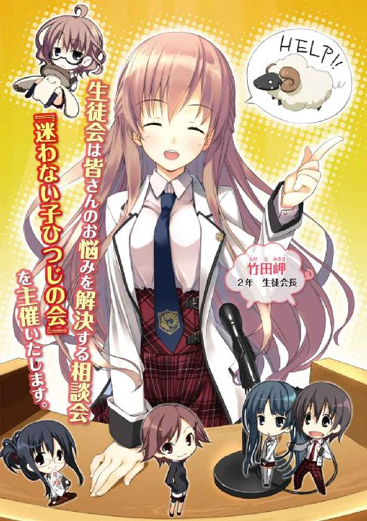
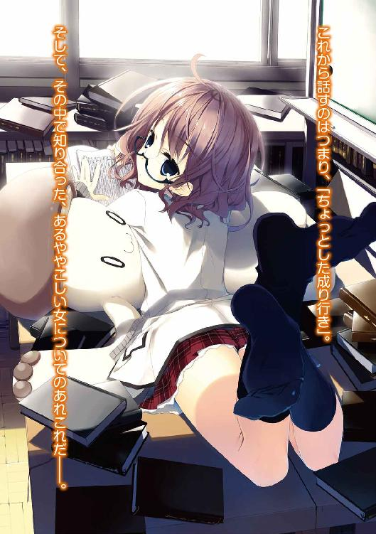
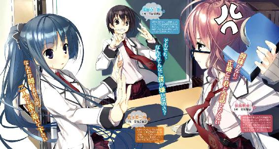
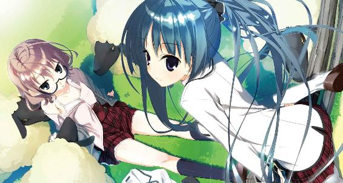
子ひつじは迷わない
走るひつじが１ぴき
玩具堂
角川スニーカー文庫
本作品の全部または一部を無断で複製、転載、配信、送信したり、ホームページ上に転載することを禁止します。また、本作品の内容を無断で改変、改ざん等を行うことも禁止します。
本作品購入時にご承諾いただいた規約により、有償・無償にかかわらず本作品を第三者に譲渡することはできません。
本作品を示すサムネイルなどのイメージ画像は、再ダウンロード時に予告なく変更される場合があります。
本作品は縦書きでレイアウトされています。
また、ご覧になるリーディングシステムにより、表示の差が認められることがあります。
本文中に「＊」が付されている箇所には注釈があります。その箇所を選択すると、該当する注釈が表示されます。
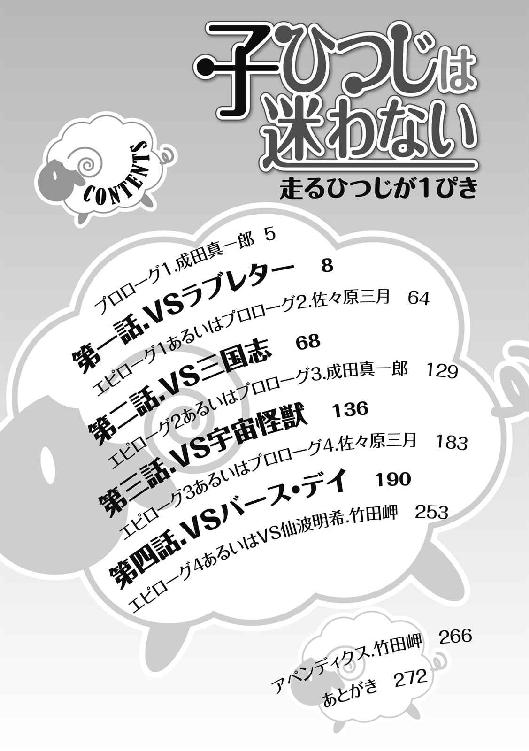
イラスト／籠目
デザイン／福田功（imagejack）
プロローグ１．成田真一郎
まったくもって。
事実は小説より奇なりとはよく言ったもので、本年度の生徒会選挙において対立候補のみならず身内からも失笑を以て迎えられた公約「『迷わない子ひつじの会』の設立」は、結果から言えば、後に学園名物と謳われるほどの盛況を見せた。
「生徒会は全ての生徒の雑巾であれかし。
──というわけで、生徒会は毎週一回、皆さんのお悩みを解決する相談会──『迷わない子ひつじの会』を主催いたします。やる気人間のメンバーが、どんな小さな相談にも全力で対応します。どんな深刻な相談にも全力で対応します。とにかくひたすら全力でお応えします」
かくして生徒会主要メンバーの決定して以降毎週水曜日の放課後には、生徒会預かりの第三会議室の前に「御悩相談千客万来 不迷羊会」の立て札が誇らしげに立っている。
最初のうち、僕を含めた生徒会メンバーのほぼ全員が、どうせ誰も来ないだろうと高をくくっていた。高校生にもなって、こんないかにも子供だましな代物を頼ってくる奴なんていないと思っていた──のだが、予想に反して初日から相談者が現れた。しかも、その風変わりな相談第一号の結果が評判となり、「『子ひつじの会』侮り難し」の風評が広まってしまったのだ。
この件において、僕は子ひつじの会の最終結論を相談者に告げた。一年生の書記、いわば下っ端の僕が何故そんな役を務めたのかと言うと──ちょっとした成り行きって奴だ。
これから話すのはつまり、その「ちょっとした成り行き」。そして、その中で知り合った、あるややっこしい女についてのあれこれだ。その女のお陰で、僕はこの相談事に正しい答えを得ることができた。
──しかし、実際に僕が告げた回答は、全くのデタラメだったのだ。
Part-A：「本日の相談」（「迷わない子ひつじの会」議事録より）
『まず、突然お手紙を差し上げたこと、どうかどうか赦して下さい。
それからわたしの気持ちを伝えさせて下さい。
好きです。
初めて会った時から気になっていました。それから、毎日のように君の姿を見るようになって、想いは募るばかりでした。
最初は、この気持ちがなんなのか、よく解っていませんでした。次に、恋したってかなうわけがないって諦めようとしました。でも、諦め切れなくて、君のそばで見苦しいことまでしてしまって。
苦しい。わたしは、この苦しみに耐えられません。
付き合って下さい。お願いします。
次に会った時にお返事を聞かせて下さい。
朝も夜もあなたのことを考えています。
鹿野』
○相談者・綿貫司（２年Ｃ組）〔※１〕
ゑ？ あ、はい......そうなんです。ラブレターなんです。
......ですよね？
ともかく、その手紙のことで相談なんです。
手紙はこの封筒〔※２〕に入れられていて、今日の朝、下駄箱に入ってました。昨日帰る時には確かになかったので、その後か今日の早朝に入れられたんじゃないかと思います。ちなみに、昨日は部活が休みだったので早めに帰りました。
（※１）今時こんな手紙をもらうだけあって、二年生の綿貫さんは線の細い感じの美形だ。さらりと垂れた前髪がふとした仕草で軽やかに揺れる。演劇部が公演する際、二回に一回は主演を務めているというのもうなずけた。
（※２）封筒は桜色で無地、横型のもので、中身は便箋ではなく、上品な柄の付いた印刷用紙に明朝体で印字されたものだった。残念ながらと言うべきか、封はごく普通の両面テープで、ハート形のシールとかではなかった。
イタズラではないと思います。ここまで手の込んだ嫌がらせを仕掛けてくるような知り合いには、心当たりがありませんし。
それでその......困ってしまっていて。
あ、断る理由だとか、不気味だから撃退策を考えてほしいとかじゃなくて......あれ？ 場合によっては違わないのかな？
......とりあえず、一番の問題は、差出人が分からないってことなんです。
──ええ、確かに、差出人は手紙の最後に書いてあります。
でも──心当たりのある『鹿野』さんが二人いるんです。
一人は部活の先輩〔※１〕で、もう一人は同級生です。
（※１）演劇部の鹿野さんなら僕も知っていた。鹿野さんは部長でも副部長でもないけれど、予算会議などここぞと言う時には「部長代理」を名乗って前に出てくる。一見小柄な可愛らしい人なのだが、口を開くとなんというか......なかなかパンチの利いた御仁だ。
鹿野先輩なのか鹿野さんなのか......どちらかが分からないと、答えを出すことができません。
......はい、もちろん、確認すればいいんです。それは分かってるんですけど......この手紙、次に会った時に返事してほしいって書いてありますよね？ 僕、舞台に上がる時はそれほど緊張しないんですけど、しらふで人と話すのって逆に苦手なんですよ。だから、できれば次に会った時に、確認とかなしに、返事だけしたいんです。「これの差出人はあなたですか？」なんて、合ってても間違ってても、相手は気を悪くするでしょうし......そんな風に思ったら、上手く話す自信がありません......
実はその......先輩だったら、受けようと思うんです。て言うか、僕はその......先輩が好きなんです。だから、たとえ手紙をくれたのが向こうだとしても、できるだけきれいな形で返事がしたくて......
幸か不幸か、今日は二人とも顔を合わせてません。部活は今日も休みだし、鹿野さんは今日欠席でした。
先輩からだったらいいな、とは思ってるんですけど、その可能性も低い気がして......
というのも......先輩にはもう、彼氏がいるんです。この学校の卒業生で、今は大学とアルバイトのかけ持ちをしている人です。去年の卒業生なんで僕も知ってる人なんですけど、忙しいという話は聞いても先輩と別れたって話は聞いてません。
だから、この手紙が先輩からの物である可能性は低いんです。......でも、演劇部の中でも僕は先輩に目をかけてもらってる方だと思いますし、もちろん二人きりではないですけど、休みの日にいっしょに遊びに行くことも多いんです。そんな感じだから、どうしても希望を捨て切れなくって......
もう一人の鹿野さんは、クラスメイトです。知り合ったのは二年になってからで、たまたま席が近くなってよく話すようになりました。部活の関係で、向こうの方では以前から僕を知っていたみたいです〔※１〕。......でも、特別に親しい間柄ってわけじゃなくて、せいぜい「仲の良い友達の一人」くらいだと思います。
ただ、少なくとも嫌われてるって感じたことはないので、可能性がゼロってことはないんじゃ......ないかと。
もちろん、彼女のことが嫌いなわけじゃないんですけど、やっぱり恋愛対象には思えないと言うか......先輩のことでいっぱいいっぱいで考えることができません。こっちが正解だったら、丁寧に断らないといけません。
（※１）綿貫さんは一年の頃から演劇部で役をもらっていた。僕も去年、文化祭の見学に来た時に、恐ろしく可憐なシンデレラを演じていたのを観た覚えがある。自分でも言っていたが、この人は舞台の上では別人のように大胆な演技をする。
え？ はい......それだけじゃ、どっちが手紙をくれたのか分かりませんよね......
最近、どちらかの様子がおかしかったことはなかったか、ですか？ うぅン......どうかな......あ、でも、言われてみれば......ちょっと気になることがありました。
じゃあ、二人に関するもうちょっと詳しい話といっしょに話しますね。
──まず、鹿野先輩の方から話します。
僕が先輩に会ったのは、去年僕が入学してきた直後でした。
なにか文化系の部活に入ろうと思って体育館周りの部活勧誘をひやかしてた時、なぜか太ったオオカミの着ぐるみを着た先輩──死ぬほど悪目立ちしてたんで見かけた人も多いと思いますが、異様に似合ってました──に捕まって体育館の隅っこに連れて行かれました。で、その前年に演劇部が公演した『サイケデリック赤ずきんパワー』のビデオ四五分をフルで見せられた末に「ロハで観たんだから入部するよなァァァ」とワケの分からない説得だか脅迫だかを受けて──僕は演劇部に入部しました。
......そういう人です。ちなみに先輩の彼氏は当時の部長でした。
最初がそんなだったんで、一年の頃は先輩を女性というより獣として意識してたんですが......まぁ、その......慣れとは怖いものと言いますか......
二年になってから、僕は毎日、放課後になると先輩といっしょに部活に行きます。別に、僕が迎えに行ったり、先輩が教室に来てくれるってわけじゃありません。演劇部の練習は体育館のステージを借りてやってるんですけど、うちのクラスから体育館に行こうとすると三年生の教室の前を通るんで、ついでに先輩に声をかけてるんです。先輩の場合、サボる心配はないんですけど、教室でずるずる駄弁って遅刻することがよくあったんで、僕が拾っていくよう部長に言い付けられてまして。
......いえ、まぁ......この際だから正直に言いますけど、下心はありますよ。
で......一週間くらい前のことなんですけど、先輩の教室に行った時に、ちょっと様子がおかしかったんです。
その日、僕が先輩のクラスの教室に入った時、先輩はいつも通りお友達と話していました。確か加納さんって言ったかな？ 背が高くて髪が短くて......ボーイッシュと言うか男前な感じの人です。クラスは違うみたいですけど鹿野先輩とは特に仲が良くって、なんでも相談し合う間柄って聞いたことがあります。相談と言っても、普段の会話から想像すると、暴走しがちな先輩を落ち着いた加納さんがなだめるっていうのがパターンみたいですけど。
小学校からの親友なのに一度も同じクラスになったことがないって愚痴ってました。
小柄で撫で肩で、スカートを穿いていると三角形のシルエットになる先輩とかっちりした加納さんが並んでいると、なにかの幾何学模様みたいで──要するに様になります。ちょっと悔しいくらいに。加納さんが僕より背が高いせいかな。
僕が教室の入り口から先輩に声をかけると、先輩は大げさに背を反らして、しゃっくりみたいな声を上げました。それ自体は別におかしなことじゃありません。先輩は、僕とは逆に舞台の上と私生活で全然キャラが変わらなくて、些細なことにいちいち大げさなリアクションを返すような人ですから。いつだったか、職業病だって言って笑ってました。
でも、その時はいっしょにいた加納さんもうろたえたような顔をして僕と先輩を見比べてたので、何か僕に関することか、男子には聞かれたくない話をしていたんだと思います。でも、先輩はすぐに動揺を消して加納さんに目配せすると、だだッと駆け寄ってきて僕の肩に鋭いエルボーを撃ち込みながら教室を出ました。
その後は別に、変わった様子もありませんでした。普通に体育館に行って、普通に準備運動して、発声練習して......僕も先輩も普通に部活して帰りました。ただ、その日以来、「綿貫はモテてんのか、遊んでんのか」とか「お前は年上好きだよな。そういう顔をしている」とか、なんだかセクハラまがいのことを言われるようになりました。いえ、先輩がオヤジくさいことを言うのは今に始まったことじゃないんですけど、それまでとベクトルが変わってるというか......ごめんなさい、フィーリングです。
──と、いつもと違うことというと、それくらいです。と言って、今聞かれて初めて思い出したくらいなんで、そんな露骨な変化があったわけじゃありませんし、完全に僕の気のせいかも知れません。
もう一人の──クラスメイトの方の「鹿野さん」の話もしますね。
さっきも言ったように、鹿野桃子さんはヒマな時に雑談を交わす程度の関係で、まぁクラスの中では一番仲の良い女子だと思います。最初に話しかけてきたのは彼女で、第一声は確か「君、シンデレラだよね」だったと思います......面食らったのと同時に緊張しないで話せたのを覚えてます。彼女のそんな人なつっこさは誰が相手でも同じなんですけど、僕の方は女子の友達を自分から作れるタイプじゃないので、貴重な存在です。
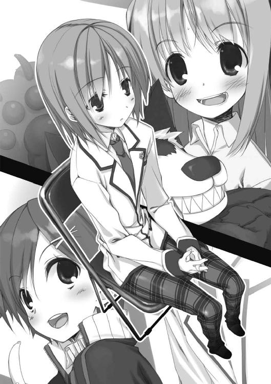
普段の話題は、授業のこととか最近読んだ本のこととか、あるいは漠然と「ダルいねぇ～」とか──後はなぜかファッション雑誌を見せられて意見を求められたりします。念のため言っておくと、僕は別に、女物の服飾に詳しいわけじゃありません......と言うか、舞台のあれは入部した時に先輩に無理矢理女役を押し付けられたのが定着してしまっただけで、僕の希望は一欠片も含まれてないですからね。あの衣装は、そういうのが好きな先輩がいて......
......ごめんなさい、話がそれました。
で、鹿野さんとはいつもそんな話をしているんですが、ちょっと前におかしなことを訊かれたんです。その前から、少し元気がないなとは思ったんですけど、その時は特に上の空な調子で、
「綿貫くんって、子供とか欲しい？」
......って。
その時の僕も、今みんながしているのと似たような顔をしていたと思います〔※１〕。僕らの会話が聞こえていたらしい周囲の数人が硬直したのが視界に引っかかって、理由の解らない冷や汗が吹き出しました。
（※１）僕も含め男子のメンバーは一様にみっともなく狼狽していた。女子はなにか、テカテカし始めた。
なにせ直前の話題が今日の弁当のおかずがどうのという話だったんで、あまりの唐突さに僕はしどろもどろになって「どうかな」とか「その時になってみないと」とか間の抜けた答えを返しました。......その時ってなんだ......？
僕の答えを聞いて、鹿野さんはハッとしたように──どうも、その質問は半ば無意識に口から出たみたいでした──顔を赤くして「ごめんごめん、変なこと訊いちゃったね」と掌を立てて謝ってきました。そうして、「いやね、昨夜のテレビで、ものすごいスピードででんぐり返しする外国のびっくり赤ちゃんの投稿ビデオが流れてさ。それがもう、むちゃくちゃ可愛かったもんだから、頭に残ってて口に出ちゃったってわけさ」と説明してくれました。
僕も、聞き耳を立てていた数人もそれで緊張が解けました。彼女のキャラクターからすれば、それなりに納得のいく理由だったからです。それでも何人かの女子が妙な目で僕たちを見てましたけど、その後の鹿野さんがいつも以上の元気さで四方八方にしゃべりまくるのを見て、他の興味に流れてくれたみたいでした。
その時はそれで終わりました。
でも、その後もやっぱり鹿野さんは元気のない様子で、誰とも話してない時は、うつむいて何か考え込んでいるみたいです──ええ、今もそんな風にぼうっとしてます。明らかに平常の彼女には見られないローテンションなんで、仲の良い女友達や先生がそれとなく理由を訊いてみているみたいなんですけど、鹿野さんはその時だけ笑顔を引っ張り出して心配ないとアピールするので、それ以上は聞けてないようです。
あと、これは関係あるのかどうか判りませんけど、ちょっと前に、鹿野さんが教室の前の廊下で上級生の誰かと話しているのを見たって友達がいます。その時、上級生の人はなんだか思い詰めた様子で、鹿野さんは困ったようにその人を見上げてたらしいです。あ、ちなみに、ネクタイの色で上級生なのは間違いないって言ってました。なんかカッコイイ人だったって話です。
気のせいか、その頃から鹿野さんから話しかけてくることが少なくなったような。まぁ、その前から沈みがちだったんで関係ないかも知れませんけど。
様子が変かどうかで言えば、先輩より鹿野さんの方が変ですね。でも、なんか深刻そうに見えますし、僕に対してだけ態度が変わるってわけじゃありません。それに、ラブレターを出しておいて今日欠席するというのも、なんだか......
......っと、僕が話せるのはこれくらいですね。
どうでしょう？ この手紙の差出人、判りますか？
あの......こんな浮ついた相談で申し訳ないとは思うんですけど、「なんでもいい」って話だったので......それに、僕としては至極真剣に悩んでます。正味がけっぷちです。
明日は部活があるし、鹿野さんも来ると思うので今日中に答えを出したいんです。よろしくお願いします〔※１〕。
（※１）そう締めくくって、綿貫さんは姿勢良く立ち上がって頭を下げた。
Part-B：成田真一郎
ふぅ......
──綿貫さんの相談を中古品のノートパソコンに入力し終えて、僕──生徒会一年書記、成田真一郎──は小さく息を吐いた。相談の本筋自体はシンプルだったけど、みんなで気になる点を質問しながら話を聞いたので、そこそこのテキスト量になってしまった。
ちなみに、相談者の話の間に（※１）（※２）といった注釈が入っているけど、これは、僕か佐々原──つまりその日の記録者が、議事録を書く際に話を補足するために付したものだ。もっとも、極めて個人的な感想等が混ざっていることもあって、正式な議事録には残っていない箇所も多い。書記が個人的に残した「メモ版」の記述だと思ってほしい。
さて、ここは第三会議室。校内に四つある会議室の内、生徒会で使用できるのは第三と第四だ。それぞれ、部室棟の三階と本館の一階にある。月曜日と水曜日は第三を使う日で、生徒会メンバーの間では「狭い方」で通称されていた。
今日出席しているのは、発起人である生徒会長を始め有志で集まった生徒会関係者が一〇人あまり──これが現時点での「迷わない子ひつじの会」の総勢だ。それでも席は半分くらい埋まっている。そして、コの字形に並んだ机の内側で、長い話を終えた綿貫さんが緊張のためかぐったりしていた。
一同、しばらく発言がなかった。色々聞いた割りに決め手に欠ける。しかも問題が恋愛がらみとあっては、気軽に話すべきか深刻に話すべきかすら判断に迷う。面子の半分くらいは、そもそも思考を放棄しているのかも知れない。
そんな中、
「うぅン......どうなのかしらね？」
会長が、まろやかにうなって小首を傾げた。言葉に意味はなかった。だけど、それは「第一声」になった。そういう人だった。
なにかが解けたように、一同がしゃべり出す。
「どう......って......」
「詳しく聞いといてなんだけど、話だけじゃ判らなくね？」
「先輩の方じゃないの？ クラスの子はむしろ避けてるんでしょ？」
「......ってか、演劇部の鹿野さんってあれだよな。今年も着ぐるみで新人勧誘してた──」
「あぁ、あのアリクイか」
「うわ、だったら気まずいな。鹿野さんの彼氏って兄貴の知り合いだよ」
「いやいや、あたし鹿野さん知ってるけど、浮気するような人じゃないよ」
「じゃあクラスメイトの方か？ 確かに怪しい話もあったけど......」
「結局、決め手に欠ける感じだな......」
「待って。そもそも、ホントに二人のうちのどっちかなの？」
生徒会一の慎重派、会計の宮野先輩の言葉に、僕は資料束の中にあった五十音順の生徒名簿を確認してみた。（住所などの詳細情報が載ったものは原則禁帯出なので、持ち歩けるのは名前と学年・クラスだけが書いてある簡易版だ）
「ええと......『鹿野』さんは全校で三人。あ、でも、もう一人は一年で男子ですね」
除外してもいいでしょう、という風に答えたつもりだったのだけれど、宮野先輩はなぜか、むしろ期待するような目で綿貫さんを見やった。文字通りの──悲しいほど文字通りの──シンデレラボーイ・綿貫さんは、不思議そうに目をしばたたかせて、
「え？ いや、存在すら知らなかったけど」
宮野先輩は無念そうに舌打ちした。意味は考えないようにする。
ともあれこれで、人違いの可能性は消えたと見ていいだろう。念のため確かめておくと、この学校に鹿野という先生はいない。何かと物騒で警戒が厳しい昨今、部外者が下駄箱まで入ってきた可能性も低いと思う。
........................
再びの沈黙。意見のある人は一通り発言をし終えたようだ。しかし、決定的どころか有力な推論の一つも出てこない。やはり、手紙そのものと綿貫さんの主観情報だけでラブレターの主を推断するのは不可能なのだろうか。
──行き詰まった。そのタイミングで、
「うぅん......二〇分ほど休憩にしましょう」
会長が言った。みんながホッとした顔を見せる。会長は、問題が難航してしまい肩身が狭そうにしている綿貫さんに目を向けた。
「お待たせしてごめんなさいね。でも、ちょっと難しい相談だから、もう少し考えさせてもらっていいかな？」
会長は物凄い美人というわけでもないけれど、申し訳なさそうにひそめられた眉にはどこかしら相手をドキリとさせるものがあった。
「あっ、はい......て言うか、御面倒おかけします！」
綿貫さんはあたふたして恐縮している。ちょっと赤面気味だ。同学年の会長に思わず敬語を使っている。
面白がって眺めていると、隣から声がかかった。
「どう思います？」
僕と同じく一年の書記、佐々原だ。学校中でも、露骨に一年生の僕──悲しい話だが、学年色云々以前に顔立ちはかなり幼い方だ──に敬語で話してくる相手は彼女しかいない。
「なにやら、ややこしいですね。どちらが差出人でも誰かが失恋してしまうわけですし」
口調は硬いが雰囲気は柔らかい。必要がなければ常に背筋を伸ばしていて、後頭部で一つに束ねた黒髪が、背中と平行にまっすぐ垂れている。いわゆる切れ長の目をしているが、瞳が凪いだように静かなせいかキツい印象はない。背は多分僕よりちょっと低いくらいで小柄とも長身とも言えないけど、姿勢のせいで実際より高く見えた。
クラスは違うが、生徒会で同じ仕事をしているせいかよく話す方だ。彼女の敬語はだいぶ話し慣れてきた今も変わる気配がない。なんだかこそばゆいので、同級生なんだから敬語はいいよ、と言ってみたこともあるけれど「クセなので気にしないで下さい。別に、特別敬意を込めてるわけじゃありません」との答えが返ってきた。うれしいような悲しいような。
彼女の手元を見ると、話しながらもルーズリーフのノートにシャーペンを走らせていた。瞬く間にシンプルなイラストが出来ていく。意識は会話に向いているはずなのに迷いない筆致だ。これは佐々原の手癖で、何かを考えている時に、その内容を半ば無意識に──そもそも視線が手元に行ってない──素描してしまう。今は、今回の件の関係者の簡単な関係図を描いているようだった。いかにも淡白な容姿に反して、絵柄の方は存外に可愛らしい。
僕は、こきこきと肩を鳴らして応えた。
「聞いた話や、鹿野さんの──ああ、演劇部の方の──性格を考えると、どうもなさそうなんだよね......下手をすると、最初に消したイタズラの線が出てきちゃうんじゃないかな」
「それにしては、この文面おかしくありませんか？」
あまり本気ではない僕の言葉に、佐々原はシャーペンを走らせていた手を止めた。僕の手元にあった例の手紙を読み返して、そういう仕掛けの付いた人形のように首を傾げている。確かに......良くも悪くも純情そうな綿貫さんをからかうのが目的なら、もっとストレートな──それこそ差出人が一発で判るような文章にするはずだろう。この手紙に書かれている心情は、なんだか複雑過ぎる。......あと、「見苦しいこと」ってなんだ？
「そうだね......ん～......」
うなってみても答えは見つからない。なんとなく引っかかっていると言うか、見逃していることがあるような気がして落ち着かない──
......まだ休憩時間は残っている。何か気分転換した方が良さそうだ。
ふとそんな風に思い立って、僕は資料束の一部を持って立ち上がった。佐々原が目顔だけで問いかけてくる。
「ちょっと散歩」
「いってらっしゃい」
頓着ない──好ましいさばけ方だと、思う──佐々原に見送られて、僕はやる気のある人とない人でくっきり分かれつつある生徒会──いや、「迷わない子ひつじの会」の面々を眺めながら、部屋の隅にある扉に手をかけた。
廊下への出口ではない。隣の部室棟資料室──という名の物置部屋に通じる扉だ。文化系の部活の書類や資料をまとめて保存するための部屋で、問題の演劇部の物を始めに、図書室に置けないような一般性のない資料がごちゃごちゃと詰め込まれている。保存と言えば聞こえは良いが、「当面要らないけど捨てるのは怖い」微妙な情報を押し込めておく、準ゴミ箱のような部屋だった。
部活には所属していない僕だけに入るのは初めてだったが、そういう部屋なら落ち着いて考え事もできるというものだろう。頻繁に人の出入りのある場所とも思えない──
などと考えながら資料室に入った僕は、意外な先客に目を丸くした。
「仙波？」
壁一面に並べられたキャビネットと小さな黒板に囲まれた部屋の真ん中に、閲覧スペースということなのか、化粧合板の折りたたみ式デスクが置いてある。そこで、彼女は一見奇妙な姿勢で本を読んでいた。
仙波明希。
一向に見慣れないが故に記憶に残る同級生。
佐々原とは真逆の特徴──ぼさぼさのショートヘアと、その下から眼鏡越しにのぞく気だるげな目を見間違えるはずもない。
彼女は僕のクラスメイトで、そしてそれ以外は何も知らない存在だった。いつも自分の席で本を読んでいる印象ばかりがある。昼休みは決まって姿を消す。そんなだから、話したこともない。話す理由が見つからない。想像も付かない。あまりにも隔絶し過ぎている、その極端さが、かえって僕に彼女への関心を途切れさせない。
今も理解不能なことに、誰も居ないはずの部屋で、ぬいぐるみにボディプレスをかけたような格好をして聞き覚えのない作家の全集を読んでいた。こっちには一瞬目をくれただけで、無感動に読書へ戻った。
......何からツッコむべきだろうか。
僕はたっぷり数十秒悩んだ後、一番どうでもいいがどうしても気になることから訊いてみた。
「ええと......そのぬいぐるみは何？」
答えてくれないかとも思ったが、
「ぱやきのさん」
と淡白な声が返ってきた。教室で先生に指名された時に聞くのと同じ、平板で事務的な口調だった。
それはさておき、一つ賢くなった。まるまっちくデフォルメされたキノコの柄に楕円形の目二つとωのような口を付けた（00ω）キャラクターのことを、ぱやきのさんと呼ぶらしい。
さて、次の問題だ。
「そのぱやきのさんは、なんで潰されてるんだ？」
そう、机の上に寝かせられたぱやきのさんは、仙波の瘦せぎすな上体にのしかかられてぐんにゃりと潰れていた。偶然だろうが、キノコの顔が窮屈そうに歪んでいる。
仙波はすぐには反応しなかった。が、生徒会のメンバーを無視して痛くない腹を探られるのを嫌ったのか、わずかに吐息して答えてくれた。
「......この姿勢で読むのが好きなの。目が疲れないから」
言われてみれば、顔が本と平行になる位置に来ている。そういうものなのだろうか。
そこから先は、実際的なことを聞いてみた。
問、なぜこの部屋に居るのか？
答、自分は文芸部の幽霊部員だが、規則上この部屋を使用することに問題はない。
彼女の発言がほぼ単語単位だったため、右のような回答を引き出すのに五分近くの会話を要した。ちなみに、幽霊部員なのに学校に残っている理由については、お互い言及しなかった。
だが、後になって考えてみると、この五分には破格なまでに大きな意味があった。長々と部屋に居たせいで、この部屋のとある性質を知ることができたのだ。
──隣の会議室の会話が丸聞こえになっている。
単純に壁が薄いのか、たまたま良い具合に反響する空気口があるのかは謎だが、ともかく今も、ざわざわとまとまりない論議の声が聞こえてきている。まだ休憩時間が終わっていないので意見が取りまとめられていないせいもあるだろうが、いまだ有力な結論は出ていないようだ。
ふと気になって、依然として僕に目を向けず本を読んでいる仙波に訊いてみた。
「......もしかして、さっきの相談聞こえてた？」
「他言するように見える？ しないわよ」
彼女は、投げやりに付け足した。
「そんなめんどくさいこと」
会話をすることすら大儀そうな口調には、非常に説得力があった。
そして僕は、隠すことも気取ることもなく本音を語るその横顔に、名状し難い興味を覚えてしまった。
──こいつなら、どう考えるだろう？
「仙波はどう思った？ 手紙の差出人はどっちの鹿野さんだと思う？」
問いかけに、仙波は今度こそ無視を返してきた。さすがに予想できた。
僕はめげることなく、部屋の隅に立てかけてあったパイプ椅子を引っ張り出して仙波の対面に座った。デスクの上に肘を載せて、あからさまに「聞く態勢」を作ってみせる。
仙波は──今度は予想外なことに──明確な嫌悪を見せて僕を睨め上げてきた。そして、独り言なのか恨み言なのか、憎々しげに呟く。
「だから関わり合いになりたくなかったのに......」
──正直、かなりなショックだった。自分が誰にでも好かれる人間だなどと自惚れたことはないけど、ろくに会話したこともない女子にここまで嫌われる人間だと思ったこともなかったから。
だけど、その落胆を顔に出してしまうと負けな気がしたので、僕は努めて無感動を装った。
その甲斐あってか、仙波は舌打ちでもしかねないしかめ面になった。今気付いたけど、顔の輪郭が丸めなせいか悪相を装うと幼く見える。収穫。
その渋い顔のまま、仙波はようやく伏せていた上体を起こして椅子に深く腰かけた。本をデスクに、ぬいぐるみ──使い方からするとクッションなのか？──を膝の上に載せる。
そして、面白くもなさそうに先ほどの問いの答えを返してきた。
「どっちも何も──手紙を出したのは綿貫さんの挙げた二人じゃない。それどころか、地球上のどんな鹿野某でもない。
そう思ったけど」
「ゑ............？」
仙波の半ば断定的な物言いに、僕は間の抜けた声を出してしまった。
「それって......この手紙が何かのイタズラってことか？」
「違う──と思う。少なくとも悪意で書かれたものではないでしょうね」
「どうしてそう思うんだ？」
「否定の理由は自分たちで出していたでしょ？
演劇部の鹿野さんにはすでに交際相手がいて、浮気するようなタイプではない......と言うか、わたしが聞かされた伝説を信じるなら、あの人は男にラブレターを送るようなたまじゃない。
相談者の同級生は、何かの事情で情緒不安定になっている節がある。しかし相談者の語った彼女の性格や相談者との関係の度合いからすると、たとえ相談者に好意を抱いていたとしても、そこまで深刻に思い詰める理由にはならないと思われる。それならば、それほど深刻な悩みを抱えた状態で告白も何もないでしょう。
イタズラだとすれば手が込み過ぎているし、文面が不自然。これがイタズラだったとしたら、発覚した後に恥ずかしい思いをするのは引っかかった方じゃなくて仕掛けた本人でしょうね。
もちろん、どれも確実に違うという保証にはならない。でも、この可能性の低さなら、他の差出人を考えてみる理由にはなる」
......別人のような多言ぶりだ。しかも眠たげな声なのに言葉が途切れない。全く興味がなさそうな顔をしているくせに、隣室の話をしっかり聴いて独自の思考を組み立てていたのは明らかだった。
「うん。そこまでは解る」
僕はうなずき、しかし反論した。
「けど、綿貫さんは他に差出人の心当たりはないって言ってるんだよ」
「本人に心当たりがないだけ......もしくは無自覚なだけ、ということはざらにある」
「それも解る。でも、手紙の最後には間違いなく『鹿野』って書いてあるんだ」
「それは本当に『鹿野』なの？」
？ どういう意味だ？
理解できず、仙波も補足しなかったので、別の問題を口にする。
「でも、『鹿野さん』じゃないとしたら、手がかりがなくなって、結局差出人は判らないままじゃないか」
「そうでもない。相談者の話の中に、毎日のように顔を合わせているという女子がもう一人出てきたでしょ」
「もう一人......？」
僕は記憶の箱をひっくり返して、綿貫さんの話を思い出した。キーボードを叩いて証言を記録していた僕だ、他の人よりも詳細に記憶しているはずだが──二人の鹿野さん以外に特別印象的な女子が出てきただろうか？
首を傾げる僕に、仙波はかすかに苛立った目を向けてきた。
「そもそも先輩の方が怪しいと思われた理由は何？」
「それは......演劇部の迎えに行った時に変な反応を──」
あ、そうか。言いかけて、気付いた。
「先輩の友達の人だ。背の高い、何でも相談できるとかって。
名前は確か、えぇと......」
「かのう」
「そう、かのうさん。
......なるほど、いつも鹿野さんといっしょにいるっていうその人なら、放課後ごとに迎えに来る綿貫さんとも頻繁に顔を合わせるはずだ」
確かに、手紙の文にある「毎日のように君の姿を見るようになって」という箇所に一致する。でも、その人が差出人なんだとしたら、なんで最後に「鹿野」なんて書いたんだ？
疑問を口にする前に、仙波が先回りした。
「相談者の話を覚えている？
一、鹿野さんとかのうさんは小学校からずっと同じ学校に通っている。
一、でも一度も同じ組になったことがない。
──何故か？」
仙波の言葉はやや早口で淡々としていたが、最低限の抑揚が聴く者の理解を逃さない。そして、あえて自分では完結させず、話している相手から引き出すという形で理屈を組んでいく。相手に気を遣っているのではなく、それが仙波一流の思考方法なのだろう。
僕は、我知らず彼女との会話に引き込まれていた。我ながら平凡と思う発言一つするにも、密かな昂揚が声に籠もる。
「偶然......は除外するんだよな？」
「当然、当たり前よ。普通、学校側の都合として、不仲でもない生徒を意図的に別の学級に割り振るとしたら、どんな理由が考えられるか」
仙波の返しはやはり速い。卓球のラリーでもする心地で、必死に思考を巡らす。
「じゃあ......逆に仲が良すぎて、いっしょにすると気が大きくなって問題行動を起こし易くなるから、とか？」
「親友同士なのだからそれもありうるけど、話を聞く限りかのうさんはむしろ鹿野さんのブレーキになりうる人材みたいだから、違うと思う。
もっと単純に考えて」
「よく聞くのは、同じ名前の人は別にするとかって......」
──そこまで来てようやく、仙波の言いたいことが解ってきた。
『それは本当に「鹿野」なの？』
『確か加納さんって言ったかな？』
五十音順の生徒名簿には他に該当する「鹿野」はない──
そうか──！
「鹿野さんなんだ！」
思わず大きな声──しかも聞いただけでは意味不明──を出した僕に、仙波はキノコの傘に顎を埋めるようにうなずいた。
「だとすれば辻褄は合うわね。相談者が親しいのは鹿野先輩であってその友達のかのうさんではないんだから、字面を知らなくても不思議じゃない。この学校の名札は強制じゃないから付けている生徒もそう多くないしね。
それに、鹿野さんが鹿野さんにこの件の相談をしたのだとすれば、鹿野さんが後輩の恋愛事情を気にしたり年上の女性を奨め出したりしたことも納得できるでしょ。友人のために一肌脱いだ形ね。やり過ぎて混乱させただけだったみたいだけど」
仙波が滔々と語る内にも、僕は持ってきた資料の中から名簿を取り出し、カ行の辺りを探して──鹿野浅葱の名前を見つけていた。記録を取っていた時には、この一件には無関係な人だと思ったから「加納」と考え無しに入力してしまったけど、その時点で名簿を確認していれば気付けたことだったか。
「同級生の方の話に出てきた、思い詰めた上級生に迫られたというのも、相手が鹿野さんなら条件に合う」
確かにそうだ。二年の鹿野さんは、その上級生を前にして「困ったようにその人を見上げてた」らしい。ならば背の低い鹿野先輩ではないだろうし、逆に長身の鹿野さんは適格となる。
「仲良く話すところを見て、付き合っているのかもと勘繰ってしまったんじゃないかしらね。で、問い詰められた二年の鹿野さんは、それ以上誤解されないように、積極的に綿貫さんに話しかけるのを控え出した、と」
そしてそれは、手紙の中の「君のそばで見苦しいことまでしてしまって」の部分に対応するのかも知れない。
「──わたしが思い付いたことと言ったら、それくらいよ」
考えうる証左を示し、彼女はようやく言葉を止めた。そうなると、人が変わったように元のだんまりに戻って、もう話すことはないから消えてくれとでも言わんばかりに睨んでくる。
僕は、その視線には気付かないふりをして考えた。
──僕らは二人とも鹿野さんのことを直接に知っているわけじゃない。だから、今の仙波の推論も、あくまで彼女の「意見」だ。だが、ここまで成立してしまっている以上、無視はできないだろう......と言うか、勢いに流されているせいもあるだろうが、僕は仙波説が事の真相だと思っていた。
さて。
この考えを綿貫さんに話したらどうなるだろうか？
恐らく、きっぱりと断ってしまうだろう。綿貫さんの態度を見る限り、鹿野先輩に対する想いは至って真剣だ。鹿野さんが鹿野先輩の親友だとはいえ、名前をどう書くのかも知らなかった相手になびくとは思えない。
でも、それは鹿野先輩も同じことだ。あの人が本気で交際しているのなら、その相手を裏切るような真似はしないだろう。僕の知る限り、彼女が暴走を以て知られるのは、要するにまっすぐ過ぎるせいなのだから。
二年の鹿野さんは置いておくとしても、綿貫さんも鹿野さんも二人して失恋してしまうわけだ。いや、綿貫さんは報われることのない片想いの現状を引きずるだけだろうか。
仙波の説が正しいのなら、これは避けられない結果だ。
しかし──これでいいのか？
誰もが幸福になれないのは仕方ない。でも、この相談で何も変わらないというなら、それは──不幸だと、思う。
きっと僕はせっかちなんだろう。子供の頃からそうだった。
時計を見ると針を進めたくなる。
だいぶ話し込んだが、休憩時間はまだ数分ある。
僕は、立ち上がった。
Part-C：仙波明希
やおら立ち上がるなり、成田くんは言った。
「三年の教室に行ってみる。まだ鹿野さんか鹿野さんが残ってるかも知れない」
......いちいち唐突な男だ。しかも、意味が解らない。
わたしは、イライラして膝の上のぱやきのさんを縦に潰しながら、言ってみる。
「はぁ、そう。でも、それをわたしに宣言する意味が解らない」
しかし、答えは返ってこなかった。
「いってきます」
彼はそれだけ言い捨てて──わたしはその言葉がここ数年間で一番アタマに来た──会議室には戻らず、直接廊下に出て行った。
──全力疾走で。陸上でもやれば良い線行くのではないかというくらいの、勢い良いスタートだった。部屋を揺らすような風が吹いた。気がする。
廊下に出てもそのままだった。爆竹を鳴らしたような忙しない足音が鳴っては離れていく。いくら休憩時間が残りわずかとはいえ、生徒会のくせに思い切り校則を違えていやがる。
..........................................
......行ったか。
気配が彼方に遠ざかるのを感じて、わたしは重い溜息を吐いた。
成田真一郎。クラスの中では「なるたま」などと妙な略称で呼ばれている。見た目、これといった特徴のない──あえて言えばやや童顔か──男子生徒。
......ついに関わってしまった。入学式の日、教室で読み上げられた名前を聞いた時から嫌な感じはしていた。だから他の同級生以上に接点を持たないよう気を付けていたつもりなのだが──まさかお気に入りのくつろぎスポットであるこの部屋で捕まってしまうとは。
悪いことに、嫌な予感通りの人物だった──いや、存外に落ち着きがない分、予想よりもなお悪い。世間一般の尺度で言えば悪人ではないのだろうが、自分のような人間からすれば、あれは一番近寄りたくない種類の存在だ。
有り体に言って、めんどくさい。
ようやく見つけた、校内で一人になれる上に快適に生活できる部屋だったが、成田くんが何度も接触してくるようなら撤退も考えなくてはならないかも知れない。頭の痛い話だった。
我ながら憮然として、読みかけの本に意識を戻す──............いや、戻そうとして、できなかった。
どうしても意識が、空っぽになった対面のパイプ椅子に向いてしまう。
......どうするつもりだろう？
さっきわたしの語った推測には、なんら証拠がない──成田くんが必死に繰っていた名簿に「鹿野」という名があったようだから、可能性は跳ね上がったが──のだから、確認しに行くのはいい。事が相談であって調査ではないのだから必要とまでは言えないが、まぁ、気になるのだろう。わたしだって自分の考えが合っているのかどうか、少しは気になる。
だけど──確認して、真相を知って、それでどうする？
それがわたしには予想もできない。壁越しに聴き取った問題の答えは導き出せても、さっきまでテーブルの向こうに座ってバカみたいにうなずきながらわたしの話を聞いていた成田真一郎の思考は全く理解できない──
........................
やめよう。わたしが他人に干渉されるのを嫌う人間である以上、興味本位で他人のやる事を詮索するべきではない。成田くんが何をしようと、その結果で綿貫さんとやらがどうなろうと、わたしには関係のないことだ。
そう割り切って、今度こそ読書に戻ろうとしたその時に、成田真一郎が帰ってきた。
......いや、違う。間違えた。またやって来た。
戻って来る時も全力だったのだろう。ハァハァとしんどそうに息を荒らげ、ふらつきながらテーブルに手を突き、膝を折る。勇んで走り出した割りには体力が続かなかったらしく疲労困憊で、ちょっとした落ち武者みたいな有り様だ。
だが、その視線は強かった。まだやることがある──そんな目。
わたしは、まだ立ち直れない成田くんを冷たく眺め、皮肉を込めて言ってやった。
「休憩終了には間に合ったわね」
汗だくの成田くんはまたしても応えず、乱れた息を整えながら、
「鹿野さんの方に会えた」
訊いてもいない報告をしてきた。
......まぁいい。その気なら結果を聞いてやろうじゃないか。
「それで？」
成田くんは、そこでようやく息を均して立ち上がった。
そうして、どこか硬い笑顔で、言った。
「ありがとうな、仙波。いつかお礼するよ」
..................
は？
思わず、言葉を失う。
また意味が解らない。何が「ありがとう」なのか？ そんなことより、鹿野さんに会った結果はどうだったのか？ わたしに礼を言うということは差出人は彼女だったのか？ ──それより何より、まだわたしに関わろうというつもりなのか？
唐突すぎる疑問の団体に思考が追い付けないでいる内に、成田真一郎はもうこちらに頓着せず、隣の第三会議室へと戻って行った。止める気もなかったが、止める暇もなかった。
休憩時間が終わるせいもあるのだろうが、これは......なんだ？
釈然と、しない。
──ほどなくして、隣室の相談会──子ひつじがどうたらとか言ったか──は再開された。相変わらず丸聞こえだ。会議室の話が聞き放題というのは明らかに問題だが、この資料室の使用率があまりに低いせいで、今まで誰も気が付かなかったのだろう。
成田くんがその辺の警告を入れるかと思ったが、彼はそれには全く触れなかった。
その代わり、率先して意見を述べた。
皆が確証を持てないでいるのを勢いで押し切るように、壁越しにもはっきりと伝わる強い声音で、言ったのだ。
「手紙の差出人は演劇部の鹿野さんだと思います！」
わたしは頭を抱えた。
＊
翌々日、金曜日の放課後。
今日も今日とて、わたしはこの部室棟資料室で本を読んでいた。水曜日に読んでいた本はすでに読み終えたので、今手の中にあるのは以前文芸部の部室から拝借した本だ。
部屋の真ん中に置かれた折りたたみデスクに、いつもの姿勢で寄っかかり、西日を背に活字を目でなぞる。真オレンジな夕日が背中を灼くのが分かるけれど、古びた電灯以外に光源がないこの部屋では、天日の助けなくしては目の健康を保ち得ないのだ──うン、暑い。我慢。
と、いつもはそんな感じで下校時間ないしきりの良いタイミングまで一人で過ごすのだが、今日は違った。忌々しいことに。
ノックには応えなかったのだが、そいつは勝手に入ってきた。
成田真一郎。
例の水曜日は、相談会終了後に生徒会の人たちといっしょに帰り、その翌日──つまり昨日──は終日落ち着かない様子でわたしには話しかけてこなかった理解不能の同級生。
わたしは前のめりの姿勢のまま、視線を上げなかった。成田くんは気にせず、また対面のあの席に座った。パイプ椅子はきちんと片付けておいたのだが、ご苦労なことにわざわざ引っ張り出して。そうして、
「コーヒー、飲むか？」
およそトンチキなことを言いながら、抱えていた二本の缶コーヒーの片方を差し出してくる。購買部で『ロング缶なのに一〇〇円！』の札を添えられて売っている、スーパーの特売コーナーでしか見ないようなメーカーの缶コーヒーだ。自分で飲んだのはだいぶ前になるが、素っ気ないともクセがないとも言える素朴な味わいから、愛飲している学生は多い。
......人に贈ろうとするものをケチるな。
無視しようかとも思ったが、ここは拒絶してみせた方が牽制になると考えた。
「コーヒーは飲まない。目に刺激があるから」
珍しく期待通りの反応が得られた。成田くんは哀れなくらい困惑して──しかしすぐに開き直る。気のせいか、溜息の吐き方が堂に入っていた。
「分かった。これは二本とも僕が飲もう。
次は別の......ジュースなら飲めるよな？」
......「次」ってなんだ？
しくじった、やはり無視すべきだったのだ。誰とも深く関わらず本を読んで過ごしている内は滅多に味わわない感覚──激しい後悔が頭と胃を重くする。
わたしが嫌な顔をしているのが判らないのか、成田くんは一本目のコーヒーのプルを開けながら、平坦な声で言ってくる。
「さっき、鹿野さんに殴られたよ」
んぇ？
さすがに驚いて、顔を上げた。鹿野さんと言うと、例の綿貫さんにラブレターを出した、背の高い──などと思い出す内に、成田くんの顔が眼路に入る。
一昨日からまともに顔を見ていなかったが、なるほど、確かに右の頰がうっすら腫れていた。
わたしは思った──
ほぅ、鹿野さんは左利きなのか。個人について、顔より先に利き腕を知ったのはこれが初めてだ。どうでもいいけど。
「昨日の放課後......綿貫さんが、先輩の鹿野さんに告白したんだってさ」
「......『だってさ』じゃないでしょ。
君がそそのかしたんでしょうが。君はその時点で鹿野さんに会っていて、差出人が誰なのか知っていたにもかかわらず、ね」
そう、一昨日の相談会で、この男は「結局鹿野先輩が手紙を出した証拠はないですが、可能性は高いのだから、これを良い機会と取って告白してみてはどうでしょうか」などと調子のいいことをほざいて、逡巡する綿貫さんを焚き付けたのだ。
「それで、結果は？」
「きっぱりフラれたって。
で、なんで本当のことを教えなかったのかと、鹿野さんに一発喰らった。どうも、自分のことよりも、綿貫さんが傷ついたのが逆鱗に触れたみたいだね。水曜日に会った時は物静かな感じだったけど、それだけに怒ると恐かったよ」
わたしはいたぶる意図で訊いたのだが、成田くんは──少なくとも表面上は──全く悪びれずに応えてきた。わたしはつまらなくなって、本に目を戻した。
「あ、そう。まぁ、それはそうでしょうね」
──それきり、沈黙。
わたしが本を繰り。
本を繰り。
成田くんが二本目の缶を空ける。
彼が口を開いた。
「......訊かないのか？」
「何を？」
「僕がなんで、そんなひどいことをしたのか」
「興味がない。正確には君と会話したくない」
「いや、あの......そもそも、なんでそんなに僕が嫌いなのさ？」
なぜか不満げに口を尖らせる成田くん。
女子に百円のロング缶をプレゼントしようとする男だからだよ。いや、理由は他にもあるが。と言うか、現在進行形で増えているが。
ともかくも、会話したくないという意志は伝えた後なのだから、もう無駄話に付き合う義理はない。さっさと帰ってくれ。君が帰ってくれれば、普段の生活に戻れるんだから。
が、今日はほとほと巡り合わせの悪い日だったらしい。悪ガキにイジメられた野良犬のような顔をした成田くんが失せる前に、資料室の扉が開いたのだ。ノックはなかった。まぁ、わたしが居ることを予想できる成田くんならともかく、不特定多数が利用する「資料室」に入るのにノックする人間はあまりいないだろう。
さすがに顔を上げ、見やる。滅多に使われない部屋とはいえ、利用者が皆無というわけではない。文芸部の誰かだと、致命的とは言えないまでもちょっとだけ面倒な状況になる。
だが、入って来たのは──初めて見る顔だった。視界の隅で、成田くんが緊張するのが見える。
対して、新客の方は、成田くんの顔を見て顔をほころばせた。むぅ、いわゆる美形だ。
「あ、いたいた」
──声で気付く。演劇部の二年生、綿貫司。
一昨日は壁越しに聴いていただけだが、演劇部の花形だけあって特徴のある美声だ。間違いない。と思うが......失恋した直後の割りには元気そうだ。いや、単に一昨日がテンパッてただけなのか。
「一応結果報告しなくちゃと思って、生徒会の人に会いたかったんだけど、今日はこっちの会議室は使ってないんだね。で、帰ろうと思って廊下に出たら、隣の部屋で話し声が聞こえたから」
やはり爽やかに語る綿貫さんに、たまらず成田くんが立ち上がって──急角度で頭を下げた。
「あの......すみませんでした！」
そりゃそうだ。綿貫さんは成田くんが真相を把握していたとは知らないだろうが、デタラメな推測で無謀な告白をプッシュしたことに変わりはない。
よし、綿貫さん。怒れ、喚け、男なら拳を以て怒喚せよ。わたしは、成田くんが本日二発目の拳を受ける様を幻視してちょっと痛快な気分になった。
しかし、綿貫さんはむしろ合点がいったように微笑んだ。
「やっぱり、僕がフラれたって知ってるんだね。それとも、確信してただけ？」
成田くんは、顔を蒼くして──それからうつむいた。様はない、という奴だった。
「......綿貫さんこそ、判ってたんですか？」
「僕はこう見えても演劇部員だよ？ 一昨日、君がこの部屋から帰ってきてから露骨に様子がおかしかったのは見れば分かったよ。真っ青な顔で自信満々に主張するんだもんな」
成田くんが今度は赤くなった。よほど酷い有り様だったのだろう。ちょっと見てみたかった。
「あの時はなんでだか解らなくて......でも、僕にとって都合のいい言葉だったからだろうな。つい、先輩が差出人かも知れないって思い込んで──思いの外丁寧にフラれた上に、手紙の差出人が鹿野さんだって教えられたよ」
わたしは無拍子に口を挟んだ。
「この人は、それを知ってて先輩さんへの告白を勧めたんですよ」
成田くんが「なに横からチクってんの!?」とでも言いたげに睨んできたが、当然、当たり前に無視。身から出た緑青に蝕まれて死んでしまえ。
しかし、相変わらず綿貫さんに怒る気配はない。
「まぁ......ショックだったけど、悪いのは鹿野さんの名前も知らなかった僕だからね」
チッ......使えないヘタレが。成田くんほどじゃないにせよ、うっとうしいような顔色で溜息一つ。
「それに、ええと......書記の成田くんだっけ？」
綿貫さんは、力なくうなだれる成田くんに、いっそ同情に近い目を向けた。
「もしかして、僕が鹿野先輩にすっぱりフラれれば......なんて言うか──楽になるとかって思ってくれたのかな？」
「はい......そんなとこです」
綿貫さんの言葉に、成田くんは観念したようにうなずいた。
......つまりは、そういうことなのだろう。
綿貫さんは本気で先輩が好き。したがって、望みのある内は、誰に言い寄られようと受け入れることはない。
──では、きっぱりフラれた後ならどうか。
御破算で願いましては──綿貫さんは一時の痛みの代償に叶わぬ恋に焦がれることもなくなり、鹿野さんにも目が出てくる──とでも考えたとしたら、成田くんの奇行にも一応の道は通る。
けれど、それは成田真一郎のエゴって奴だ。そんな手前勝手な浅知恵で全てが上手く行くなら世話はない。
案の定、綿貫さんは力弱く息を抜いた。
「うん、ある意味では楽になったよ。でも、正直に言えば......寂しい、かな。これからどうなるにせよ、なんて言うか......まぁ、言葉にするのは恥ずかしい感じなものが終わっちゃったわけだから......」
綿貫さんは微笑もうとして、失敗した。
「......いや、噓だな。悲しいよ、片想いを持ち続けることすらできなくなったんだから。うん、現実的に望みがなかったのは解ってるよ。だから、君を責めたいわけじゃない。でも、何かを......失くしたのは確かなんだ」
ほら。自分の価値観で幸福を押しつけたって、その人のためになるとは限らない。
それを解っててやるような人だと思ったから、わたしは君が嫌いなんだよ。
「すみませんでした......」
成田くんは、うなだれて頭を下げた。それ自体は本心だろう。しかし、馬の鞍を賭けてもいい、こいつは同じような状況になれば何度でも同じような対応をするぞ。それは、彼の深い部分に染みついたもののはずだ。
しかし、だが、それでも──
今この瞬間、自分のしたことへの疑念と現在進行形の後悔に蒼い顔をして震えているのは真実だろう。そして彼は、一昨日に大噓をついたこと、それを裁いてほしくてここに来た。
それは、その弱さは、認めよう。
..................
わたしは、静かに本を閉じると、ぬいぐるみを膝に抱え直した。
「まったく......それで鹿野さんにパンチもらってれば世話ないですよね」
「ゑッ!?」
気付いてなかったのか、綿貫さんは頓狂な声を上げて成田くんの顔を凝視した。当然ながら、腫れは引いてないどころか目立つようになっている。
「鹿野さんが......そんなことしたの？」
「......いえ、僕が綿貫さんをだますようなことをしたのが悪いです」
成田くんは全く以てその通りで欠片ほども否定の余地のないことを言って、右頰を手で隠した。
「ごめん......と言うのも変なのかな？ でも、信じられない......先輩たちの話だとすごく冷静な人だって聞いてるのに......」
「まぁ、よほどお怒りだったんでしょうね。
あの手紙にしたって、まぎらわしい名前だってことを差し引いても拙過ぎる。どうも、綿貫さんのこととなると見境ってものがなくなるみたいですね。思わず拳が飛び出してしまうくらいに。わたしとしては左ストレート一発で分別せず膝の皿を叩き割って退避能力を奪った後、気の合う仲間たちとフクロにするくらいフィーバーして欲しかったところですが、まぁ鹿野さんもグチャグチャしてて相手の再起不能を計略するほどの理性が働かなかったのでしょう」
「おい仙波......」
成田くんが何かうめいたが、わたしは無視した。綿貫さんは気付かなかった。そんな余裕はないようだった。
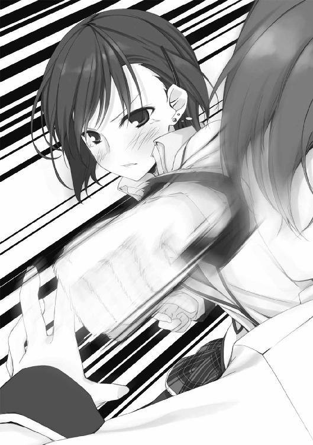
「鹿野さん......考えてみれば、僕は僕であの人に酷いことをしてたような気がする。何度も顔を合わせて、そんなに真剣に考えてもらってたのに、ろくに名前も知らなかったわけだし」
わたしは、努めて冷たく言った。
「そんなものは彼女の勝手でしょう。ストーカーと言うほどではないにせよ、彼女の行動は傍目に暴走です」
「いや、でも......」
綿貫さんは口ごもりながら──ムッとしていた。わたしの物言いが気に入らないとでも言いたげに。
「気になりますか？」
「うん、謝らないと──」
「謝るのは変です。客観して、今回の件、あなたは何も悪くありません」
それに、ああは言ったが、好きな人に告白しただけの鹿野さんにも罪はないだろう。有罪は、そこで話の降下点が見えずに間抜け面をさらしている成田真一郎だけだ。死ねばいいのに。
罪無き綿貫さんは、言葉に詰まった。何かしなくてはいけないと思いつつ、何をしていいか分からない、そんな風に。
なんとなく、この流れではそうなんではないかと思っていたが、やはり忘れているようだ。この人が鹿野さんにするべきは、感謝でも謝罪でもない。
「言葉に迷うようなら──」
わたしは、そう──実に文芸部らしい提案をしてみせた。小さき書物。
「手紙でも書いたらどうですか」
綿貫さんはハッとしたように息を呑んで──それから「そうだね」と微笑んだ。
この様子なら、友達からでいいですか、くらいは書きそうだ。
「子ひつじの会の人たちには、差出人は鹿野先輩じゃなかったとだけ言っておいてよ」
そう言って、綿貫さんは資料室の扉に手をかけた。
......やれやれ、ようやく帰ってくれるようだ。これで成田くんも消えてくれれば、下校までの一時間くらいは一人になれるだろう。益体もない会話に付き合ったお陰で、予定の半分も本を読み進められていない。
邪魔者一号にして元凶の成田くんは、どことなく感謝するような目でわたしを見ていた。
............勘違いしてもらっちゃ困る。別に君を助ける意図で綿貫さんの思考を方向転換させたわけじゃない。顔を見たこともないが、鹿野さんには借りがあるのだ。ムカつく男を殴り飛ばしてもらったという大きな借りが。ちょっとは良い目を見てもらいたいと考えるのは、乙女の真心というものだ。
その意志を込めて睨み付けると──少しは心が伝わるようになってきたようだ、成田くんは「ああ、はい、そうだろうね」とでも言いたげに溜息を吐いてそっぽを向いた。いじけたいのはこっちなのだが。
と──ふと視線を感じる。綿貫さんがまだ帰らずにこちらを見ていた。
......そう言えば、綿貫さんはわたしを何者だと思っているのだろう？ 同じ文化系部員でも、文芸部の一年──しかも幽霊部員──の顔を知っているとは考えがたい。会議室の隣の部屋で成田くんといっしょにいたから生徒会の関係者と思われてる、というのがありそうな線か。
そんなことを考えている内に、綿貫さんは優しい笑みを浮かべて言ったのだ。
「成田くんと、仙波さんか。なんか面白い組み合せだね。
君たちはうまくいくように祈ってるよ」
わたしがブチキレて視界の中で一番目方のありそうなテープ台を綿貫さんに投げつけ、咄嗟に綿貫さんのカバーに入った成田くんの後頭部に命中させたからといって、誰に責める権利があろうや。
いや、ない。
エピローグ１あるいはプロローグ２．佐々原三月
というわけで──
我らが「迷わない子ひつじの会」は、相談第一号への対応をものの見事に失敗しました。
最終的な回答を決したのは成田くんでしたが、他のみんなも有効な結論を見つけることができなかった負い目があるので、誰も彼を責めたりはしませんでした（それ以前に、当時の成田くんはなぜか頰を腫らしたり頭に包帯を巻いていたりの悲惨な状態だったので、むしろ優しくされていました）。相談者の綿貫さんも、物分かりがいいのか、何か事情があるのか、あるいはその両方か、なんの文句も言ってきませんでした。
それどころか、奇妙なことに、相談があってからしばらく経った頃、綿貫さんに年上の彼女が出来たらしいという噂が二年生を中心に広まったというのです（ちなみに生徒会では会長が聞き付けてきて、我が事のように喜んで話していました）。
わたしはてっきり、何か状況が変わって鹿野先輩とうまく行ったのかと思っていました。しかし、ある日の昼休み、廊下で綿貫さんと出くわした時にいっしょにいたのは背の高い、凜とした感じの女性でした。
わたしの視線に気付いた綿貫さんは、顔を赤くして「いや、別にお付き合いしているわけではないんだけどね......あ、成田くんの頭は大丈夫だった？」と何やら言い訳めいたことを言いました。しかし、不安げな目でわたしを──綿貫さんと会話する女を──見ているその女子を見ると、噂になっている「らしい」彼女というのがその人のことだというのは間違いないようでした。
わたしはノートに残っていた例の落書きに「格好いい女の人」を描き加え、綿貫さんとの間に線を引きました。ハートマークはまだ早いでしょうか。
そうして、その事実が変な風に作用しました。話に尾ヒレが付いたのです。
いわく「二年の綿貫は子ひつじの会に恋愛がらみの相談を持ちかけ、三年生の彼女をゲットしたらしい」。
その話に新聞部が喰い付くに至って、校内に「子ひつじの会」侮り難しの評が立ちました。
子ひつじの会としても、噂の内容自体に間違いはない上、綿貫さんの相談内容を詳細に公開するわけにもいかないので、校内新聞の内容も黙認するしかありませんでした。会長などは「なんだか人気が出てしまうかも知れないわねぇ」と、やっぱり気楽に笑っていました。（その様子を眺めていた成田くんが、どういう意味なのか「誰が噂を流したんだかな......」と溜息混じりに呟いていました。どういう意味でしょう？）
噂のせいか、その後も何人か相談者がありました。が、それらは綿貫さんの一件に興味を抱いてひやかしに来たというような、小さかったり簡単だったりする相談事ばかりでした──わたしたちだけでも、なんとか対応できるような。
だから、わたしが初めて仙波さんと話をしたのは、綿貫さん以来の奇妙な相談──宍倉さんの相談に行き詰まったその時でした。
Part-A：「本日の相談」（「迷わない子ひつじの会」議事録より）
○相談者・宍倉徹（２年Ａ組）〔※１〕
変な相談を持ちかけて、なんだか悪いな。でも、本当に困っているんだ。
綿貫の奴が〔※２〕、この会ならきっと、なんとかしてくれると言うものだから......まぁ、頼まれてくれ。
（※１）宍倉さんは背が高く精悍な顔立ちをした──それでいて粗野な感のない、ストイックな印象の二年生です。その堂々たる体軀と見た目通りの身体能力から色々な部活から誘いを受けているそうです。それら全てを「団体行動が苦手だから」という理由で断っていることは、二年生の運動部員の間では有名なのだとか。
（※２）綿貫さんというのは以前にこの相談会を利用した二年の綿貫司さんで、宍倉さんとは中学時代からのお友達なのだそうです。実を言えば綿貫さんの相談には間違った回答をしてしまったので、わたしを含めた子ひつじの会の面々は、なんでまたこの相談会を勧めたのかを怪しみました。
どうも俺は、叔父貴を殺した極悪人らしい。
ん？ いやいや、殺してなんていないぞ、正味な話。
ただ、そういう噂がまことしやかにささやかれてる、という奴でな。
先週あたりから、学校ですれ違う奴らが俺の顔を見て何やらひそひそ話をしているとは思っていたんだ。気になってはいたが、俺は──自分で言うのもなんだが──あまり周囲の声を気にしないタイプなので実害があるまではと放置していた。
が、小学校からの悪友で席の近い須川から、「お前、金持ちの叔父を謀殺して、未亡人に言い寄ってるんだってな。可愛い下級生だけでは飽き足りないのか」とからかい混じりに告げられればさすがに無視もできない。冗談にしては悪質だし、気になる点もあった。
確かに、つい最近亡くなった叔父がいるのだ。
ただし、別に殺されたわけではない。深酒をきっかけにした、急性の心不全だったらしい。医者の見立てでも、特に不審な点はなかったそうだ。元から病弱な人だったとも聞いているしな。もっとも、近くに住んでいたわけでもなし、親しいとも疎遠とも言えない仲のこととて、俺もよくは知らないのだが。
ちなみに、別段金持ちではない。また、叔父には奥方はもちろん三人も子供がいるのだから、いくら金を持っていようと俺や母──ああ、ちなみに母方の叔父だ──が何か恩恵を受けるという事実はない。
俺は須川に、その話をどこで聞いたのか問いただした。正直、事実無根で信憑性の欠片もない謀殺説よりも、俺の叔父が死んだことをなぜ知っているのかという方が気になった。さっきも言ったように、叔父とはそれほど親しい間柄でもなかったから、俺の家から通夜に出たのは両親だけだったし、葬式には出たものの日曜日のことで忌引を取ったわけでもない。学校の連中が知っているはずがないのだ。
俺は、須川が誰か個人の名前を挙げると思ったのだが、予想に反して情報源は人間ではなかった。無論、一次的な、という意味でな。
お前たちも知っているだろう、新聞部とコンピュータ部が共同で運用している学内のネット掲示板──そこに、俺が悪魔的な手腕で叔父を追いつめ、ついには死に至らしめたというような内容が書き込まれていたというのだ。
早速、俺は情報室のパソコンで──俺は使い慣れないので、たまたまそこに居た一年の中瀬華に手伝ってもらい──その掲示板を見てみた。が、そのような記事はどこにも載っていない。さては須川に一杯食わされたかとも思ったが、さすがにそこまで無意味な噓を吐く男でもない。中瀬に相談してみたところ、こういう掲示板では情報源の不明な書き込みや個人への誹謗中傷は管理人の方で削除してしまうものだから、もう消されてしまったのではないかと教えてくれた。
正直、半ば面倒になってきていたが、万が一故人のプライベートに関わる情報を掲示板に垂れ流す輩がいるのなら親戚として放置はできない。俺は中瀬に礼を言って、コンピュータ部に向かおうとしたが、掲示板への意見要望を送るメールアドレスが新聞部のものになっているのでまず新聞部に向かった方が良いだろうと、またも中瀬に教えてもらった。しかも中瀬は、新聞部に中学の先輩がいるので話を通すとまで言ってくれた。そこまでしてもらっては申し訳ないとは思ったが、口下手な俺にはありがたい話であることも事実で、近いうちに必ず返礼させてくれと約束した上で付いてきてもらった。
幸い、新聞部の方では削除した記事──ログというのか？──が残っていた。だが、丁度その時、新聞部は「子ひつじの会」が綿貫の相談を処理した件の記事を大急ぎで仕上げている最中だったので、「そこの端末のローカルに保存してあるから勝手に見て」と実にいい加減な対応が返ってきた。元より、こちらからの頼み事であるし、自分でできることなら自分でやるべきだろう。しかし、俺には掲示板以上に取り扱いの解らないことだったので......忸怩たる思いを抱えながら、またも中瀬に調べてもらった。中瀬は嫌な顔一つせずに、履歴を検索してくれた。どうやら先月の件で俺に恩義を感じているらしいが、本当に良い奴だ。
しかし、その結果を見て、さすがに愕然とした。叔父の件以外にも、俺に関するデマが大量に書き込まれていたのだ。原文については印刷したものを会長に渡したので後で回し読みしてもらいたいんだが、要約するとこんな感じだ──
『宍倉徹は恐ろしい奴。中学の頃、気に入らない教師を数人病院送りにしたが、校長までも奴を恐れてお咎めなしになった』
『宍倉徹は暴走族を三つ潰した』
『女癖が悪い。近づいてはいけない』
『近県の病院で軽薄な後輩を折檻して情けない悲鳴を上げさせていた』
『部活に入らないのは毎日ケンカに明け暮れているため。昨日もコンビニにたむろしていた西高の不良一〇人を白ビルに強制送致した』
『上着を着ている時は注意。まず確実に刃物を携帯している』
『Ｔ．Ｓ．は悪質な宗教団体Ｈ会の幹部候補で、後ろ盾を頼りに暴力事件をもみ消している』
『女性に興味がない』
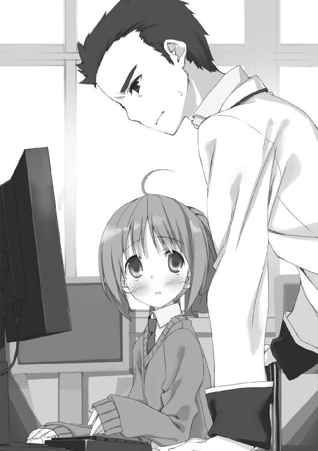
......念のため、念のために言っておくぞ。
全て事実無根だ。俺はケンカをしたことはある──それでも両手の指で数えられる程度の回数だ──が、入院しなきゃならないような怪我をさせたことは一度もない。
ああ......それと、うン......恥ずかしながら女性との交際経験はまるでない。だからと言って、同性に特別な関心があるわけでもない。単に友達付き合いが苦手で、特に女性との接点がないだけだ。
母親の実家は寺〔※１〕だし、時々顔を出して手伝いをすることもあるから宗教関係者とは言えなくもないが、別に胡乱なものではない。何百年も前からこの辺りに根付いている奴だ。隣の県に在る無倉寺という寺なんだが、ひょっとしたら知っている人もいるかもな。幼稚園とか児童養護施設とかも経営してる......まぁ近隣じゃそこそこ大きな寺だな。
（※１）わたしは、思わず深く納得して成田くんと顔を見合わせてしまいました。宍倉さんの静かな物腰や妙に重々しい物言いは、御実家に理由があったようです。（後刻、成田くんに「佐々原と同じだね」と言われました。わたしもあんなに堅苦しく見えるのでしょうか？）
で、そのデタラメな書き込みの中でも一番新しいものが、叔父の死が俺の仕業だとする内容だったわけだ。
ん？ デタラメな書き込みの中に、たまたま事実と同期したようなものが紛れ込んでいただけなんじゃないか、と？
ああ、もちろん俺も、それは考えた。中瀬にも同じようなことを言われたのだが、そうと済ませられない理由があるのだ。
その理由を知らせるためにも、問題の書き込みの中でも一番長いものを、これだけは文面通り正確に読み上げよう。
『宍倉徹がついに人を殺めた。こともあろうに、相手は母方の叔父だ。
宍倉は先月、普段から素行のことで衝突のあった叔父と口論になった。その場はそれで別れたが、心中叔父の俗物ぶりを軽蔑していた宍倉は、叔父をこの世から抹消するべく計画を立てた。
叔父の心臓が弱いことに目を付け、人伝てにラベルを偽った危険な酒を送り、発作を起こすよう仕向けたのだ。未確認だがなんらかの薬物を使った可能性もあるという。
宍倉の叔父は隣県でも知られた資産家で、彼が死んだことにより宍倉徹には莫大な利益が生まれる。
冷酷、残忍。敵対するものには容赦ない鉄の堕天使、それが宍倉徹だ。
この記事に疑いを持つ人は、先月に黄信社という葬儀社の行った葬式の記録を見るといい。そこに宍倉の叔父の名を見出すことができるだろう』
......まぁ、デタラメには違いない。デタラメと言うよりむしろ滅茶苦茶だ。誹謗中傷というのはえてしてそういうものかも知れないが、荒唐無稽で理が通ってないにもほどがある。
だが、気になる点もいくつかある。
まず、叔父の死因だ。なんで心臓であることが判ったんだ？ しかも酒が引き金である点まで当てている。......しかしまぁ、ありがちなことだろうし、これだけならば偶然ということもあるかも知れん。
しかし、葬儀社の名まで当てているのでは、偶然とは言えないだろう。さっきも言ったようにお袋の実家が寺だから、葬儀やなんやの事情にはいささか詳しい。黄信社は隣の県にある小さな葬儀社で、八割方先代からの顧客やそのコネで営業を保たせている、お世辞にも有名とは言えない会社だ。俺にしても、同じ県に母の実家があるから知っているに過ぎない。だが、叔父の葬儀は確かに黄信社の仕切りで行われたのだ。親父がパンフレットを持って帰ってきたのだから間違いない。祖母が、「縁起でもないものをもらってくるなぃ」と理不尽に怒っていたのでよく覚えている。
つまり、この記事を書き込んだ相手は、俺の叔父の死去について詳細を知っているとしか思えないのだ。特に葬儀社の名前まで書いてあるのは気味が悪いし、万が一にも黄信社に迷惑が及んでは一大事だ。
故に、ここに至って俺は本格的に誹謗者の正体を突き止め......いや、正体が判らなくとも、とにかくこれ以上叔父のプライベートな情報が流出しないようにせねばならん。
どうか頼む、力を貸して欲しい〔※１〕。
（※１）そこで宍倉さんは、座ったまま深々と頭を下げました。会長はいつも通りふんわり微笑んで、「もちろんです。でも、今のお話だけでは犯人は特定できそうにないわね」と言いました。
ああ......もちろん、ここまでの話では、犯人が無視できない相手であるということしか分からないだろう。
まず大前提として断定できるのは、件の掲示板には制限がかかっているとかで、学内からしか書き込むことができない──つまり、この悪質な投稿者は学校内の人間だということだ。そして──俺にはよく解らないのだが──中瀬によると、アイピーとかいうものから、情報室のパソコンが使われたのは間違いないらしい。
また、調べた限りでは、噂の出発点をたどっていくとやはりあの掲示板に行き着くようだ。俺だけじゃなく、須川や綿貫──あと、なぜか面白がって協力してくれた演劇部の連中──に手伝ってもらって調べた結果だから、それなりに信用してくれていい。
だから、究極的には人数を出してもらって情報室を中心に監視すれば解決するのかも知れないが、いかに生徒会とてそこまでの権限はないだろうし、俺としても先生方にまで話が行って大事になるのは避けたい。
──実は、疑わしい人物について、心当たりがあるのだ。そいつならば叔父の死についてある程度知っているか、情報を得られる立場にある。それに、どうも俺に対して恨みを抱いているようだ。
俺が直接問い詰めてもいいのだが、中瀬にひどく反対されてな。しらばっくれられたらそれまでだし、ああいう人だから逆上して何かされたら大変だからと。動かぬ証拠か、断定できるだけの推論を見つけてから接触した方がいいと言うのだ。
そこで、今からその怪しい奴についてできるだけ詳しく話すから、そいつを追いつめて白状させるだけの材料を見つけるか、あるいは、もしそいつでないと断定できるなら教えてもらいたい。
その疑わしい奴というのは、一年の久山という男で、俺とは遠縁の親戚に当たる。と言っても、俺が久山を知ったのはつい先月で、出会ったのは病院でのことだった。
その頃、お袋が持病をこじらせて入院していた。実家の近くで一番大きな総合病院だ。家からはかなり遠くて不便は不便なのだが、お袋が子供の頃から診て下さっている先生が居られるので、入院する時は決まってそこの世話になる。ちなみに、危篤の叔父が運び込まれたのもその病院だったらしい。
俺は休みの日のたびに見舞いに行っていたのだが、あれは確か先月の初め、退院の三日前くらいだったか。お袋もだいぶ元気になっていて、退屈な病院暮らしであれこれ考えたことをとりとめもなく話した。「そう言えば、あんたの学校に同い年の鹿野さんって子がいるでしょ。元気にしてる？」などと聞いてきた。本当に偶然に、俺はその名前を知っていた。鹿野は綿貫のクラスメイトで、俺もその関係で二三言だが話したことがあったのだ。むしろ過ぎるくらい元気そうだったと正直に答えると、お袋は何か胸の支えが取れたように喜んだ。あまりにもうれしそうだったので、それ以上は事情を訊けなかった。
そんなことがあった日の帰りだ。院内の廊下で、何やらもめている男女に行き会った。その男の方が久山だったのだ。院内だというのに、何やら派手な柄のうじゃけたシャツを着て、とにかく悪い意味で目立っていた。
後で聞いた話では、病院に勤務している医師の娘が、父親の着替えを持ってやってきた所に久山が因縁を付けてきたということだった。久山は何か事故を起こした友人の見舞いに来たらしいのだが、その友人の示談がうまく行かないとかなんとかで気が立っていた。そこで、たまたま出くわした同級生の女子に八つ当たり気味にちょっかいを出したようだ。
周りには入院患者や見舞客が何人も居たのだが、間の悪いことに看護師などの職員は通りがからなかった。俺としても母が入院している病院で目立つことはしたくなかったのだが、困っている女子を放っておくのはさらに心苦しい。
仕方なく、俺は久山に声をかけた。病院で騒ぐものではないしその子も用事があるようなので通してやれ、というようなことを言うと、久山はお前には関係ないから放っておけと怒り出した。まぁ、ちょっとした押し問答になったわけだが、やがて激した久山がつかみかかってきたので、俺はやむなく奴の腕を後ろ手につかんで壁に押しつけ、ねじ伏せた。正直、そこまでする気はまるでなかったので、どうしたものかと内心困じ果てていると、そこでようやく医師が駆けつけてくれた。それも、久山に突っかかられていた娘の父親だったので、おろおろと見守っていた娘から話を聞いてすぐに仲裁に入ってくれた。
久山は俺を睨み付けたが、やって来たのがからんでいた女子の父親だったことにうろたえて、逃げるように立ち去った。俺も、医師父娘に大げさな礼を言われたが早々に辞して、その日はさっさと帰った。
久山の素性を知ったのは、お袋が退院した後だ。お袋の、いわゆる入院仲間が俺と久山がもめていたのを見ていてな。お袋はお袋で親戚の久山の容姿を見知っていたから、そこで話がつながったわけだ。久山がこの学校に通っているというのも、その時に聞いた。お袋は心配そうにしていたが、大した事ではないと言っておいた。
次に俺が久山に会ったのは、この学校の校内だった。昼休みに、廊下でばったり会った。同じ学校に居るのだからその内行き会うのは当然だが、学年が違うからあまり気にしていなかった。運が悪かったのだろう。
その時久山は、何人かで連れ立って学食に向かっている途中だったようだ。俺を見た久山は驚いた顔をした後、先輩だったのかとか忘れてないぞとか、まぁ言うまでもないようなことを言った。が、言った後に続く何かを持ってるわけではなく、さりとて自分から立ち去るのは逃げるようで悔しかったのだろう。俺たちは廊下で見合いする格好になった。俺はさっさと頭を下げた。ずっと廊下の真ん中で立ち止まっているわけにもいかないし、病院での件も先に有効な攻撃を加えてしまったのは俺だからな。
俺があっさり引き下がったので、久山は拍子抜けしたのと困惑とでしばらく動けずにいたが、どうもそれはそれで奴のプライドを傷つけたらしかった。久山は顔を真っ赤にして「気取ってンじゃねェ」と吐き捨てて行ってしまった。
久山とはそれきり会っていない。だが、お袋の話によると、叔父の納骨式に顔を出していたらしいのだ。先にも言ったように奴は親戚だから、叔父の家と付き合いがあるのはおかしいことではない。叔父がどうして死んだのかだとか、どこの社が葬儀を行ったのかだとかは当然知っているだろう。
整理しよう、久山は──
一、叔父が死んだ件について、詳しい事実を知り得る。
一、情報室のパソコンを利用して学内掲示板に書き込める。
一、俺が悪行を行っているとデマを流す動機──要は恨み──がある。
──と、全て条件に合致するのだ。だが同時に、奴が犯人だという証拠は一切ない。
どうだろう？ 上手く奴を追い詰めることは可能だろうか。それとも、奴は犯人ではないのだろうか。だとしたらどういう人間の仕業なのだろう。
意見を聞かせて欲しい。よろしく頼む。
Part-B：佐々原三月
はァ......ようやく打ち込み終わりました。わたしは小さく息を吐いて、生徒会の所有する唯一のノートパソコン──何世代か前の中古品という話です──から顔を上げました。
成田くんと違ってタイピングが苦手なので、議事録を作る日はなかなか必死です。さて、書きもらしがないか、記憶が確かな内に読み返さないと......
わたしがカチャカチャと推敲作業をしている内にも、子ひつじの会の皆々が宍倉さんの相談について議論を始めています。綿貫さんの件で有名になったせいか、参加者も少しですが増えていて、「狭い方」の第三会議室はだいぶ手狭に感じられます。
「んんン......確かに、その久山っての怪しいけど、証拠がなきゃ、どうしようもないんじゃないか？」
「いきなり思考停止するなよ」
「でも、この場合『犯行現場』がネットの掲示板なわけだろ。幸い、書き込んでる端末が在る場所は判るんだから、張り込むのが手っ取り早いよ」
「誰がやるんだよ、それ......学校側の許可ももらわないといけないだろうし」
「第一、もうある程度噂は広まっちゃったわけだし、久山が二度と書き込みに来なかったらそれまでだろ？」
「それはそうだけど......歯痒いな。状況的には久山で決まりだと思うんだけど」
「そう言えば、話に出てきた中瀬華って漫研のハカセちゃんだよねー。妹の友達だよ」
「ハカセですか？」
「うン、なんかね、小説とかドラマとかにハマると設定とかすごい掘り下げてメチャクチャ詳しくなったりするんだってさ。良い子だけど、ちょっと夢見がちなところがあるかなー。
......そういえば、最近どっかの先輩に夢中だとか聞いたような」
「ゑ？ え？ そういう話なんですか!? なんか急に興味がワキワキなんですけど！」
「おい、そこ、うるさいぞ。中瀬関係ないだろ」
「なぁ、今回の件は犯人を特定するんじゃなくて、これ以上噂をバラまかれるのを阻止するのが目的だろ。だったら、新聞部にキャンペーンでも張ってもらって──」
「だから大げさにしたくないンだって」
......話し合いはまだ続いていますが、段々と右のような内容を繰り返すようになってきています。これは、綿貫さんの相談以来の難題の様相を呈してきました。
わたしも議事録を読み返しながら考えてみましたが──やはり久山くんを犯人だと断じられるだけの証拠は見つけられそうにありません。かと言って、他に犯人がいるとも思えませんし......
そうこうしている内に、会議は休憩時間に入りました。綿貫さんの時と同じく、しばらく休んだ方が良い案も出るだろうという会長の配慮でした。
わたしは、いつものクセでノートに関係者のカリカチュアなど描きながら、隣の席の成田くんをうかがい見ました。わたしと同じく一年書記の彼は、ノートパソコンの画面をスクロールさせて議事録のチェックをしながらも、どこかそわそわとしているように見えました。何か、部屋の隅の扉を気にしているような。
「どうなんでしょう？」
「うん、いいと思うよ。前みたいな誤字脱字もないし、書きもらしてる点もないと思う」
わたしは宍倉さんの相談の件について訊いたのですが、成田くんは議事録の出来について返してきました。まぁ、勘違いも無理はありません。
わたしは生徒会に入るまでタイピングがほとんどできず、最初の内は成田くんに手ほどきや手直しを頼んでいたのです。それというのも、わたしが生徒会の書記になった理由が「家が書道教室をやっていて、何度かコンクールで賞を取っているから」と友達に推薦されたからというもので、議事録が電子化した現状には甚だそぐわなかったからです。
それでも行事の時なんかに生徒会で用意する看板やボードに筆書することはあって、その時にはわたしが担当することになっています（ちなみに、今も部屋のすぐ外に立てかけてある看板の「御悩相談千客万来 不迷羊会」の書も拙作です）。成田くんは「じゃあ、普段の議事録は僕がやるよ」と言ってくれたのですが、さすがに他の全てを成田くんに任せるわけにもいかず、内容が比較的短めになる相談会の議事録を交代で担当することになったのです。
ちなみに、成田くんが生徒会に入ったのは自薦でも他薦でもなく、書記の人数がそろわなかったので会長が半ば強引に組み入れたという話です。なんでも会長と成田くんは家が近所で子供の頃からの知り合いだとかで、いつだったか成田くんが「なんで僕なんですか」と訊いて会長が「だってたまくん、向いているでしょう、こういうの」と答えていたのを見たことがあります──成田くんは物凄く嫌そうな顔をしていました──。成田くんのフルネームは成田真一郎。クラスの人などに「なるたま」と呼ばれているという話は聞いたことがありましたが、さらに親しい人は「たま」呼ばわりのようです。
わたしはとりとめもなく思い出しながらも、訊き直しました。
「いえ、そうではなくて......掲示板の件、やったのは久山くんだと思いますか？」
「ああ、そっちか......」
たま......もとい、成田くんは、真剣な表情で腕を組みました。急に幼さが抜けて見えて──わたしはなんとなく目をそらしました。
......成田くんに限らず、会のみんながそんな顔をしているのを見ると、小さく胸が痛みます。わたしは、普段からあまり表情を作らないようにして、周囲からはどんな時でも深刻にも気楽にも──見る人が見たいように──見えるよう注意しています。それが子供の頃からのクセなのです。
だから、今もみんなには、わたしが真剣に問題に取り組んでいるように見えているのだと思います。でも、その実わたしは今──
とても楽しいのです。
「うぅん......どうだろうね？」
成田くんの「どうだろうね」は完全に口ぐせで、確信のないことをしゃべる前には決まって前置きにします。
「さっき、掲示板のログの原文も読んだんだけど、久山だとすると、なんかおかしいんだよなぁ......」
「おかしい？」
「ほら、ここ」
成田くんはプリントアウトされた掲示板の記事をよこしながら、気になった箇所を指で示しました。軽く肩が触れたのでわたしは身を固くしたのですが、成田くんは気付いた風もありません。
『ある病院で、チャラチャラした風体の後輩と口論となり、力を以て締め上げた。その後輩は情けない悲鳴を上げて赦しを請い、容赦なく外された関節を抱えて無様に逃げ去った。』
......なるほど。この件は明らかに、宍倉さんと久山くんが病院で起こしたもめ事を誇張したもののようです。だから久山くんが知っているのは当然としても、自分のことをこんな風に貶める書き方はしないでしょう。
「確かに、自分の名前を出していないとはいえ、これは書きづらいですね」
「うん。それに、久山が病院で声をかけた女子もこの学校の生徒らしいから、もし噂が広まったらあっさり特定されちゃうよ」
そう言えば、久山くんはたまたま会った同級生にからんだという話でした。議事録を読み直したばかりだけあって、成田くんの記憶は正確です。
「でも、いくらなんでも宍倉さんの親戚がそんなにいるわけないし、他の人って可能性も思い付かないんだよな」
「ずばり、葬儀社のお子さんがこの学校に通っているとか？」
「いや、だって、そうなると......ん？」
わたしの我ながらデタラメな言葉に、成田くんは一応真面目に何か言いかけて──言葉を切りました。自分で自分の考えに引っかかったようですが、
「それはないか」
やはり自分で打ち消したようです。それは別にして、わたしの考えを否定しました。
「宍倉さんと久山が病院でやり合った件を知ってるのがおかしいよ。あの記事は、他のと違って具体的過ぎるし」
「なるほど......となると、やはり条件に合うのは久山くんだけになりますね。多少大げさになっても情報室を見張るしかないんでしょうか？」
「..................」
話が行き詰まりつつあるのを感じながら、わたしが不毛な提案をすると、成田くんは再び腕組みして──何やら落ち着かない顔になりました。また、さっきみたいに隣室に通じる扉にちらちらと視線を投げています。
......？ 隣は確か、文化系の部活が使う資料室だったと思いますが、何かあるのでしょうか。そう言えば、ちょっと前から、第三会議室を使う時に隣を気にしている素振りがありましたが......
成田くんは、そんな様子でしばらく逡巡していましたが、やがて意を決したように顔を上げ、わたしを見ました。初めて見るかも知れない、思い詰めたような表情です。
そうして、
「隣の部屋に付き合ってくれないか？」
........................
......えぇと......
どういう意味なんでしょう？ 隣の部屋ってなんですか？ 普通に聞くと資料室ですが、二人でそこに行く理由が思い当たりません。わたしの知らないスラングか何かなんでしょうか。
成田くんは──自分でも唐突過ぎたと気付いたのか、それともわたしがよほど変な反応をしてしまったのか──あわてて説明を添えました。
いわく──隣の部屋にとても頭の良い人が居て、今回の件も解決できるかも知れないが、自分はなぜかもともと嫌われている上に、以前機嫌を損ねることをしてしまって絶望的にうとまれているので一人では会いづらい──なので、わたしに付いてきてほしいとのことでした。
そういうことならば別段断る理由もないので、わたしはうなずきました。成田くんはあからさまにホッとして、「恩に着るよ」と掌を立てました。
......そんなに気難しい人なのでしょうか？ ちょっと不安です。
一応会長に目配せをしてから、成田くんは資料室の扉を開けました。わたしも後に続きます。
そうして──
「チッ」
資料室に入ったわたしたちを迎えたのは、恐ろしくキレの良い舌打ちでした。
わたしも驚きましたが、成田くんは早くも顔を引きつらせて、舌打ちの主に震える視線を注ぎました。
──ろくに櫛も入れていないようなボサボサの頭をした、眼鏡の女子でした。机の上に載せたクリームイエローのクッションにのしかかるような姿勢で、『非Ａの世界』というタイトルの文庫本を読んでいました。その表情は苦虫をガムのようにネチネチ嚙み潰しているような酷いしかめ面で、初対面でもそれと判る強烈な不機嫌イオンを電波が攪乱されそうな勢いで噴出していました。
名前は知りませんが、見覚えはあるような......
あの姿勢だとネクタイの色が確認できませんが、成田くんが、
「仙波」
と呼び捨てにしたことからして、一年生なのでしょう。
呼びかけられた女子──仙波さんは、嫌そうな顔をしたまま成田くんを無視しましたが、ちらとわたしに視線をくれました。
......なるほど、成田くんは確かに嫌われているようです。それも、尋常でない嫌われようです。ここまで大上段かつ直球な敵意は、生まれて初めて見るかも知れません。
仕方ないので、わたしが口を開きます。
「あの......わたし、生徒会書記の佐々原三月です」
「仙波。仙波明希よ」
仙波さんは、あっさりと応えてくれました。こちらを見る目は乾いていましたが、声は冷たくありません。初対面のわたしに好意的な態度をする理由がないので、単に成田くんへの嫌がらせなのかも知れません。
「......で、生徒会の人が、わたしに何の用？」
わたしに訊かれても困ります。成田くんによれば、この人は今回の相談をも解決できそうな、明晰な頭脳の持ち主らしいのですが......相談内容を言えばいいのでしょうか？ だったら議事録を打ち込んだパソコンを持ってくるべきでした。
しかし、予想に反して成田くんがさらりと言いました。
「知恵を貸してほしい。
聞こえてたろ？ 宍倉さんの声は良く通るし」
？ 一瞬意味が解りませんでした。が、すぐに気付きました。この部屋、隣の会議室の声が丸聞こえになってます。今も、宮野先輩がお家から持ってきた紅茶が美味しいと会長が舌鼓を打っているのが聞こえてきています。たとえ狙って設計したとしても、こんなにクリアな聴こえ方はしないだろうというくらいの、奇跡的な有様でした。
ゑ......？ 会議室の声が筒抜けって不味くないですか？
わたしは不安になりましたが、二人が全く気にしていないようなので、なんとなく口にできません。この状況のこととか、なんで仙波さんはこんな場所で本を読んでいるのかとかは、後で成田くんに訊いてみましょう。
それよりも、今は仙波さんです。成田くんの言葉を受けて、こめかみの辺りに肉眼で確認できるほどの血管を浮かび上がらせ──たように見えました。
「はァ？ 今、何か聞こえたようだけど？ まぁ、全く意味が解らなかったから幻聴か、どこかの部活動で春先の茹だった人をアバンギャルドに表現している声が聞こえてきたかのどちらかね」
成田くんも同じような顔色になりました。大仰な仕草で頭の後ろに手をやり、
「ああ、頭が痛い......まるで底面ラバーのはげ落ちた年代物のテープ台を容赦ない勢いでぶつけられたくらい痛いなぁ......軽く傷害罪が立件できるレベルで！」
「っ............それは、後頭部だけじゃ寂しいから正面からも下さいという意思表示？」
だんッ！ という強い音にびくりとなって見れば、仙波さんがもう何年も使われていないような青いテープ台を作業机に叩き付けた音でした。成田くんは顔を蒼くして──それはもう、まるで最近のトラウマを刺激されたように──突っ伏しかけましたが、力ずくでンぐッと体勢を保ち、仙波さんと睨み合う形になりました。
......いや、後頭部とかテープ台とか、わたしには全く意味不明だったのですが。
ともかく、一触即発と言うか、次の一手を間違えると誰かが死ぬと言うか......恐らくは無駄極まりない緊張感が漂っていて......
わたしは、恐る恐る仲裁に入りました。
「あの......なんだか知りませんが、二人とも落ち着いて下さい。成田くんも、時間がないんですから。話すなら早くしないと」
弱気に出ると二人とも聞いてくれそうになかったので、目いっぱい強い声で言うと、成田くんは「ごめん」と小さく呟いて体を引きました。仙波さんは何も言いませんでしたが、パタンと小気味良い音を立てて本を閉じ、パイプ椅子に背を預けて聞く態勢になってくれました。
ようやくまともに向き合った仙波さんは、第一印象と同じく身だしなみに無関心な感じで、制服のしわも放置しているようでした。けれど、化粧っ気も全くないせいか蛍光灯めいた清潔感もあって、全体として不快な印象は感じません。
その声もまた気だるげで、同時に涼やかでした。
「......前と同じパターンなわけね。話をしなけりゃ帰ってくれない、と。
で、何を聞きたいの？」
成田くんにしゃべらせると上手くいかないようなので、代わりにわたしが口を開きます。
「あの......聞こえていたのなら内容は省きますけど、さっきの宍倉さんの相談の件、久山くんが犯人だと証明する方法って分かりますか？」
「無理ね」
即答でした。
でも、今度は敵意や拒絶ではなく、ただあっさりと事実を告げる否定です。
さっきも久山くんではなさそうだと言っていた成田くんは、意外な風もなく質問を変えました。
「断定するってことは、久山じゃないのか？」
「そう思えるけど」
「だったら誰だと思う？ ......と言うか、誰だか特定できるのか？」
「............わたしにできるのは、可能性の提示だけよ。
それだって、お優しい成田くんのお気に召さなければ無断でボツにされて華麗なソロモン裁きに置き換えられちゃうわけだけど」
再び、二人の間に険悪な雰囲気が漂います。......一体、何があったんでしょうか？
しかし、今度は成田くんがあっさり折れました。
「......悪かったよ。それ、謝ってなかったっけ？」
「記憶にないわね」
「......何度でも謝るから。頼むよ、仙波。今回の件は一歩間違えれば犯罪になるし。な」
「......多分、そんな大げさな話じゃないと思うけどね」
素直に謝られたせいか、仙波さんはようやく怒りを収めてくれましたが、今度は物憂げに吐息しました。やる気がないと言うより馬鹿馬鹿しそうな様子が気になって、わたしはおずおずと尋ねました。
「と言うと？」
「待って......その前に、一点確定させておきたいことがある。どっちでもいいから、宍倉さんに聞いてきて」
その後に仙波さんが続けた「確認事項」に、わたしと成田くんは思わず顔を見合わせました。そう言えば、相談の最初の方で先月のことで恩義がどうとか言ってたような......
わたしが思い出している間にも、成田くんが会議室に戻っていきました。単純な質問なので、すぐに帰ってくるでしょう。
当然──取り残されたわたしは、仙波さんと二人きりになってしまいました。......正直、微妙に気不味いです。仙波さんは平気な様子でクッション──よく見ると顔らしきものが付いているのでぬいぐるみなのでしょうか？──を弄んでいますが。
わたしは黙っているのが苦痛にならない方なので、間が保たないということもないのですが、この人はなんだか苦手なタイプに思えて──黙っていると、取り繕った自分の底を見透かされそうで──
思い切って、さっきから気になっていたことを訊いてみました。
「あの......仙波さんは、なんで成田くんのことがそんなに嫌いなんですか？」
仙波さんは眠たそうな──それでいてドキリとするような──目を向けてきました。
「あなたは好きなの？」
多分、黙ってしまったのは一瞬だったと思います。
「普通に」
「そう。なんで？」
仙波さんは、なんと言いますか、速い。わたしはどうしても一テンポ遅れてしまうのを感じながら、こちらも手短に答えました。
「......良い人ですよ？」
「じゃあ、わたしは良い人が嫌いなのよ」
そう言って彼女は、またぬいぐるみに目を戻してしまいました。つまらなそうな目でした。
わたしは「良い受け答えだな」と思いました。わたしが日常的に使っている手に似ているように思いました。どうとでも取れる──その意味を相手に放り出す──言葉。質問に答えるようでいて、その実、自分の意志は何も示さない。
だから、本当はそれについてはもう終わらせるべきだったのでしょう。わたしが仙波さんなら、ああいう言い方をした時は会話を続ける気がないという意思表示だから。でも。
「それって、はぐらかしてませんか？」
わたしはなぜか、追及していました。そして理解は、やはり一歩遅れてやってきました。
再び顔を上げた仙波さんが、かすかにですが笑みを浮かべていたからです。わたしの思い上がりでなければ、好意に属するそれを。
──この人は自分とは違う。と思いました。多分、門構えは似ているけれど中身は全然違う、といったように。その違和感を解き明かしたいという欲求が芽生えるのを感じて──わたしは、そんな自分自身に驚きました。
「真面目なんだね、佐々原さんは」
「そういうわけでは......」
「真面目な人は普通に好き」
「......成田くんは真面目ではないですか？」
仙波さんはんーっと首を傾げてから、
「台所に出てくる黒いのだって、類を見ないほど真摯に生きているし争って脅威になる相手じゃないけど、気配を感じるだけで嫌な気分になるでしょ。あれはその類だから」
......これもよく解らなくはありましたが、さっきとは違って正直な答えであることは仙波さんの無邪気な表情から知れました。......笑うと可愛い人だと思いました。後、成田くんは泣いてもいいと思いました。
納得してしまうと、今度は急に恥ずかしくなってきました。初対面でする話ではなかった気がします。
「あ、あの、変なことを訊いてしまってすみません......」
仙波さんはそれには応えずに、全然別のことを訊いてきました。
「さっきから気になってたんだけど、そのしゃべり方ってクセ？」
「クセです」
「クセかー」
オウム返しに呟いたきり、仙波さんは口を閉じました。黙った、と言うより、単に言うべきことがなくなったという風でした。相手に聞かれれば饒舌に答えるだけの抽出を持ちながら、自分からは決して、その取っ手を引かない。そういう人なのかも知れません。
わたしも続ける言葉がなかったので黙りましたが、今度の静寂は、決して居心地の悪いものではありませんでした。仙波さんの笑顔を見られたせいでしょうか。
そして、その沈黙を見計らったようなタイミングで成田くんが戻ってきました。何を考えているのか、軽く首を傾げながら。
「お前の言う通りだったよ、仙波」
「そう......だったら大きく可能性が上がったわね」
仙波さんは、ぬいぐるみを膝の上に抱え直して、浅く溜息を吐きました。
「宍倉さんのでたらめな噂を流したのは、中瀬華だと思う」
............？ どういうことでしょうか？
仙波さんが確認してきてほしいと言ったのは、「病院で久山から助けたという女生徒は、中瀬華だったのではないか」ということでした。だからわたしは、そうだとしたらどうなのだろう？ と疑問に思っていたのですが......
成田くんは、存外に驚いていませんでした。
「......確かに、犯人が久山じゃないのなら、他に病院での一件を確実に知っている生徒は助けられた本人──つまり中瀬しかいない。その女子が中瀬だとは思わなかったけど、それは僕も考えた」
あ、成田くんがさっき何か言いかけて自己完結してしまったのは、そのことでしたか。なるほど、消去法で行けば、少なくとも宍倉さんの知りうる範囲では中瀬さん以外に条件に合う人はいないでしょう。しかし──
「でも、そうだとすると中瀬はなんで、宍倉さんの叔父さんが死んだ時の状況を知っていたんだ？ あ、ついでに聞いてきたんだけど、宍倉さんが中瀬に叔父さんのことを話したのは、掲示板に叔父殺し云々の記事が出た後だぞ」
「らしくもなく気を利かせたのね......でも、中瀬さんのお父さんは医者なんでしょ。それも、宍倉さんの叔父さんが運び込まれた総合病院に勤務している。
──これは想像だけど、中瀬医師は自分の娘が世話になった宍倉さんのお母さんが入院していたのを知っていて、その親戚が自分の病院で亡くなったことを娘に話してしまったんじゃないかしらね」
仮説だったのですが、仙波さんは迷いなくスラスラと言葉を紡ぎます。無責任な立場ならではの放言とも言えますが、事実彼女には責任が無いのだから当然でもあります。
しかし、否定するには条件が整い過ぎているのも事実でした。お医者さんの倫理的にどうかと思う点もないわけではないですが、家族サービスの暇もないお父さんなら、娘との会話の機会を作るのに日夜必死なのかも知れません。
ともかく、叔父さんのことを知り得た件については納得したとして、それ以前に根本的な疑問があります。
「でも......なんで助けられた女子が中瀬さんだって判ったんですか？」
「動機のありそうな女子が中瀬さん以外にいないから」
仙波さんは実にあっさりと答えてくれました。しかし不思議です。
「動機、ですか？ でも、中瀬さんは宍倉さんに恩を感じることはあっても、悪意を抱く理由はないように思うんですが......」
「確かに。中瀬華が実はひねくれた腹黒女で、通りすがりの正義の味方を気取った宍倉さんに助けられたことを屈辱に思って復讐を企てている、とかでなければ理由はないわね。
悪意の理由は」
「............不良漫画みたいな武勇伝とか女性に興味がないとか、果ては叔父を殺した恐ろしい男だとか、悪意以外のなんなのさ？」
「宍倉さんは諸葛亮にされたのよ」
..................？
わたしも成田くんも、あまりにも唐突な言葉にきょとんとして、しばらくはまばたきしかできませんでした。
「諸葛亮、知らない？ 諸葛孔明」
「ええと......三国志の？」
それ以外にはないでしょうが、あまりに要領を得ないせいか自信なげに成田くんが応えました。
仙波さんはぬいぐるみにおとがいを埋めるようにうなずきます。
「そ、中国の史書『三国志』で伝が立てられている人物。三国の内では一番小さな蜀の建国と運営に多大な貢献をした、清廉潔白な大政治家ね」
「それが宍倉さんとなんの関係があるんですか？」
「その『三国志』を元にして後代に書かれた、『三国志演義』という小説がある。普通、日本で『三国志』と言えばこの『三国志演義』を指すことが多いわね。それくらい有名な小説よ」
「僕は吉川英治の『三国志』しか読んだことないけど......」
「あ、それは『三国志演義』の内容に沿っているそうですよ」
話に付いて行けない気配を感じたのか力弱く言う成田くんに、わたしは歴史好きの伯父さんに聞かされた知識を教えました。
仙波さんは満足げに、
「だいぶアレンジされてるけどね、冒頭とか曹操とか。でも、とりあえず今の話には関係ない。
『三国志演義』は史書として編まれた『三国志』を物語に仕立て直した小説なんだけれども、アレンジのスタンスとしては、蜀を建国した劉備たち義兄弟や諸葛亮を主役、ヒーローに擬しているのが特徴ね」
「歴史書の『三国志』では、魏を正統としているから印象が大きく変わるんですよね」
「そう。史書の方は魏から帝位の禅譲を受けた晋朝の時代に書かれたからね。
どうして『主人公』が交代したのかは長くなるし今は関係ないから説明しないけど、ともかく『三国志演義』では蜀の主要人物──特にさっきから言ってる諸葛亮の活躍するシーンが、大幅に追加、強調されているのよ」
「......やっぱり宍倉さんの件とは関係ないような......」
ぽつりと呟く成田くん。
仙波さんは微笑みました。プラモデルのように微笑みました。
「人が話している時は死んでいなさいとお母さんに習わなかった？」
「ごめんなさい、静かにしてます」
「あらそう？ 死んでも構わないのよ？ 死んで」
「途中から要望になってるぞ」
「死んで下さらないでしょうか」
「誠意が込められたよ？」
成田くんのうめくような抗議は、きっぱりと無視されました。
「話を続けるわよ──
繰り返すけど、『三国志演義』での諸葛亮は史書『三国志』よりも活躍が著しい。あるいは別のベクトルに活躍している。祭壇に祈って大風を吹かせたり、怪しげな石の陣で八幡の藪知らずみたいのを作ったり、饅頭を捧げて河の流れを鎮めたりね。
ところが、その『活躍』の中には、読んでいて目を疑うようなものも多々あるの。大きな所では──
『正式な約定で借りた土地を、「前の戦で風を呼んだから」とか「こっちは高貴な家柄の末裔なんだからチンピラ豪族ごときがガタガタ抜かすな」みたいなワケの分からない戯言を根拠に返さない』
『義憤に駆られて投降してきた将軍を、「叛骨の相あり」という理由で面罵した挙げ句、殺してしまおうとする』
──とかね。もちろん、歴史書の方の『三国志』には、そんな理不尽な言動は記されていない」
「そこだけ聞くと名軍師と言うよりインテリヤクザですね」
「そこだけ聞くと、ね......」
成田くんは、なぜかじとりと汗を浮かべて用心深いような声を出しました。
......あれ？ でもおかしくないですか？ 諸葛亮さんはヒーローとして描かれているのに、なんでそんな悪質な描写がされているんでしょう？
「もちろん、『演義』の作者羅貫中は諸葛亮を邪悪な人でなしに描きたかったわけではない。その逆──弁舌に秀でているとか、卓越した人物眼を備えているとかを強調したくてエピソードを造ったら、不自然極まりないものになったというだけのこと。それでも大衆は疑問にも思わず諸葛孔明の活躍に喝采するわけだから、どれだけ盲信されてるのって話よね」
......なるほど、ようやく話がつながってきました。
有徳の大政治家が後の世に好意から詐欺師じみた無茶苦茶な活躍を付されてしまったのなら、ただの高校生が好意からいわく付きの高校生にされてしまうこともあるのかも知れません。
「つまり、今回、宍倉さんについて流された噂は──」
仙波さんは、今日一番の深いうなずきを返してくれました。
「演出、プロデュース。
そう考えれば、中瀬華が仕掛けた理由にはなる。
諸葛亮がただの清廉な大政治家では後世の大衆に満足されず、知謀至天の天才軍略家......と言うか仙人のような超能力者にされてしまったように、宍倉さんは暴力の世界に生きる闇の貴公子にされかけてるってわけよ」
そこで、仙波さんの推論はひとまず終わったようです。
わたしと成田くんも黙ります。
今聞いた話を咀嚼して、吟味して──成田くんが口を開きました。
「いや......でも、女癖が悪いとか女に興味がないとかって書き込みは？ アウトローなイメージを作るにしても、これは好きな人には使いたくないんじゃないかな」
「そこは、ただ単に他の女性が近付いてこないようにしたかったんじゃないですか？ 矛盾した書き込みだから、どちらかの印象が付くことはないけれど、それでも読んだ女子としてはなんとなく敬遠してしまうでしょう」
それにはわたしが考えを述べます。仙波さんも肩をすくめて「そんなとこじゃない」と同意したせいか、成田くんは次の疑問を口にしました。
「そもそも、中瀬は宍倉さんに何を求めてるんだろう？」
「さてね。そこまでは判らない。ただ、その子は──漫研だっけ？──創作好きで夢見がちな性格なんでしょ。だったら、それこそ漫画みたいな出会い方をした宍倉さんを理想の男性に仕立て上げたかったのかも知れないわね」
..................
ふと、思いついたことがありました。仙波さんのように、ばらばらの根拠をつなぎ合わせた推論ではなく、感覚的な話です。
気付いた時には、わたしは口を開いていました。
「......動機だったら、もう一つ考えられますね」
「ん？」
仙波さんが、興味深そうにこちらを見ました。何に対しても無関心なようで、その実、何が起こっても対応できるよう常に動的なその目。
成田くんは少し驚いたような顔をしています。多分、わたしの口数が常になく多いことが意外なのだと思います。わたしだって意外です。いつもだったら、最低限の意見を述べた後は、黙ってみんなの話を聞いているのが佐々原三月なのですから。
でも、今日は違っていました。仙波さんと話していると、頭の中から言葉が湧いてきます。もっと考えたい、もっとひっくり返したいと、そう思ってしまいます。
「噂が広まれば、宍倉さんは噂を流した犯人を探そうとする──でも宍倉さんは機械に弱いから、ネット掲示板の線をたどろうとすれば誰か協力者が必要になります」
「中瀬華がストーカーまがいのことをしていたら、情報室で宍倉さんを待ち伏せするのは可能でしょうね。そして、善意を装って協力を申し出ることも。
......ああ、動機って、いっしょに行動する時間が増えるってこと？」
「単純に言えばそうですが......なんと言うか、その──」
わたしは少し迷って──何を言うべきかではなく、今更になって「何を言ってるんだろう」と思ったのです──視線をさまよわせました。
仙波さんが、成田くんが、きょとんとした顔でわたしを見ています。気後れ。でも。
頭に浮かんだそれを口にしたくて、伝えたくて、続けました。
「好きな人とああでもないこうでもないと謎解きに挑むのはきっと、とても楽しいことだと思います」
Part-C：仙波明希
休憩時間が終わる少し前に、二人は帰って行った。
............またやってしまった。
成田くんのことなど、きっぱり無視してしまえばいいのだ。無視が無理なら対応できないとでも言ってやればいい。いつかは諦めるだろう。それは解っている。解っているのに、問われればつい答えてしまう。解答欲に負けてしまう。
......いけない。やはり成田真一郎に関わるのは危険だ。このまま奴のやることに付き合っていたら、いつか大怪我をすることになる。
......佐々原さんはちょっと面白い人だ。初対面だし見切れたとは言い難いけれど、ある軸でわたしとは正反対の人に見えた。──そう、本当は他人のことになんて興味がない。しかし、だからこそ、それがいけないことのように思えて、必死に他人と関わろうとしている。その方法を模索している。
わたしは逆に、早く他人と隔絶したい。良い方にも悪い方にも、人になんの影響も与えず、なんの干渉も受けずに生きていきたい。完全にそうなることはできないにしても、そこに至る道の途上で死にたいと、思う。
それなのに、今はまだ、他人からの接触を断絶しきれずにいる。特に好意や依頼をかわすことができないでいる。正銘のfreedomになる覚悟が出来ていない、ということだろうか。
だから成田真一郎は、わたしにとっての天敵だ。
あれは自分を特別だと思っている。逸脱を好み、平気で他人を侵犯する。そのことで痛い目を見たことも一度や二度ではないだろうに、それでも──
この部屋を出て行く直前の彼の様子を思い出す。
彼は佐々原さんの見解を聞いて、何やら考え込んでいた。この件が本当に中瀬さんの仕業だったとして、それをどう収束させるのかを思っていたのだろう。
わたしは一応、それについても意見を述べておいた。
「ま、宍倉さんには適当に言っておいて、中瀬さんに『お前のやったことは全て判っている』とでも言ってやればいいんじゃない。それが否定されても肯定されても、二度と同じようなことはしないでしょうし」
それでもしつこく続くようなら、わたしの仮説が全くの的外れだったか、中瀬華が想像以上にしたたかかのどちらかだ。
佐々原さんは、異論があると言うより単純に不思議そうに「宍倉さんには話さない方が良いということですか？」と訊いてきた。わたしは、そもそもそれが真相かどうか判らないし、中瀬華が犯人だと知れれば宍倉さんの性格的に傷つくのではないか、と答えておいた。
幸い、成田くんは噓を吐くのがお得意であらせられる。思わず閻魔印のやっとこが欲しくなるくらいに。
その成田くんは、うんと曖昧にうなずいただけで何も言わなかった。
......さて、何を考えているのやら。
どうでもいいが。
などと思い出している内にも、隣室の活動は再開していた。子ひつじの会の他の人も色々と意見を出している。「とりあえず久山に鎌をかけてみて、それで収まったら解決」という意見が多いようだ。まぁ無難な線だろう。疑われる久山くん以外は誰も損をしない。この場合、久山くんは自業自得だろうし。
最後に発言したのが成田くんだった。この場は黙っといてもよさそうなものだが。
わたしはぱやきのさんに寄っかかって、読みかけの本を繰りながら、成田真一郎の緊張した声を聞いた。
「絶対とは言えませんけど......今回の件、企てたのは中瀬かも知れません」
壁の向こうで宍倉さんが絶句したのが見えた、気がした。
............成田は単なるへそ曲がりなんじゃないだろうか？
＊
あの相談会があってから三日後──土曜日の放課後だった。
いつもの部室棟資料室。
わたしは、朝の内に買っておいた購買の俵寿司弁当──全体的に安価な購買メニューの中では割高だが、本を読みながらでも食べ易いのでよく買う──をパクつきながら、文芸部の部室から借ッてきてキープしておいた戦前の作家の全集を読んでいた。
この学校は、隔週で土曜日も午前のみ授業がある。去年までは完全週休二日制だったのだが、学力とモラルの低下を憂えた一部の父母の意見を汲まされて授業日数を増やしたとのことだった。この分だと、来年には毎週土曜日授業になるかも知れない。
......まったく面倒な。保護者の方々は、その果てしない慈愛を発揮なされる前に、『スレドニ・ヴァシュタール』でも一読して、深呼吸してから行っていただきたい。ま、わたしの場合は家に居ても学校に居てもすることは大して変わらないし、平日もぎりぎりまで家に帰らずにここで過ごしているのだから、あまり関係ないと言えば関係ないのだが。
時刻は一時半過ぎ。ホームルームの終了が大体一二時半だから、部活動をしていない生徒はさすがにもう残っていないだろう。この部室棟も、音楽系や演劇部が別の場所で活動しているせいでひっそりと静まり返っている。ただし全くの無音というわけではなく、遠くの方から運動部のかけ声や吹奏楽部の流したような演奏が聞こえてきている──適度な環境音。
──うム、理想の生活環境だ。この部屋は女子トイレに近いのも良い（重要）。
やはり、多少うるさい成田がやって来るくらいで放棄するにはもったいない場所だ。
そんなことを思っている内に、弁当がなくなった。容器を潰してビニール袋に入れ、きっちり口を結ぶ。部屋の隅の、古いゴミ箱──水色のプラスチック製なのだが、上半分が変な具合に黒ずんでいた──に目をやって、少し迷う。中身は残っていないが、においの残っている容器をあそこに捨てるのはためらわれた。もちろん、後で校務員さんがこまめに回収している大きなゴミ箱に移すつもりではあるが、ゴミというものは一度視界の外に置いてしまうと記憶の外にも行ってしまう。明日は休日だし、忘れて帰ってしまうと部屋の中が悲惨なことになるかも知れない。
......捨てに行っておこう。佐々原さんにも言ったが、わたしは殺害に生理的嫌悪を覚えるサイズを持った黒くて平べったくて素早い昆虫が嫌いなのだ。例えるならば、成田真一郎のように大嫌いなのだ。
わたしは、寄っかかっていたぱやきのさんを作業机の上に座らせて、席を立った。
その声が聞こえてきたのは、一階の突き当たり、扉のない小部屋のようになった所に在る大きなダストボックスにゴミを放り込んだ直後だった。
ダストボックスの反対側の窓が開いていて、校舎裏の林で行われている会話が聞こえてきているようだ。場所柄、多分密談であろうことを考えると不用心な話だが、基本的にこの時間の部室棟はそもそも人気がない──文化部は去年までの慣例で土曜日は活動していないところが多い──事実を考えれば、解らないでもない。
盗み聞きの趣味はないが、なんとなく気になって、窓際で耳を傾けた。雑木に阻まれて声の主の姿は見えないが、逆にこちらも見えていないはずだ。
「ど、どうして判ったんですか!?」
一方は女声。......わたしが狭量なせいか、はっきり言って癇に障る、キンキンと甲高い女子の声だ。なんだか音程が酷く不安定に感じた。動揺もさることながら、普段はあまり大声を出さないのかも知れない。
「件の相談会に諮った結果、その可能性を指摘されたんだが......やはり、お前だったか」
もう一方は、聞き覚えのあるものだった。三日前、壁越しに聞いた、低く落ち着いた男子の声。
「......あ、あの、先輩。わ、わわたしは──」
「まぁ聞け、中瀬」
パニックを起こして泣きそうな声を出す女子に、男子はやはり平静に言う。
「お前がやったかも知れないと言った奴は、こうも言っていた」
そう──あの日、成田真一郎は中瀬さんを告発した後に言ったのだ。
「中瀬はいつも不安なんではないか、と」
「..................」
女子の方が、沈黙した。男子の方は少し待ったが、応えがないのを確認したかっただけなのだろう、絶妙の間を取ってから後を続けた。自分では口下手だと言っていたが、母親の実家が寺だけに何か話法の素養があるかも知れない。
「そいつは、決して近場とは言えない病院に、お前が一人で父親の着替えを持って行ったのに引っかかったと言っていた。
高校生なのだから、一人で県外に出ることは変ではない。しかし、着替えを届けに来たということは、父上は不測の事態で病院に留まっているか、常習的に長期の泊まり込み勤務をしているかのどちらかだろう。そういった事情なら、余裕があれば母親も同行するものではないだろうか。まして、あの日は日曜日だ。
しかし、実際にあの時、お前は一人で病院を訪れ、今のように泣き出しそうな顔で父上にしがみ付いていた」
「............お母さん、ちょっと前からお父さんとうまく行ってなくて。お父さんが遠くの病院に転勤になったのに引っ越せないのも、そのせいなんです......」
「そうか」
訥々と語る女子に、男子はそれだけ言った。
今度の沈黙は、やや永かった。わたしは立ち去ろうかとも思ったが......これはひょっとして、わたしにも責任の発生する話なんではなかろうか？ 根拠はないと思いつつ、悪い結果になったら夢見が悪くなる。くそっ、成田、全部あれのせいだ。死んだらいい。
わたしが心中で毒突いている内に、女子の声が聞こえてきた。正直、このまま黙ってしまうかとも思ったので意外だった。
「だから──そうですね......わたしは、不安だったんです。家の中がぐらぐらして、もともと遠慮の要らない種類の友達を作るのも苦手で......頼れる人がいなくて。
病院で久山くんにからまれた時は、その漠然とした不安が突然形になった気がして、大げさに取り乱しちゃって......久山くんにはむしろ悪いことをしたと思います。でも、だからこそ、その時に先輩に助けてもらったのがうれしかったんです」
声は震えていたが、最初に聞いた悲鳴じみたものに比べればだいぶ落ち着いていた。男子の方が、いわゆる聞き上手なのだろう──坊主の血か？──
自省する彼女の声音は、決して不快なものではなかった。
......しかし久山くんとやらに対して反省しているというのは半ば噓だろう。あの掲示板の記事には根の暗い復讐心が透けている。やはり、どこかしら屈折した──有り体に言って腹黒な──子であることは間違いない。
わたしが考えている間にも、二人の会話は続く。
「だが、頼りにするには俺では物足りなかった。それで噂を流して、俺に強く攻撃的なイメージを築きたかったわけか。あんな噂の立つほど危険な男と知り合いなら、滅多な相手は寄ってこなくなるだろうからな」
「い、いえ！ そんなことは──！」
女子の声が再び乱れた。にわかに必死になって、続ける。
「それは違くて......た、ただ、先輩はすごい人なんだから、もっとみんなに知ってほしいって言うか、評価してほしいって言うか──」
............それが本音ならアピールの仕方が滅茶苦茶だ。バイオレンス劇画の主人公じゃないんだから。
案の定──
「中瀬、それは余計なお世話というものだ」
──男子は、きっぱりと言った。拒絶。まだ何か言い募ろうとしていた女子が言葉を──そして他の何かを──失うのが気配で判った。拒絶。これは想像だが、彼女は震えているんじゃないだろうか。拒絶、された。
............いや、この子の自業自得なんだけど。珍しいくらいに同情の余地ないけど。......それでも、明日の朝は嫌なテンションで目覚めそうな気がする。
くそッ、成田、くそッ。どうしてくれよう。角材か、コンクリか。それとも、爪の間に焼けた鉄串──
「俺は別に、周囲に恐れられようとも、認めてもらおうとも思わない。正直な話、迷惑にさえならなければ、なんでもいいと思っている」
わたしが脳内に思いつく限りの私刑を並べている間にも、男子は続ける。淡々と続ける。
「俺は、お前が認めてくれれば、それでいい」
それは彼女にとって決定的な宣告で......
..................
........................んぇ？
「ゑ？ あの......」
呪縛が解けたような女子の声。
「それって......」
「頼りないかも知れない。情けないかも知れない。それでも、お前が俺を選んでくれるなら、俺は俺にできることを全力でしよう。お前が掲示板に書いたような悪行は無理だが、お前を守れるだけの強さは身につけてみせる。だから中瀬、もう外から俺を造ろうとする必要はない。
俺に望め。そうすれば俺は応えよう」
──中瀬華が泣き出した。宍倉さんがようやく困惑したように何か言っていたが、聞こえなかった。いや、聞く気もなかった。
窓際から身をはがし、廊下に戻る。急にげっそり来ていたが、早足になる。この場を早く離れたい。馬鹿馬鹿しくて仕方なかった。
..................なにこの茶番？
＊
「要するに、一枚のコインの裏表だったってことだと思うよ」
週が明けて、火曜日の放課後──
呼びもしないのに資料室を訪ねて来た成田くん──なぜか佐々原さんもいっしょだ──は、やはり訊きもしないのに語り出した。
どうも、中瀬華の方から生徒会に謝罪があったらしい。わたしは宍倉さんと中瀬さんの会話を聞いてしまった件を誰にも話していないが、二人がうまく行きそうなことはその時の様子で察せられたのだろう。
「中瀬は、病院で強引な男に迫られている所を助けてもらったなんて、言ってみれば漫画じみたベタな理由で宍倉さんに好意を持った。
でもそれは、宍倉さんにとってもベタな理由になったんだ。困っている所を助けた女の子がたまたま同じ学校の生徒だった──思春期の男には十分だよ。もちろん、それだけなら、ちょっと気になるってくらいだろうけど、それから話したりいっしょに行動したりする内に本物になったんだろうね。
宍倉さんの態度や口ぶりからして中瀬に......好意を持っていたのはなんとなく判ったから、掲示板の件が中瀬の仕業だって教えた方が、結果として二人ともすっきりするんじゃないかって、そう思ったんだよ」
......黙って聞いていれば、うれしそうに語りやがって。自分のお陰でカップルが誕生したとでも思って調子に乗っているな。
わたしは、突き放す声を出した。
「すっきりしたのは君でしょ。君は、当人たちの知らないところで他人のサイコロを振ったんだ。失敗して、逆にみんなが傷つく可能性も高かった。
──要するに自己満足よ」
「......否定はしないしできないな」
成田くんは、苦笑してかすかにうつむいた。......ええい、へらへらするな。佐々原さんは困ったように成田くんとわたしを見比べていたが、特に弁護を入れることはなかった。
「自覚はあるのね。自分がザ・ありがた迷惑だっていう」
「自分の行動で状況が変えられるなら、って思うだけだよ......」
「それがありがた迷惑だと言っているのよ。君は、自分が『登録されている拡張子は表示しない』の類友だと自覚しなさい」
「......そこまで......？」
さすがに傷ついたのか、成田くんは憮然として力弱くうめいた。
そこでようやく、佐々原さんが口を開く。
「今のたとえはよく解りませんけど......ありがた迷惑と言う場合、『ありがた』の部分......つまり善意は相手に伝わっているわけですから、行為の主たる目的は果たしているのではないでしょうか」
斬新過ぎる慰め──すがすがしいまでに相手の実害を度外視している──に、成田くんはえらく複雑な顔で返答に困っている。
佐々原さんのフォローは義務的で内容が適当なのだが、妙に的を射ているところがあって面白い。なるほど、善行と言っても、言葉のウェイトを「善」に取るか「行」に取るかで、その全うの意味合いは変わってくる。
成田真一郎は極端に後者に寄った人間と言えるだろう。行動中毒者。
「いや、佐々原......この場合、『ありがた』はあくまで『迷惑』の修飾であって実体は──」
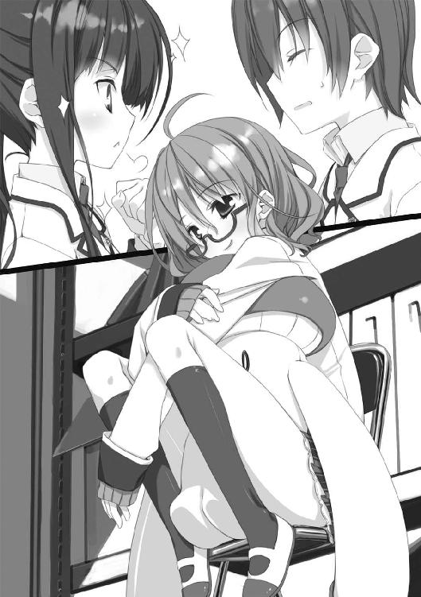
佐々原さんと何やら珍妙な問答を始めてしまい、一向に立ち去る気配のない成田くんの横顔を眺めながら、思う。
......なんでこの人は、「今」を変えたがるのだろう？ 変わらず、無限に回り続ける円環のような毎日──よろしいことではないか。わたしはそれをこそ望む。そのためにこそ努力したい。わたしは孔明より文和になりたいのだ。
..................
ふと、つまらないことを思いつく。成田真一郎、そのあだ名。
口の中だけで、呟いた。
非球だけに。
エピローグ２あるいはプロローグ３．成田真一郎
かくして、宍倉さんを中傷する噂はその根を断って、一件は解決した。
宍倉さんと中瀬は、あんなことがあった後も──いや、あったからこそ、か──仲良くやっているようだ。
中瀬などはあの後、開き直ったのか子ひつじの会に依頼を持ち込んできた。内気な彼女からすれば一大決心だったのだろうが、その相談内容は「野菜嫌いを治したい」という小学生レベルのものだった。いわく、
「わ、わたし、ちょっと偏食気味......特に野菜が苦手で。で、でも、宍倉さんはベジタリアン......ではないんですけど菜食寄りみたいなんです......だ、だから矯正したいんですけど......
ど、どうすれば、いいでしょう......？」
どうすればいいでしょう、と言われても......と思ったのだが、会長がパンと手を打ち合わせて「好きな人のために苦手なものを克服する──素敵なことだわ。わたしに任せてちょうだいっ！」と無闇に力強く請け負ってしまった。中瀬は会長の優しげな笑顔を鵜呑みにして「よ、よろしく、お願いします！」と感激の体で頭を下げたが......僕は心中で合掌した。
翌日の放課後、中瀬は漫研の部室に向かう途中で家庭科部のメンバー──ｗｉｔｈ会長──に拉致された（ついでに、記録係の名目で僕と佐々原も付き合わされた）。
スパルタを以て知られる家庭科部の面々は中瀬を終日調理室に拘禁し、ドギツいノニジュース（なぜか紫色の湯気が立っていた）と部員入魂の野菜料理（非常に美味）を交互に中瀬の口に突っ込んだ。荷造りヒモで椅子に縛り付けられた中瀬に抵抗する術はなかった。
「さぁ中瀬さん。どう？ このジュースは『不味い』わよね？」
会長は絶好調だった。いつも浮かべている落ち着いた微笑みではなく、本当に楽しい時に見せる輝かんばかりの満面の笑顔だった。
「ところでこの野菜料理はジュースと同じ味かしら？ 違うわよね？ ──そこで問題、『不味い』の反対はなんと言うのだったかしら？
......んん？ 声が小さいわよ、もう一度」
ひたすら料理に愛情を注ぎ込み続ける家庭科部を背に、妙な節回し──どこかしら催眠的なささやき声だった──で「説得」を試みた。
「──そう、その通り！ まさに！ まさしく！ 野菜は『美味しい』ものなのよ！」
それがおよそ三〇セット。調理室付近の廊下は身の毛もよだつ叫喚で満ち、空を行く小鳥たちでさえも束の間羽を止め、憐れみの声を天にささやいた。
その壮絶な儀式が終わる頃には中瀬も、
「......美味シウゴザイマス、美味シウゴザイマス......
......キュウリ美味シウゴザイマス、トマト、大根、ナスナド美味シウゴザイマス......
......野菜シャッキリポント美味シウゴザイマス......
........................
イア！ イア！ ベジタルフ・フタグン！ イア！ イア！」
......と、半ば洗脳状態ながらもすっかり野菜嫌いを克服していた。野菜を見ると目が虚ろになり指先に細かな震えが起こるという副作用は残ったものの、これなどは子ひつじの会が仙波に頼らずに解決した相談事の一例である。
............いや、解決と言うには大きな問題があることは解っている。けれど、中瀬はこんな災難に遭っても宍倉さんと同じものを食べられるようになったことを感謝しているようだったのだ。
ここは素直に、彼女の頑張りに感心しておこう。
後、これは僕の見た話ではないのだけれど、会計の宮野先輩が宍倉さんと例の久山が話しているのを見かけたと言っていた。その時、久山は存外殊勝な様子で、がちがちに緊張しながら、なんと宍倉さんに頭を下げていたという。
「話は聞きました......中瀬のこと、よろしくお願いします！」
......なんかそういう話だったらしい。宮野先輩は爆笑していた。いや、なかなかビターなオチだと思いますよ？
モテモテだな、羅貫中。
さて、僕はと言えば、相変わらずだった。いつも通りに学校に通い、授業を受け、生徒会の活動に精を出す。会長に半ば無理矢理に入れられた生徒会だったけど、やってみると思ったよりは楽しかった。書記と言っても実質雑用で、特技が要求される仕事をするわけじゃない代わりに、常にやることがなくならない。変な性分だとは思うけど、人に頼まれて雑用をこなすのは嫌いじゃなかった。
変わったことと言えば、時々部室棟の資料室を訪れるようになったことくらいだろうか。綿貫さんや宍倉さんの時のように相談があるわけではない。なんとなく足が向くのだ。あの部屋の静けさと混沌が入り交じったような空気が気に入ってしまったのかも知れない。
もっとも、あいつの僕に対する態度には何の変化もない。相変わらず嫌悪丸出しの目で僕を見て、舌打ちして、何か話しかけようものなら一万倍の濃度の有毒素言語で僕の心を打ちのめしてくれる。小学生の頃の男友達にだって、こう何度も「死ね」と言われた経験はない。
一方で、やはりあの部屋と仙波を気に入ったらしい佐々原は仙波と意気投合して──と言うか......なんだろう、とにかく──仲良くなったようで、廊下で会って二言三言交わす様子を日常的に見かけるようになった。
意外なのは、仙波の方でも佐々原との会話を楽しんでいる節があることだ。あの二人に、一体どんな共通点があるのだろう？──あるいは何もないからうまくやれるのか。
佐々原によれば、仙波は別に取っ付きにくい相手ではなく、単に僕を嫌っているだけなのだそうだ。薄型楕円形の黒い昆虫を嫌うのと同じような感覚で嫌っているのだそうだ。佐々原はそういうことをはっきりと言うが、美点と言っていいだろう。僕が泣きたくなるかどうかは別問題だ。
しかし仙波は、なぜああも僕を嫌うのか──いくら考えても謎のままだった。綿貫さんの件があるまでろくに会話したことすらなかった僕を嫌う理由が、どこにあると言うのだろう。そもそも僕は、仙波について何も知らない。しかし、知りたいと思うようにはなっていた。
なんでいつも独りでいるのか？
なんでいつも本を読んでいるのか？
やたら目の健康に神経質なのはなんでなのか？
あの髪型はただの天然なのかこだわりがあるのか？
体育をサボりがちのようだが単位は平気なのか？
家では何をしているのか？
あの不細工なぱやきのさんの何を気に入っているのか？
時々、ぼけっとして窓の外を眺めているが何を考えているのか？
──お前は一体、なんなんだ？
何かのきっかけで、気になって仕方なくなる時がある。
その理由について考えると、妙に頭がざわついて答えがまとまらない。出口がないから、いつまでも考えてしまう。しかし、不思議と悪循環という印象はなかった。
このざわざわは悪くないと、思う。
そんな折、「迷わない子ひつじの会」に持ち込まれた相談事は──怪獣退治の依頼だった。
Part-A：「本日の相談」（「迷わない子ひつじの会」議事録より）
○相談者・東原史絵（３年Ｃ組）
どうもどうも、お世話になります。
去年から何度も会った顔もありますけれど、一応自己紹介しておきましょうか──文芸部部長の東原史絵です〔※１〕。
（※１）東原さんはすらりと細身の、古風な美人画を思わせる女性だ。撫で肩で姿勢が良く、とにかく細長い印象を受ける。垂れてこぼれ落ちそうな瞳だけが円らだ。長い髪を後頭部でまとめて、うなじの辺りで折り返して落ち着いた色のバレットで留めている。下手に触れると折れてしまいそうだが──伝統ある文芸部の部長を務めているだけあって、中身の方は中々に、強い。日によって眼鏡の時もコンタクトの時もある人だけど、その日は四角いフレームの眼鏡だった。
......ホントはねー、これ文芸で解決しないといけない問題なんですけどねー。今の部員、こういうのが得意な子がいませんで。ンで、もう卒業しちゃいましたけど演劇部にいた篠原さんがそういうの詳しかったから、鹿野ちゃんに聞いてみたら「うるせぇ平成スーダラ女、なんたら子ひつじにでも相談しやがれ」と、こうですよ。ヒドいですよね。何か嫌なことでもあったのかしら。そしてあの美味しそうな着ぐるみは何だったのかしらん。
あ、話がずれましたね。ごめんなさい。
鹿野ちゃんの意見はさておくとして、この相談会って次々に厄介事を解決してるらしいではありませんか。よければわたしにもお知恵を貸して下さいな。
ンで、今回の相談の内容なんですけどね──〔※１〕
（※１）一瞬、幽霊部員のボサ頭をどうにかして下さいと言われたらどうしようと思った。こっちが聞きたい。
事の始まりは、去年末の大掃除で地下の倉庫──知りません？ なんかむき出しのパイプとかが天井にびっしり這ってて不気味な部屋なんですけど──の整理をした時に、過去数十年の卒業生が残した大量のガラクタ......もとい文化祭の出し物とかで使ったアイテムが見つかったことなんです。前から生徒会にいた人なら知ってますよね、倉庫整理のスケジュールがメチャクチャになったって先生方が大騒ぎしてましたから。
なにせ量が多い上、ものがものだけに適当に処分するわけにも行かないものですから、手の空いている生徒も駆り出して仕分けに大忙し。
その途中に、とんでもないものが出てきたんです〔※１〕。
（※１）そこで東原さんはゆっくりと子ひつじの会一同を見渡し、足下に置いてあったカバンから、ファスナー付きのビニール袋に入れられた一束の原稿用紙を取り出した。原稿用紙はかなり古いもので、別段保存処置を行った様子もなく紙の端の方がボロボロになっていた。
しかして、そのとんでもないものというのが、この原稿っ。
そう──この原稿こそが、近代ＳＦ界の麒麟児と謳われた菱維淘汰先生の幻の処女小説なのですよ！
......おや？ 反応が薄い。御存知ないですかね、菱維先生。あ、でも作品名くらいは聞いたことがあるんじゃないでしょうか。『かたつむりみてめまいまいりますまいる』とか、『猫ぞ知る筺体の中』とか。『かたつむり～』は児童書版も出てるから、結構知られてると思うんですけども......
でも、その菱維先生がこの学校の卒業生だって知ってる人は多分いないでしょう。わたしだって、この原稿が出てきてから校長先生に聞いて初めて知ったくらいです。
──そう、今回の件には校長先生がからんでいるんですよ。だからもう、厄介と言うか七面倒と言うか......あら、愚痴っても仕方ないですね。
菱維先生は今から丁度三〇年前の卒業生なんですが、残念なことにもうお亡くなりになっておられます。それほど珍しくない内臓の病気だったそうですが、気付くのが遅れて命取りになったという話です。夭折ですね。三面とかですが、全国紙に死亡記事も載ったんですよ。
この高校を出て都内の私立大学に進学。大学在学中に小説家の道を志し、この時点ではいわゆる純文学を目指していたらしいのですけれど、卒業後にアルバイト先で出会った有名な数学者に影響されてＳＦ作家として歩み始めたということです。その後、斬新な大技と「ひとひねり」を忘れない小技を兼ね備えたＳＦ作家として数々の賞を獲得し、文学史の片隅に名を残すに至っています。
そんな人が、高校時代に生まれて初めて書いた小説が、この原稿だというわけなのですよ。菱維先生は在学当時文芸部に所属していて、文化祭の時に企画文集に収めるために書き下ろしたものだそうです。もっとも、なんでも製本の予算がムニャムニャだった関係だとかで結局文集には収録されず、それ故に原稿のみが存在する仔細。ちなみに、この文集を主催した当時の部長は、後に菱維先生とコンビを組んで多くの名作を世に送り出した親友にして名編集者・榎戸滋さんでした。
これがエッセイや青春小説だったならそれほどの価値はないかと思いますが、ものがＳＦだということで、聞いた話ではマニアやその筋の資料館なら三〇万出してでも手に入れたいものらしいですよ。全集を出す予定もあると聞きますしね。
......お、空気変わりましたね？ 良いですね、良い響きですね、三〇万円。諭吉先生のプラトーン。微妙にリアルで、惹かれるお気持ちは、よく解ります。でも、上げませんよ。いえ、文芸のものでもないんですけどね。
これ、校長先生からの預かり物なんですよ。だから、失くしたらわたし、切腹ものです。泣いちゃいますよホントにもぅ〔※１〕。
で、この乙女の泪と同じ重さを持つ爆弾原稿がなぜ文芸部に預けられたかと言えば──
今年の文化祭の目玉として、この原稿を展示することが決まったから。
そして、もう一つの目玉として、未完に終わっているこの作品に、我々現役生の手で結末を付けるためなのです！
......そうです奥さん〔※２〕、このお話は未完、結末が記されていないのですよ！
（※１）そこで東原さんはハンカチで涙を拭う仕草をして見せた。この人、見た目は楚々とした美人なのだけれど、その大げさな──そして妙に芸の細かい──所作はどこかしら落語家めいている。彼女のファンに言わせれば、そこが良いのだそうだが。
（※２）この言葉は会長に向けて言われた。会長はにっこり笑って「あら、わたしは誰のお嫁さんなんですか」と返したので──複数の男子メンバーたちの間にざわざわした何かが広がった。佐々原が変な目で僕を見ていた。
それというのも、この小説が掲載されるはずだった文集はちょっとした趣向を凝らしたものになってまして、短編ミステリやジョークエピソードの前振り──つまり出題編と、それらの謎解きやオチを載せた解答編の二部構成になっていたのです。
出てきた原稿は出題編用のもので、解答編用のものはいくら捜しても見つかりませんでした。紛失してしまったか......あるいは最初から存在しなかったのかも知れません。
校長先生は考えました。今や高名な存在となりながら、若くして亡くなった本校ＯＢの未完の作品──在校生の手で結末を加えれば、これ以上ない供養になるのではないか、と。ついでに新聞の文芸欄とか地方紙とかに学校名載っちゃったりするんじゃないか、と。
というわけで、強権発動、上意下達、我らが文芸部に白羽の矢が立ったというわけです。
白羽の矢が立った、なんて怖い表現──これもともと「生け贄に選ばれました」って意味ですからね──を使ったのは伊達じゃなくて、これは結構なプレッシャーですよ。漫画だったらわたし、胃潰瘍に罹ってます〔※１〕。
（※１）その時、すぐ隣からぽつりと小さな呟きが洩れた。本当に小さな声だったので、僕にしか聴こえなかっただろう一言──「生け贄だけに、いけねー」。思わず目を向けると、視線に気付いた佐々原はかすかに顔を赤くしてうつむいてしまった。
なんと言うか......もぞっと来る仕草だった。
最初に言った通り、今の部員の中にはＳＦ好きな子っていませんし、かく言うわたしも、上手い「解答編」が思い付かないんですよねー。
──というわけで、今からこの原稿を読み上げますから、みんなでナイスな解答編を考えてもらえますか？ あ、もちろんプロット......あらすじやアイディアをいただければ、後はこっちで小説にしますから。
それでは......よござんすか？ トイレの人は今の内に行って下さいな。
原稿を読みますよ──〔※１〕
（※１）東原さんは懐から抜き出した扇子を口元に当てた。そんな芝居がかった仕草がやたらと様になる人だった。
『宇宙怪獣エヌマジクの脅威
伊東太一 作
榎戸滋 編
黒を切り裂いた赤い光芒が、黒に抱かれた蒼い球体に吸い込まれた──
赤い光は蒼い球体の中──手垢のようにこびり付いた緑の部分に吸い込まれ、そこから真っ赤なシミが吹き出した。
シミは燃え上がるように球体の侵食を始めた。ただし、蒼以外の部分を。緑を喰らって、球体を蒼と赤に染め始めた。
──西暦２ＸＸＸ年、地球は宇宙怪獣の侵略を受けていた。
それは突然に始まった。宇宙からの巨大な落下体、観測衛星の爆発、乾燥しきった都市の消滅──全ては虚空より飛来した謎の軟質生命体の所行。
その生命体が起こした最初の惨劇は、飛来そのものだった。地表への墜落の衝撃で降下地点の半径数十キロが灰燼に帰し、その余波、舞い上がった粉塵の影響で数十倍の範囲が死の世界と化した......
生命体の落下地点はシベリア。その生命体の様態を初めてとらえたのは、某国が非公式に配備していた迷彩衛星だった。某国はその映像を、故意にロシア政府に傍受させることによって全世界へと公開した。
その全長は優に百メートルを超え、想定される重量は六千トン。何かの繭にオブラートを被せたような外見で、体表は常にぬめりを帯びている。頭のように隆起した部分の先端からは、角を思わせる突起が一対、天に向かって伸びていた。分析に当たる各国の学者たちは、その突起は一種の宇宙線を受信する器官であるとの仮説を立てている。
その生物に触れたものは水分を吸い取られて干からび、繊維の固まりのような有り様になって朽ち果てる。奴の通った後には一切の生存が許されない。逃げ遅れた人々の亡骸は、やがて風にさらわれ、消えて失くなる。それはある意味で、死体の山よりも残酷な死に様だった。
シベリアから南下を始めた生命体は、通る場所全てを死の世界に変え、バイカル湖を半ば干上がらせながらモンゴルへの侵攻を始めようとしていた。
国連軍の編成した対策チームは、後にこの生命体を以下のように呼称した──
宇宙怪獣エヌマジク。
国連軍本部施設、真っ暗な作戦室。クリスマスめいた色彩の電子光が闇に浮かぶ。
前線部隊を率いるグレイン大佐は〔※１〕、作戦参謀のソイエ少佐と対座していた。
「なるほど少佐。では君は核兵器を以てしても、あの化け物をファックすることはできないと言うのだな」
「はい大佐、無論実際に試してみなければ正確な結果は得られませんが、目標の体表にはいかなる衝撃も熱量も通用せず、あの図体では計算上毒殺も不可能とのことです」
「なんてファックな奴」
グレイン大佐は苦々しく吐き捨てた〔※２〕。
（※１）さっき東原さんの話に出たせいか、なんとなく軍服と眼帯を装着した鹿野さんを想像してしまった。同じく少佐には例の鹿野さんを当てる。
（※２）ただ原稿を朗読しているだけとはいえ、一見ゆかしい娘さんの口から──心なし楽しそうにへらへらと──ファックファック連呼するのは止めて下さい東原さん。現在進行形のトラウマになりそうです。
少佐は、淡々と報告書を読み上げる。
「三日前の作戦では中国から徴集できた一千発のミサイル全てを投下しましたが、地形を変えたことでかろうじて進行を遅らせただけです。単純な威力での殺害は不可能と断じて良いでしょう」
「奴は水分を吸収しているのだろう。体表を焼き払ったことによるダメージは？」
「目標は二酸化炭素に類する化学物質を発することで一瞬で消火を行えるようです」
「ステイツから持ってきた試作レーザーはなぜ効かなかった？」
「まだ分析が終わっていません。一射目はそれなりの効果があったようですが二射目からは全く通用しなくなったとのことです。その前後、正体不明の気体が目標の周囲に確認されていることからして、光学的な干渉を無効化するような体質を持っているものと考えられます」
「ふン、ご都合ファック〔※１〕な野郎だ。
──奴の現在地は？」
作戦室の特大モニターに、中国北部の地勢図が表示される。怪獣の位置は赤い三角形で表示されているようだ。その進路はシベリア以降真南に向かっていたが、内モンゴル自治区のジランタイに差しかかる辺りで南東に進路を変え、数日後には北京への到達が予想されている。
「方向転換の理由は不明ですが、基本的には一直線に進行しています。このままでは北京は早晩死都に変わりますね」
「北京ダックならぬ北京ファック〔※２〕というわけだ〔※３〕」
グレイン大佐は、腕組みしてモニターを睨み付けながら鼻を鳴らした。
（※１）意味が解らない。ご都合主義の意か。
（※２）意味が完膚なきまでに解らない。いっそＲＯＣＫだ。ここで、さすがにこらえられなくなった副会長（男子）が「いくら原文でも、不適切な表現は避けた方が良いのでは」というようなことを──赤面しながら──言ってくれた（いいぞ頑張れ）。東原さんはしっとりと﨟長けた微笑を浮かべて「いぇ～い、ふぁ～っく」。あ、副会長が撃墜された。ひょっとしたら東原さんの隠れファンだったのかも知れない。力弱く突っ伏した彼の有り様からは、どちら側に撃沈されたのかは定かでない。
（※３）そもそも、何で文化祭の出し物でこんな表現が連発しているのか。セリフ回しに関しては東原さんのアドリブである可能性が低くないと思う。
そこにやって来たのは、生物学の権威であるところのクドー博士。後に怪獣を名付けたのも彼だ。颯爽と白衣をはためかせ、博士は大佐に嬉々として語りかける。
「やりましたぞ大佐！ ついにあの怪獣を追い詰める仮説が見つかりましたぞ！」
「ほゥ博士！ 君が爆発以外の成果を上げるとは驚きだ！」
「わたしは奥さんのパンツでも爆発させる男ですぞ。理論だって脳みその中で爆発するのですぞ。かの怪獣オルギビクを界面活性剤と水攻めで倒したように、此度の怪獣も弱点を突けばイチコロですぞ」
「なるほど、そいつはパンチの利いたファックだ。詳しい話を聞かせてもらおうか」
グレイン大佐はにやりと笑った。
＊
さて、博士が考えた怪獣の弱点とは、なんだったのでしょう。
皆さんの知恵で怪獣を倒して下さい。
（解決編に つづく）』
──っと、ここで原稿は終わりです。御静聴、ありがとうございました。
聞いての通り極めて短い内容で、当時の菱維先生を知る人からは「途中でやる気なくなったんじゃないか」とのアレな証言を得られてしまったのですが、一応なんらかの答えは導き出せるはずです。
もちろん、文芸部もさんざん考えたんですけど、結論が出せなかったんですよ。多分これ、文の短さ自体が考え方のヒントなんじゃないかと思うんですけど......
お知恵拝借、よろしくお願いします〔※１〕。
（※１）我慢できず「さっきの朗読のセリフは何割くらいアドリブだったんですか？」と訊いてみたところ、「そんなものはありませんですわ」とありえない言辞が返ってきた。軽く惚れそうだ。
Part-B：成田真一郎
さて、どうしたものだろう？
正直、よく解らなかった。あれが本当に高価な原稿なのだろうか。いや、でも、東原さんの話によればあの話が書かれたのは菱維先生──本名は伊東太一さんというらしい──がまだ小説家を志す前のことらしいから、出来についてはあまり意味がないのかも知れない。存在することに価値のある品、という奴なのだろう。
その原稿は東原さんが膝の上に置いたままで、ワープロで打ち直してプリントアウトされた「写本」がみんなに配られている。セリフが東原さんのアドリブだったかどうかは......御想像にお任せする。
僕が写本を読み終えた頃、隣の佐々原も顔を上げてこっちを見た。今日は関係図ではなく、怪獣の想像図を描いている。......ロシアを震駭させた怪生物の割りに、携帯電話のストラップに付いてても違和感ないような絵面だった。書き添えられた「ヌマ～」という鳴き声は、名前から考えたオリジナルだろうか。
そんなファンシーな画風とはかけ離れた平板な声で、訊いてくる。
「......当てるのは怪獣の『弱点』ということですが、これだけの文章で特定できるようなものなのでしょうか？」
僕はパイプ椅子の背もたれをぎしぎし言わせながら、うなずいた。
「だよね......この怪獣は一見無敵っぽいけど、何もかも試したってわけじゃないし......」
「せめてヒントが欲しいところですが」
「作者先生が天国じゃなぁ......でも、東原さんも言ってたけど、『この短さでも特定できる』ということ自体がヒントなんじゃないかな。きっと単純なことなんだよ」
「単純なこと......黒魔術とか？」
「なぜ黒魔術」
「強いじゃないですか」
「強い、のか......？」
話し合っているのは僕らだけじゃない。他の子ひつじの会メンバーも、あらかた写本を読み終えていくつかのグループで討論を行っている。会長は、それらの島を回って意見を吟味しているようだ。
その様子を目で追っていると、佐々原が声を抑えて訊いてきた。部屋の真ん中でぽけーっと扇子を弄んでいる──ように見える──東原さんに聞こえないようにしているのだろう。
「行きますか、隣に」
「......居るかな？ 東原さんが来たから逃げたかも」
「そう言えばそうですね......」
佐々原はいつも通り淡白にうなずいたが、少し残念そうにも見えた。僕の気のせいかも知れないけれど。
難問奇問と言えば仙波。それは今や、僕と佐々原の共通認識だ。我ながら他力本願だとは思うけど、それで救われる人がいるなら恥なんて棚に奉じる。仙波も、なんだかんだ言って謎解きの類は好きそうだし。
......何かお礼はしなくちゃいけない、とは思っている。でも、僕や佐々原が仙波に対してできることってなんだろう？ とりあえず、この間持って行ったブルーベリーヨーグルト──学校付近のコンビニ価格一個一六五円也──は受け取ってくれたけど。
礼のことはさておくとしても、どうも仙波は他の文芸部員と遭遇することを避けている節がある。幽霊部員なので気不味いのか、それとも部費の滞納でもしているのか。今日の相談者が文芸部長の東原さんであることは判っているだろうから、さすがにもう資料室には居ないかも知れない。
「まぁ、一応、居るかどうかの確認は──」
「なんの確認をするの？」
いきなり声をかけられて、背筋がすくんだ。佐々原と内緒話をしていて注意がそれていたこともあるだろうけど、絶対気配を消して近付いてきたぞ、この人。
僕は、筋違いを承知で咎める目つきを作った。
「おどかさないで下さい、会長」
「ごめんなさい。お邪魔してしまった？」
会長はふくよかな胸の前で手を組んで、すまなそうに首を傾げた。
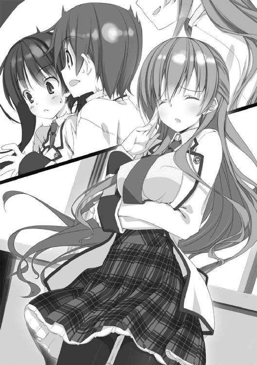
「......わざとらしいポーズも止めて下さい」
「まぁ、そんなに冷たい言葉遣いをどこで覚えたの？ 自分の部屋？ なんだかいやらしいわねぇ」
今度は素で意味の解らないことを言った。しかも他の人には聞こえないような、絶妙の声量で。この人は外面的には「ちょっと抜けてるけど誠実有徳のチャーミングな淑女」という感じなのだが、親しい相手には「計算高くわがままな享楽主義者」の一面を見せる。さらに根底には......いや、思考に上らすのもはばかられる。
会長とは家が近所なせいで、日常的な意味でプライベートな付き合いがある。裏表のギャップを知ってる分、相手をしていると仙波とは別のベクトルで消耗が激しかった。
「いやらしくないです。温かい言葉とは違って、冷たい言葉は生きているだけで日々その語彙を増やせるものなんですよ」
「親切な世の中ね」
「まったくです」
「そうそう、いやらしいと言えばお二人さん、最近仲が良いわね」
......いや、「いやらしいと言えば」なんて枕でそんな話題振られても。相変わらず、本性を知っている相手には悪い意味で遠慮のない人だ。
佐々原も困って......いないようだ。いつも通りの無表情で会長を見つめている。無表情過ぎて、呼吸をしていないようにすら見える。
僕は顔をしかめた。
「そういう言い方は止めて下さい......一年のメンバーって少ないから話し易いんですよ」
「でも、宍倉くんの相談の時なんて、二人で資料室にしけ込んでたじゃないの」
「......しけ込ん──って......何言ってンですか。アメリカだったらセクハラで立件できますよ。僕らはただ、場所と気分を変えて相談したかっただけです」
会長は、細目がちな眼をうっすら開いて流し目を作った。どこか狩猟的な顔だった。
「ふぅん。それはまた、ふぅん。それで、戻ってきた途端にぺらぺら名案をしゃべり出すわけなのね。隣はスピリチュアルなパワースポットか何かなのかしらん」
......段々、冷や汗がにじんできた。この人のことだから、仙波の件を把握していたとしても驚きはしない。性格上、あまりうるさいことは言わないと思うが、掌握されているという事実そのものが背中を寒くする。木刀を肩にかついだ会長に連れ回されて、色々と不祥事に付き合わされた小学生時代を思い出す。
けれど、幸いなことにそれ以上の追及はなかった。会長は一転、にっこりと毒のない笑みを浮かべ、
「ま、好きにすればいいわ。面白いし」
どうしようもない本音を吐いた。そうして、なぜか佐々原──さっきから全く同じ姿勢で固まっていた──の頭を撫でてから、自分の席に帰っていく。......そう言えば会長、ちょっと前から佐々原に対しても地で接してるけど、いいのか？ 基準がよく解らない。
先ほどまでの無邪にして悪な言動が噓のような、柔らかい所作で上座に着いた会長は、良く通る声で宣言した。
「簡単に結論の出る問題ではなさそうだし、少し休憩しましょうか」
会長の「お許し」が出たせいもあり、僕は早速資料室の扉を開けた。なんとなく気不味かったので佐々原には声をかけなかったのだが、結局彼女も付いてきた。会長は多分、僕らの動きを目で追っていたのだろうけど、努めて気にしないようにした。
意外なことに、仙波はいつも通り部屋に居た。しかも弁当を広げていた。
相変わらずのボサ頭。さすがに食事中にぬいぐるみを潰してはいない。ぱやきのさんは机の隅っこで、心なし安らかな様子で横倒しになっていた。
作業机の上に広げられた弁当箱はアルミ製の質実剛健なもので、女子の持ち物としては規格外のデカさと言っていいだろう。本気度の高い柔道部員とかが使っていそうな品だ。唐揚げやウインナー等の定番メニューと白飯がフィフティー・フィフティー、やはり中身にも色気がなかった。三分の一くらいに減っている。
左手で文庫本を持ち、右手でプラスチックの箸を操って唐揚げをパクつきながら、仙波はこちらを見もせずにぽそりと呟いた。
「塩」
「えっ......？」
咄嗟に返事ができなかった。いかにも唐突過ぎる言葉だったからだ。決して、仙波が（西日が暑いからか）シャツの第二ボタンまで外しているのに気付いて色々と困ってしまったからではない。
さり気なく深呼吸してから応えた。
「いや、持ってないけど......」
仙波は「このトンチキ野郎が」とでも言いたげな不快感丸出しの目で僕を睨んできた。......調味料を持ち歩いていないのがそんなに悪いことだったのか。あまり薄味には見えない弁当なんだけど。
いつも通りと言えばいつも通りのやり取りに僕が鼻白んでいると、佐々原がやはりいつもながらの薄味調子で訊いてくれた。
「いつもここで食べているんですか？」
「まぁね。ちなみにこれは、昼休みに食べ切れなかった分の残りよ」
仙波はにこりともせず、しかしちゃんと答えた上に注釈まで入れてくれた。やはり、僕以外の人間には特段無愛想というわけではないようだ。
かと思えば、
「......家の母親、思い出したように大量の弁当作って押し付けてくるから処理に困るのよね。なんでわたし、あんなめんどくさい人の娘なのかしら」
お母さんに対して毒突いた。それでも、捨てるという選択肢を選ばない辺り、言うほど親子仲は悪くないのだろう。
「──なに？ その気持ち悪い目は。訴えるわよ」
......どうやら仙波を微笑ましく見てしまっていたらしい。気持ち悪いという理由で訴えられては、それこそ名誉毀損だと思うのだが。て言うか、同級生の女子に言われると意想外に落ち込むな......
それはさておき、佐々原は別のことに引っかかったらしい。
「教室や食堂で食べたりしないのですか？」
なぜだろう。その質問をした時の佐々原は、ちょっと真剣に見えた。食事をする場所が、そんなに重要なことか？
仙波がそれに気付いたかどうかは判らない。ただ、彼女は箸を置いて佐々原を見上げた。
「世の中には、ご飯はみんなで食べるより一人で食べた方が百倍美味しいという人もいるのよ」
そうして、僕には絶対見せない種類の微笑を浮かべた。九割の好奇心に一割の嗜虐を混じらせた、そんな笑み。
「それは『わるいこと』？」
佐々原は身じろぎした。それから首を横に振った。
「いえ......」
......正直、今のやり取りの意味はよく解らない。仙波はともかく佐々原にもよく解っていないだろう。でも、なんだかこの二人の関係を端的に表している気がした。
教師と生徒？ 合わせ鏡？ ヘビとカエル？ 悪魔と人間？ ......いや、どれも違うな。なんだろう、これは。把握しておかないと、その内に致命的な失敗をやらかしそうな予感がしているんだけど......
しかし、僕に考える時間は与えられない。
仙波は、食事に戻りながら、一転苛立たしげな声を出した。
「わたしのことはどうでもいいでしょう。放っといて。
何の用なの？ 長居されて、万が一部長さんが入って来ることになったら面倒だから早く帰ってほしいんだけど」
やっぱり東原さんと遭遇するのは好ましくないようだ。しかし僕らが思っていたほどには恐れていないようで、消極的にやり過ごすつもりらしい。
「......いや、申し訳ないとは思うけど──判ってるだろ。この原稿を読んで、怪獣退治の方法を考えてほしいんだよ」
──さっきと似たような視線が返ってきた。「このスカタン野郎が」と目で語っていた。
ぅぅ......ひるまない、ひるまないぞ......
「あのな仙波、今回は文芸部がらみの相談なんだから、名目上とはいえお前の方が当事者だ。協力してくれたっていいだろ」
我ながら正論をぶつけたつもりだったのだが──仙波はもしゃもしゃと弁当を喰らい続けた。ひ弱そうな見かけによらず健啖家だ。あッと言う間に大量の弁当が消えていく。
ただ、眼鏡の奥の忌々しげな視線はまだ僕に向けられていた。「解らない奴だな、このオマヌケ野郎」と語っていた。
......ん......？
なんだろう？ これは、いつもと違って、ただ言葉の着信拒否をされているわけではなさそうだ。
「あ、もしかして......」
呟いたのは佐々原。
「どうした？」
彼女は、自信なげに逡巡しながらも続けた。
「塩......」
「塩？」
塩って......さっき仙波が、入ってきた僕たちに言った第一声......──あ！
「塩か！」
思わず大きな声を出してしまった。そうだ、仙波は、別に弁当に塩を振りたかったわけじゃない。いきなり答えを言っていたんだ。
仙波はうるさそうに眉をひそめると、食べ終わった弁当箱のフタを閉め、ぬいぐるみを抱き寄せた。
「そう──あのクイズみたいな文章の解答は『塩』よ。今回ばかりは断言する。間違えていない自信があるわ」
仙波が何かを断言するのは──僕がいかに劣悪な人間であるかを語る時以外は──珍しい。彼女はいつも、ただ可能性を提示するだけだ。
今回は相手が創作物だけに、性質が異なるということだろうか。
「どうして塩だと断言できるんですか？」
不思議そうな佐々原に、仙波は小さく肩をすくめて見せた。
「ナメクジと言ったら塩でしょう？ 実際には砂糖とか重曹とか、浸透圧の発生するものなら何をかけても縮んで死ぬらしいけど。わたしは塩でしか試したことないわね」
僕もだ。子供の頃、庭に居たナメクジに塩を振って縮んでいく様を観察した覚えがある。今思えば残酷なことをした。
「ビール溜まりの罠を作って溺死させるって民間駆除法も有名らしいけど、日本では現実的じゃないからね。それに、一直線に南下していた怪獣は、塩湖の岩塩が知られるジランタイを避ける形で進路を変更している。淡水のバイカル湖は渉ったわけだから大量の水に弱いってわけではない──一応の参考にはなるわね」
確かに、怪獣の特徴のいくつかはナメクジに近い。アンテナのような触角、ぬめぬめした体表、湿気を好む──
でも、それだけで断定するのは乱暴じゃないだろうか。
「仙波、ナメクジの弱点の中でも塩が有力なのは分かった。これだけ短い設問なら、短絡でも塩でＯＫだろう。でも、そもそもどうして怪獣の性質がナメクジと同じだって決めつけるんだ？ そっちの根拠は？」
外見以外にも手がかりがあるのだろうか？
「......そこが、この件のややこしい所ね。
まず前提として、その原稿はＳＦではないことを認めなきゃいけない」
「有名なＳＦ作家が書いたのに？」
「違う。それを書いたのは有名なＳＦ作家の菱維淘汰ではなく、ただの高校生の伊東太一。しかも真っ当な作品として上梓したものではなく、文化祭の企画でひねり出した小品よ。そこを履き違えるから無駄に難しく感じる。
部長さんの話を聞いていたでしょ。伊東太一が小説家になろうと思ったのは大学に入ってから。ＳＦ作家になろうと思ったのはさらに卒業後。潜在的なＳＦ好きだったという可能性は高いにしても、文化祭の出し物に専門的なギミックを仕込むとは考えにくい。
その文章は、純粋なクイズとして、もっとメタな視点で見ないと答えが出せないのよ」
「高次な視点......と言うと、登場人物の視点ではなく、小説の外側から考えるということですか？」
佐々原の確認に、仙波は浅くうなずいた。
「そう。実を言えばわたしは、タイトルと作者の名前が聞こえた時点で、その怪獣の弱点は塩なんじゃないかと思っていた。
──なんとなれば、怪獣の名前エヌマジクがナメクジのアナグラムだから」
............なんとなくは判る。判るのだけれど、知らなかった。僕は正直に訊いた。
「アナグラムってなんだ？」
仙波は予想通りシャキッとキレのある苛立ちの視線を投げつけてくれたが、やおら立ち上がると黒板の前に出てチョークを取り上げた。
「言葉遊びの類よ。そうね、例えば──」
カツカツと黒板にチョークを這わせて、板書する。いわゆる金釘流だが、読みづらくはなかった。
『センバアキ』
「これをアナグラムすると」
『アンバセキ』
「鞍馬席？」
「必ずしも意味が通る必要はないわよ」
自分でも上手い例ではなかったと思っているのか、仙波は少し不満そうに言った。
......でも、理解した。つまり、文字を並べ替えて別の意味にしたり原意を隠す、言葉遊びってことか。
ふと見ると、佐々原が空中に人差し指を舞わせている。頭の中で確認しているようだ。
「なるほど、アルファベットで書いたらナメクジを並べ直してエヌマジクを作れますね」
「でも、作れる、だけじゃ根拠にならないぞ。
他にも何かあるのか？」
訊いてみたが、仙波が断言するからには、それなりの理由があるのだろう。
果たして仙波は、迷いない筆致で板書を続ける。
「当然、当たり前よ。作者も、さすがにそう思ったんでしょうね。最後の最後で強引にフックを入れている。すでに退治された怪獣の名前──」
『オルギビク ＯＲＵＧＩＢＩＫ』
「最後のＵはエヌマジクの例に合わせて省略した。この怪獣は、界面活性剤と水攻めで倒されたとあったわね。界面活性剤なんて言うと大仰だけど、分かり易いところでは台所洗剤の主成分。
さて、このオルギビクをアナグラムすると──」
『 ＧＯＫＩＢＵＲＩ』
仙波は、ここで僕の方に視線を向けた。
「君のことね」
「おーいＧＯＫＩＢＵＲＩさんお呼びだよ」
僕は認めなかった。断じて認めなかった。衛生害虫と僕の間には何ら関わりがない。
「アレに洗剤をかけると窒息して死ぬ、ってのはナメクジに塩ほどじゃないけど有名な対処法ね。実際はいろんな虫に有効らしいけど。
怪獣にネーミングしているのが明らかに日系の......博士だっけ？ ってことからしても、同じパターンで名付けたとすれば、エヌマジク＝ナメクジはまず間違いないでしょ」
カツンと一つ黒板を打って、仙波は説を結んだ。
「だからこの文章は、作中人物が得られる情報だけではどう頑張っても解決できない。外側から逆算のような読み方をして初めて読み解けるクイズなのよ」
......なるほど、ここまで来ると、確かに断言してしまっていいだろう。偶然ではそこまで符合しない。
十分納得した。今回の相談の答えは「塩」。
しかし、仙波の言葉の中にはまだ解らない点が残っている。
「......でも、なんでタイトルと作者の名前を聞いた時点でそれが判ったんですか？」
僕の疑問は、佐々原が口に出して訊いてくれた。仙波はあっさりと首をすくめてタネを明かす。
「判ったんじゃなくて、当たりを付けただけ。
伊東太一のペンネームが菱維淘汰。これも多分、アルファベット表記のアナグラムでしょ。
──そういう思考をする人だと思ったのよ」
そうして最後に、『Ｑ．Ｅ．Ｄ．』と板書した。
Part-C：仙波明希
二人が会議室に帰っていくのを見送って、わたしは小さく息を吐いた。
またやってしまったが、今回は仕方ない。成田くんも言っていたが、わたしは一応文芸部員なのだから、そこを追及されれば協力せざるを得ないのだ。他人と関わらない上で一番大切なのは、とにかく律儀であることだと、思う。
今回ばかりは成田くんも妙な真似はしないだろうし──何せ相手がフィクションだ──後は静かにやり過ごせばいい。
さて、食事も面倒も済ませたことだし、読書に戻ろうか......
わたしは、ゆっくりとぱやきのさんに寄りかかった。
......その日の相談会は、珍しくもつつがなく終了した──成田くんと佐々原さんが主張した「塩」の解答が皆の賛同を得て、いささか拍子抜けの体で結論となった。東原さんも上機嫌で「鳴き声はヌマ～にしましょう。大量の塩を散布されて断末魔のヌマ～」と構想を始めていた。......ヌマ～ってなんだ......？ 佐々原さんが珍しく切迫した声で「み、見ないで下さい」と言っていたのと関係あるのだろうか。
......何はともあれ、喜んでもらえたようで何よりだ。
別段部費のかかる部ではないとはいえ、幽霊部員の立場で色々と利用させてもらっているので多少の負い目はあった──図書室の鍵を無断で複製した件とか、時々部室に忍び込んで帯禁の希少本を借りている件（念のため言っておくと、読んだらちゃんと返している......いや、最近ちょっと積んでるけど）とか──
ほどなく子ひつじの会は解散し、隣室から人の気配が消えていく。不審に思われては敵わないと釘を刺しておいたので、今日は成田くんたちも来ないだろう。後は下校時間まで静かな空間を満喫するとしよう......
──とは、行かなかった。
バタンッ！ とやにわに勢い良く会議室側の扉が開かれ──
「たり・ほー！ 会いたかったですよ仙波ッちゃん！」
......やたらハイテンションな東原さんが現れたのだ。
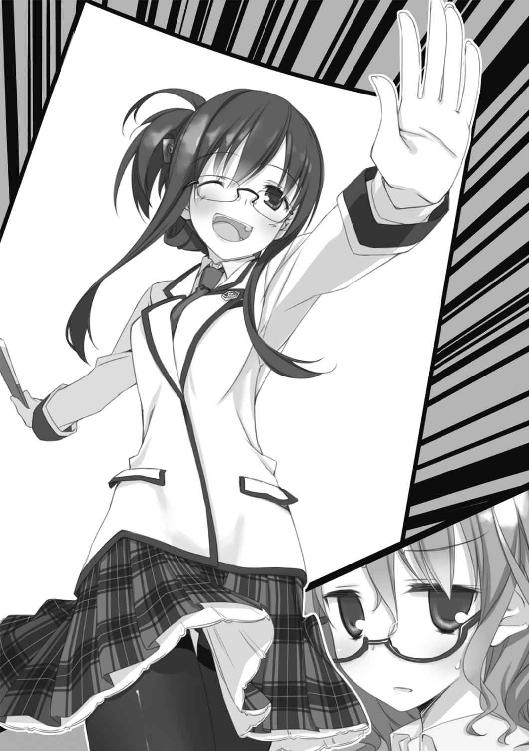
他には誰もいない、一人だ。子ひつじの会の連中が捌けるのを待ってやって来たらしい。しかし。
......成田、吐きやがったか？
突然のことに思わず背筋を反らせつつも、わたしは努めて冷静に言った。
「......そのイントネイションで呼ぶの止めて下さい。せんという名前のお婆さんみたいに聞こえます」
「あらごめんなさい。でもちょっと見、オーラで言えばお婆ちゃんですよね。枯れてる」
「霊感ないのでオーラとかは見えません......」
......苦手だ。成田とは別の意味で会話するのがキツい。この人の場合、「嫌い」とは言い切れない分、対応に困る。個人的な基準では、父さんと話す時に近い感覚だった。
相手にしゃべらせているとペースを支配される。先に聞きたいことを訊いてしまおう。
「......どうして、わたしがここに居ると判ったんですか？」
「ああ。その、返答によっては密告者への戦闘的報復をも期した目は、書記の子がチクったと考えていますね？
でも違います。綿貫ちゃんが教えてくれました。『部室棟の資料室で文芸部のレッテル張った本を読んでる根のドス暗そうなボサボサ頭のチンチクリンで気を遣って言えばスレンダーなぶっちゃけ板胸メガネの女子を見た』って」
「後半の文法滅茶苦茶な罵詈雑言は絶対部長さんのオリジナルですよね」
......迂闊だった。新入生のわたしは詳しく知らないが、当代の文芸部と演劇部は親しくしているらしい。そういえば、文芸部の部室で、ここ数年間の演劇部公演の脚本がぞろりと並んでいるのを見た覚えがある。タグシールが張ってなかったから誰かの私物のはずだが、妙に大切そうに保管されていたので気になってはいた。
交遊の広い部長さんが綿貫さんと世間話をする仲でも不思議はない。問題は──
「......なんでこのタイミングで来たんです？」
「もちろん、お礼を言いに来たんですよ。
さっきの小説の件、解いてくれたの仙波ちゃんでしょう？ 綿貫ちゃんの時もアドバイスしてたみたいですし」
そう言った部長さんの視線は、黒板に向けられていた。......いかん、消し忘れていた。
むなしさを覚えつつも、抗う。
「......なんのことですか。それはさっき、佐々原さん他一名がやって来て何か話し合いながら書き殴っていったものですよ。わたしとは無関係です」
「なんで無関係な人の名前でアナグラムの例を紹介しているの？ 鞍馬席さん」
「........................」
黒板を見たままにこやかに言われ、汗がにじむ。
「別にごまかさなくてもいいでしょう。悪いことしたわけじゃないんですから。
それどころか、これは立派な部への貢献です」
「貢献て......わたしは幽霊部員ですよ」
部長さんは、すぐには応えなかった。ゆったりと部屋の中を見回して、わたしが部室から持ち出したままになっていたハードカバーの全集を手にする。
「ちゃんと活動してるみたいですけど？ これ、先週の金曜日に持ってった奴でしょ」
......バレてたのか。
なんだろう、許容されているのに追い詰められているような、妙な感覚がある。落ち着かずに机上のぬいぐるみをぐいぐい潰しながら、理由も分からない反駁を続ける。
「......勝手しているだけです。放課後だって、ろくに部室に顔を出したことすら──」
部長さんは、莞爾と遮って、言った。
「それは『わるいこと』？」
っ..................
思わず、部長さんの顔を凝視してしまう。それは、ついさっきわたしが佐々原さんに言ったのと同じ言葉。
偶然なのは間違いない。成田くんたちが実験していたのを見ていたから知っているのだが、会議室の話し声はこちらに聴こえ易いが、こちらの物音は会議室にはほとんど伝わらないのだ（普通、逆であるべきではないかと思うが）。だから、部長はわたしと佐々原さんのやり取りを聞いていたわけではない。
それでもわたしは、にわかには言葉が出せないほど動揺していた。佐々原さんのことは言えない。わたしはわたしで囚われていたのか。あるいは、無意識に他人を侮っていた──自分は理解されないものと諦めていた──のか。
部長さんは閉じた扇子を杖のようにして机を突いて、対面からわたしをのぞき込んできた。初めて見る、真摯な表情だった。
「わたしの見るところ、仙波ちゃんは立派な文芸部員です。いくら部室に居たって携帯ゲームをピコピコやってるだけの和辻くんとかよりよっぽど。それでも、部の備品やなんやを一方的に利用しているのが心苦しいと言うのなら、今回の協力で帳消し──と言うか、むしろ貸しが勝ちます。
だから、あなたにはもう、なんの引け目もない。この部屋で胸張って文芸部をやってていいんですよ」
言い終わると同時、真面目な顔がほにゃりと解けて、いつもの湯豆腐のように手応えのない笑顔に戻った。この人は、胡散臭いのと同じ程度に気の置けない、妙な間合いを自然に作る。
......子供扱いされている、と考えては自惚れか。わたしはこの人に、子供のように大切にしてもらえるような人間ではない。単に把握されていることを宣告しに来たのかも知れない。
しかし、なんであれ、気を遣われていることは認めなければならないのだろう。筋違いな悔しさを感じたとしても。
「............お世話かけますね、どうも」
男子だったら一発で堕ちたであろう笑顔が返ってきた。
「好きでやってる部長ですから」
部長さんはたおやかに身を引いて、全集を元の場所に戻した。
「......あ、でも、気が向いたら部室にも来て下さいね──」
そして、わたしの方を流し目で見て、言う。
「わたしは可愛い女の子が大好きなんですから」
........................
がたっ！
生まれて初めての戦慄に、思わず腰が引ける。表情こそ動かさなかったものの、かすかに手足が震えるのまでは止められない。思考までも混濁してくる......
──それか、それがここまでしてくれる動機なのか？ わたしが可愛いかどうかはさておき、以前から部長さんに妙にからまれていたのは事実だ。思えば、部室に顔を出していた頃にも何度かスキンシップと称して頭撫でられたりしたし......あれ？ 今ここで二人っきりってちょっと危険なんじゃ？ 関係ないけど部長席って携帯ゲームどころか初期型のＰＳ３が鎮座してますよね？──
わたしの狼狽しきった反応がよほど心外だったらしい。部長さんは珍しく、不機嫌な表情になった。
「ちょっとした冗談だったんですけど......本気で傷つきましたよ、今の反応は」
......演技には見えない。正銘の冗談だったようだ。安堵の息が吹き出た。
「部長さんは何を言っても冗談に聞こえるから、何が冗談なのか判らないんですよ......」
「仙波ちゃんは真面目ですねー。Ａ型？」
「......そういうのはプラシーボ効果だと思ってますから」
「あらま淡白。今流行ってるんじゃないんですか、血液型とか。ちょっと前に図書室で、なんか真剣な顔でそういう本探してた子がいましたよ」
部長さんはつまらなそうに言ったが、自分でもあまり信じていないようだった。角縁眼鏡の向こうの目が笑っている。
そして、ふと思い出したように黒板に向かうと、カツカツとチョークを滑らせた。
「そうそう──アナグラムの話ですけど、これには気付きました？
あの小説の登場人物は三人。グレイン大佐、ソイエ少佐、クドー博士ですね」
『ＧＲＥＩＮ ＳＯＩＥ ＫＵＤＯ』
「これをこういう表記にして並べ替えると──」
『ＥＮＯＫＩＤＯ ＳＩＧＥＲＵ 』
あ......榎戸滋、確か作者の親友で文集の編者だ。
「原稿の頭に、わざわざ編集の名前を入れるなんてちょっと珍しいし、これもヒントだったのかも知れないですね。ま、どっちにしてもイジワル問題だと思いますけど......有名作家の学生時代の茶目っ気だと思うと、ちょっと可愛いかも」
そう言って嫣然と微笑むと、部長さんは来た時とは打って変わった静かな所作で、廊下側の扉に手をかけた。
..................
......この人、子ひつじの会なんて使うまでもなく判ってたんじゃないか、塩。
しかし、だとすると、今日の全てはわたしにさっきのセリフを言うためだけに催されたってことになるの......か？ 綿貫さんからわたしが相談会にからんでいることを聞きつけて。丁度良く手元に入ってきた原稿を利用して。
部長さんの細い背中を見る目に、呆れがにじむ。
......ひょっとしてものスゴく不器用なんですか、東原先輩。
そのまま去るかに見えたその不器用さんは、ふと振り返って、何やら不穏な顔をした。
「それにしても、書記の──成田くんでしたか。
中々やりますねぇ、仙波ッちゃんに目を付けるとは」
......なんか誤解してやがる。あれはただのお節介だ。
「悪い虫なので駆除中です。あと、そのイントネイションやめて下さい」
「わぉ、自分で自分に寄ってくる男の子を悪い虫って言う人初めて見ました。
......しかしまぁ、テープ台で半殺しにされても慕い続けるなんて、なまなかな使い手にできるものではないですよ」
半殺しにした覚えも慕われている覚えもない。て言うか綿貫さんはしゃべり過ぎだ。
それはさておき、
「......使い手って、なんのですか......？」
「ん？」
部長さんは、立てた人差し指で形の良いおとがいを撫で、ちょっと言葉を探した。
ややあって、気に入る表現を見つけたようだ。パッと、爽やかに笑って答えてくれた。
「人生ギャグ？」
ＧＯＫＩＢＵＲＩ扱いのわたしの方が、万倍優しいと思う。
エピローグ３あるいはプロローグ４．佐々原三月
かくして、東原文芸部長の持ち込んだ「怪獣退治」の依頼は無事に解決を見ました。
塩を使った解決編は、二年の和辻さんという人が執筆するとのことですが、文化祭はまだ先のことなので、せいぜいのんびり書かせると言っていました。わたしたちが解決編を目にするのも、文化祭までお預けのようです。
東原さんと言えば、本館の第四会議室を使っている日にふらりと遊びに来て、なぜかわたしと成田くんに仙波さんのことを色々と教えてくれました。
いわく──文芸部には入学早々に入部したが、数日顔を出しただけで二度と参加しなくなった。多分、目当ては部室にしかない書籍の閲覧だけで、なんらかの方法で部室の合い鍵を作れたので通常の活動時間には出なくなったのだろう。だから会話する機会はあまり多くなかったが、どんな話柄にも対応できる知識と独特な考え方を持っていて面白い子だった。本人が希望するなら資料室で「活動」してもらうのは全く問題ないが、暇な時でいいので、時々あなたたちで様子を見にいってほしい──等々。
もともと世話好きということもあるのでしょうが、東原さんは仙波さんをいたく可愛がっているようです。「眺めてると珍種の動物みたいで面白いでしょ」という言葉は照れ隠しだったのか本心だったのか。あの人の場合、どちらもありそうです。
仙波さんは、その後、一度だけ文芸部の部室に顔を出してあいさつをしたそうです。でもそれっきりで、今日も今日とて図書室や文芸部室の本を資料室に溜め込む文車妖妃と化しています。
その様子を見てわたしは──東原さんには悪いですが、どこか安心しました。
さて──
わたしは、迷っていました。
わたしは今まで、できるだけ他人に深く関わらないように心がけてきました。仙波さんも同じようなことを言っていましたが、理由が真逆です。仙波さんは、相手に入れ込むと諸共に面倒や痛みを抱え込むから避けるのだと言っていました。また、自分の価値観は大多数の人とずれているので、自分を偽らずにいると、それだけで相手に不快感を与えてしまうとも言っていました。
でもわたしには、その「痛み」だとか「自分の価値観」だとかいうものが、よく解らないのです。多くの大人たちが出入りする家に育ったせいか、それともただ生得のものか、子供の頃から他人のことを遠い存在だと思ってきました。他人が何をしていようが自分には関係ないと思いましたし、現に何も感じませんでした。
たまに親戚や父のお弟子さんの子供が遊びに来ることもありましたが、わたしには彼らが何を考えているのか一向に解りませんでした。また、解りたいとも思いませんでした。誰かを好きになることも、嫌いになることすらありませんでした。関心を持てなかったのです。他の子がはしゃぐことにはしゃげず、怒ることに怒れない、そんなわたしは時に変な目で見下ろされました。父はわたしには優しくしてくれますが、その父ですら困った顔をすることがありました。何も感じないわたしですが──それには圧迫を覚えました。
物心付いた頃、母にだけは相談をしたことがありました。その時の答えは「大人になれば解ります」。わたしはなんとなく納得しました。このぼんやりした世界も、大人になればすっきりと見えるようになるのだ。結局はみんなと同じ世界に住むことになるのだ。子供の頃のわたしにとって、大人の世界とはそういう──完成の約束なのでした。
それからわたしは、できるだけ他の人と話を合わせ、相手の情動に合った適切なポーズを取ることを覚えました。相手が喜んでいれば言祝ぎ、怒っていれば下を向いて黙り、悲しんでいれば同情する。そうすれば変な目で見下ろされることがなくなると気付いたのです。父も母も、言葉にしたことはなくとも、わたしが普通になったことに安堵していたようです。
そうやって埋没すれば、息苦しさは緩やかなものになりました。それが大人になるということなのでしょうか。実際わたしは、小学校の生活に慣れる頃には「とても落ち着いていて、聞き分けが良い」とか「大人びている」とか言われ、先生からも両親からも頼もしげに見下ろされていました。
ところが、そんなある時、変わった男の子に出会いました。その人はみんなの意見に一人で異を唱えて独りぼっちになって、子供らしく涙ぐんで、それでも自分を曲げずに立っていました。わたしはびっくりしてしまって、なんでそんなことをするのか、それはわるいことじゃないのかと混乱しました。でも、家に帰って、落ち着いてみると──あの子もきっと、大人になったら同じになるんだと思いました。だって、もう、それはわるいことだって知ったのだから。
でも、高校生になって彼に再会して、何も変わってないのを見て──わたしはまた戸惑いました。あの人はなんなのだろう。特に強いわけでもない──むしろ少し軟弱に見える──のに、自分を壁に突っ込ませることにためらいがない。それが痛くて、自分にも相手にも傷を残す行為であることは、ずっと前から知っているはずなのに。
彼はわたしとは違います。仙波さんに言わせれば「侵略的」なまでに他人に関わろうとします。相手にとって良い結果になると考えたなら、事実をすら積極的に曲げようとします。仙波さんにとって、それはどうあっても許せない、傲慢な行為なのだそうです。
わたしにとっては──どうなのでしょう？ 行為自体、あるいはその結果は、わたしにはどうでもいいことなのかも知れません。ただ、それをやり遂げる意志に、憧れに似た何かを感じるだけです。
わたしは、彼よりは仙波さんに近い人間だと思います。多分、他の大多数の人と比べても仙波さん寄りの人間なんでしょう。だから仙波さんは、折に触れてわたしを試すような、こじ開けるようなことを言ってくるのだと思います。無関心になりたいと言いながら好奇心の強い仙波さんは、どうも同類──あるいは自分よりも甚だしいそれ──のわたしを腑分けすることに興味を持っているようです。
しかしわたしは仙波さんとも違うようです。端的に言えば、彼女の忌避するものに、むしろ惹かれています。それでいて仙波さんにも尊敬に近い感情を持っています。
彼のように自分を貫ければ、仙波さんのように孤独を誇りにできれば、この波打つような息苦しさが完全に消えるのでしょうか。それとも、ただ痛みが増すだけなのでしょうか。
答えの出ない問いにわたしが惑っているその内に、「迷わない子ひつじの会」には新たな相談が持ち込まれました。
──そう、鹿野さんの相談が。
Part-A：「本日の相談」（「迷わない子ひつじの会」議事録より）
○相談者・鹿野桃子（２年Ｃ組）〔※１〕
......あ、はは。
こうっと、囲まれてみると、なんか緊張するッスね......
ええと──うン、まずは自己紹介。
ども！ 二年の鹿野です！ ウチで鹿野って言うと演劇部の鹿野先輩が有名過ぎてちょいと肩身が狭いです。肩身の狭い鹿野と覚えて下さい。あ、でも鹿野先輩も肩幅狭いよねー、ちっこくて可愛いよねー。それなのにあのパワー、スピード、破壊力。人呼んで学園の暴れ鹿。一説には全ての鹿野の頂点に立つという......かっくいいよね、あくがれるよね〔※２〕。
（※１）二年の鹿野さん──綿貫さんの件で話題に上ったあの人です──は、決して体格に恵まれているわけではないですが、四肢の曲線が力強い、いかにも体育会系の女子でした。実際に陸上部に所属し、なんでも短距離のレギュラーだという話です。飾り気のない短髪と、どこかしら猫っぽい眼。この後で部活に出るのか、体操服とスパッツにジャージの上着という格好が実に良く似合っています。
（※２）やめて下さい。
......おっと、話がそれちゃった。
あ、なんか普通に話しちゃってるけど、別に敬語とかじゃなくてもいいよね。ほとんどの人、学年同じだし。
──ええと、この子ひつじの会のことは、友達の綿貫くんに勧められました。......あ、友達ね。ここ重要。ウサちゃん先輩〔※１〕いろんな意味でおっかないからね。
最近わたし、ちょっとした悩みがあって......まぁテンション低かったの。前から先生とかに色々気を遣ってもらっちゃって申し訳なかったんだけど、この頃......傍目にも酷いらしくてさ、見かねた綿貫くんに「悩みがあるなら、子ひつじの会に相談してみるといいよ」って言われちゃって。詳しい成り行きは聞いてないんだけど、あの件をああいう風に終わらせた人たちになら相談してもいいかな、って......〔※２〕
（※１）前後の事情から鹿野さんのことかと思われます。隣の成田くんが「鹿野浅葱だからか......」と、なぜか右頰を押さえて微妙な顔で呟いていました。かのうあさぎ。ちなみに、わたしは成田くんから綿貫さんの件の真相を聞いています。
（※２）鹿野さんは綿貫さんと鹿野さんの件のことを言っていると思いますが、ほとんどの人は宍倉さんの件を指していると受け取ったと思います。
まァ、わたし、悩みがあるわけですよ......あ、二回言っちゃった。
ちょぉぉっと、話しにくいことなんだけどもね。秘密厳守ってのは本当みたいだし、誰にも言わないでいるのもツラくなってきたし......
その......よろしくお願いします〔※１〕。
（※１）そう言って頭を下げた鹿野さんの顔色が急に青ざめたように見えました。会長は、「はい、こちらこそ」といつも通り愛想良く応えていましたが、ちょっと眉をひそめたのが判りました。
えっと、何から話せばいいのかな......？ ごめんね、わたし暗記は割りと強いけど読解とか作文とかボロボロでさ。上手く話せないかも。
──ああっ、もう、早速なんか後ろ向きなこと言っちゃってる。やだなぁ。
......順番......順番に話すのがいいよね。
はいッ、順番に話します。
①。我が家は──自分で言うのも何だけど──仲の良い家族です。
家族構成は父さん、母さん、まだ小さな弟と、犬が一匹。他に、離れにお祖父ちゃんが住んでます。お祖父ちゃんは父さんのお父さん。
父さんは真面目だけど不器用な人。面と向かってどうってことはないけど、我が親ながら子煩悩で、授業参観とか運動会とか、行事の度に大騒ぎする。小学校の家庭訪問の時なんか、わざわざ会社休んで、こっちが恥ずかしくなるくらい大げさに先生もてなしちゃって。その先生がずっと担任だったから、決まりの悪いことなかった。
母さんはなにかと大雑把な人で、鉄火肌って言うのかね。町内のお祭りなんかでも、男の人に混じってドカドカ走り回ってるようなオバチャン。趣味はバイク......と言っても、今はたま～にツーリングに行くくらいだけど。それと......自分ではよく判らないんだけど、わたしは極端なお母さん似だってよく言われる。確かに、母さんの子供の頃のアルバムとか見ると、わたしの同じくらいの時の写真によく似てる。なんでか高校の頃の写真は残ってないから、今のわたしとは比べられないんだけどね。
お祖父ちゃんは、わたしが小学校に入った頃からいっしょに住むようになった。無愛想な人で、わたし最初はずっと無視されてたんだけど、離れに入り浸って毎日遊んでる内に話すようになってさ。今じゃ家族でも一番の仲良し。こンだけ歳が離れてると、なんだか宇宙人みたいでかえってなんでも話せるんだよね。お祖父ちゃんも色々愚痴ってくるけど、そん時はいつも高級な和菓子をくれるから逆にうれしい。付き合ってる内に将棋も強くなっちゃって、この間なんか結構強いらしい宍倉くんにも勝っちゃったくらいさ。
生意気になってきた弟とケンカしたりもするし、父さんと母さんは時々つまらない言い合いもするけど、まぁまぁ平和な家庭だと思う。
②。ちょっと前に、父さんと母さんが夫婦仲良く健康診断に行って来ました。
父さんは会社の奴で、母さんは自腹。すこぶる健康だったって言って二人して自慢するんで、診断書見せてもらったら、確かにどこも適正値みたいのに近かった。おめでとうとか言うのもなんか恥ずかしかったから、適当なツッコミ所がないかと探していたら、ちょっと面白いことに気付いた。二人ともＯ型だ。そういえば、父さんと母さんの血液型なんて今まで気にしたこともなかった。Ｏ型のカップルってどんな相性だったっけと思ったけど思い出せなかったンで、結局その時は何も言わなかった。
③。今度はわたしの健康診断があった。て言うか、みんなあったよね。普通に学校でやってるあれです。背とか胸囲とかはこの際どうでもいいの。あんま良くなかったけど、いいの。血液検査。ブラッドタイプがＡだった。
いや、もちろんその前からＡだって知ってたんだけどさ。あ、勘違いだったかなーって思ってたのよ。だって、父さんたちの診断書見た後、図書室で血液型関係の本読んでたら、Ｏ型同士の夫婦の子供は絶対にＯ型になるって書いてあったから。でも、検査の結果も、やっぱり記憶通りのＡでした。
④。どうもわたし、避けられてるみたいなの。
誰にって......父さんと母さん、かな。さっきも言ったように、前はむしろ仲良しだったと思う。でも、高校に入ったくらいから、妙に冷たいの。無視されるとか、酷いことを言われるとかじゃないんだけど......態度がいちいち素っ気なくて、反応が薄いって言うか。なんか話してもあっさり流されるし、向こうから話しかけてくることも少なくなったし。それに、後は......うー......万事そんな感じなわけ............
あっ......うん、そうだ──よそよそしいんだ。
......それで、ええと......あぁ、なんて言えばいいのかな。わたしの相談。
一言で言うとね──
わたし、父さんの子供じゃないみたいなんだけど、どうしたらいいかな？
あ～............やっぱりそうだよね。重いよね。ついてないよね、ノッてないよね。
分かってる。解ってるんだよ......なんかごめんね。嫌な話聞かせちゃって。でもさぁ......もうどうしていいか分かンなくなっちゃってね......他に頼れる人もいないし。ああ、こんな時にオトナな彼氏でもいればなぁ......どっかにいない？ 鹿野先輩は良いよね年上の彼氏いて。あの部長さん地味だけど優しそうだったし。
えっ？ ちゃんと親に確かめたのかって？
あはははっ。
............できるわけないじゃん......
ただでさえあんま話さなくなってるのに、そんなこと訊けないよ。
訊いたらどうなるの？ やり切れない顔とかされたらさ、その後どうなるの？ どうするの？ 揺れるの？ それとも切れるの？ こぼれるの？ 壊れるの？
訊かなかったらどうなるの？ このまま何も訊かなかったら、何もしなかったら、どうなるの？ みんなはどうなるの？ 冷たくなるの？ 薄れて消えてなくなるの？
今にして思えばさぁ......父さんや母さんがわたしに優しかったり、何かあるたびに一生懸命に駆け回ってくれたのって、気を遣ってたんじゃないかな。わたしに何か負い目みたいなのあって、それで......責任だったんだ。でも、わたしももうすぐ一人で生きていける年になるし、弟も大きくなったし、そしたら「もういいや」なのかなぁ？
......お祖父ちゃんがわたしに冷たかったのも、ホントの孫じゃなかったからなんだよ。それでも仲良くなれたのは多分、お祖父ちゃんなんだから甘えてもいい、受け入れてくれるって、バカみたいに信じて強引にすり寄ったからなんだ。だからお祖父ちゃんも、根負けしてごっこ遊びに付き合ってくれたんだと思う。
でも、今はもう、どうしていいか分からない。
わたしって、すごく図々しいことしてきたんじゃない？ わがままで、自分勝手で、誰にでも無遠慮に近付いてはなれなれしくしてさ。綿貫くんのこともそうだよ。わたし知らない内に先輩をやきもきさせちゃって......綿貫くんだって迷惑だったんじゃないかな？ 他にも、気付かない内にいろんな人を困らせて、傷つけて......それなのにのほほんと暮らしてきたんじゃないの？
そんな風に思ったら、今までの自分が全部、ぜぇんぶ恥ずかしくなって、わしゃわしゃ来ちゃって......
......ねぇ？ どうしたらいいのかな？
なんにも気付かなかったふりしたり、ただの気のせいって思い込めばいいの？ 下向いて、下向いて、頭を下げて生きていけばいい？ 赦してもらえる？
それとも、やっぱり訊かなきゃダメ？ はっきりさせなきゃダメ？ そしたら、独りぼっちになっちゃうかも知れなくても、それはやらなくちゃいけないことかな？
ねぇ、ねぇ。
どうしたら、いいのかな？〔※１〕
（※１）鹿野さんは最後まで涙を見せませんでした。でも、手も声も震わせて、喘ぐようにしながら話しているのに涙を出さないその姿には、かえって危ういような印象を受けました。
Part-B-1：佐々原三月
..................
さすがに──しばらくは誰も何も言いませんでした。
今までこの相談会で扱って来た問題とは全く違う、重い話です。とにかく意見を出して討論していけばいいというものではありません。
一言一言に責任のかかる状況。
見回すと、みんな難しい顔をして、お互いをうかがうようにしています。こんな風な相談が来るなど、誰も予想していませんでした。対処しようにも全く前例がありません。誰が最初に口を開くのか、待ちに入っているようです。
部屋の真ん中に座っている鹿野さんは、入って来た時の快活さが噓のようで、何か罪を犯した人のようにうなだれていました。相談に来たというのに、何を言われるのかとびくびくしているようです。
ちらと成田くんを見ると、彼は会長の方に目を向けていました。
そして、わたしが目で追った丁度その時に、会長が静かに口を開きました。この人だけがいつもと同じ、落ち着いた顔をしていました。
「鹿野さんは──どうしたいんですか？」
いきなり会長さんから話しかけられるとは思っていなかったのか、それとも言葉の内容にか、鹿野さんは面食らった形でおろおろと顔を上げ、
「え......？ あの......それが分からないから──」
「では、どういう風に落着すればいいと思いますか？」
「............そのまま？ ............ううン............
......いや、分かんないです」
「では、わたしたちが考えている間に、鹿野さんはそのことを考えていて下さい」
「う、うん............？」
鹿野さんは要領を得ない様子で、しかし会長の不動の態度に押される形でうなずきました。
その様子を観察すると──考えることを与えられたせいか、思い詰めた感は変わらないものの、震えやうろたえた仕草は抑えられていました。差し迫った不安から気持ちがそれたようです。
隣で成田くんの安堵の息。......いつもは苦手そうにしてるけど、頼りにしてるんですね。そういう意味では仙波さんと同じような存在なのかも知れません。
──幾分か落ち着いた空気の中、再び沈黙が始まります。わたしも考えました。
......そもそも、この件の問題は何なのでしょう？
鹿野さんとご両親──お父さんだけ？──の間に血のつながりがないのかも知れないことでしょうか。
それとも、それが原因で、鹿野さんとご両親の関係がおかしくなっていくことでしょうか。
どちらかを解決すれば、もう一方は問題ではなくなる。とは思います。しかし、その解決をどう導き出すか──そこが問題です。
そこまで考えたところで、会計の宮野さんがおずおずと手を挙げました。
「あー......血液型のことなんだけど」
鹿野さんがうっそりと顔を上げるのを待って、続けます。
「鹿野さんが気にしてるのは、Ｏ型が劣性遺伝だからＡの鹿野さんが生まれるわけがないって話だよね。
でも、確かボンベイ型っていう珍しい血液型の場合、遺伝子的にはＡ型やＢ型でも、ＡＢＯ式の血液判定じゃＯ型って出るんだって。だから、親御さんのどっちかがボンベイ型のＡだったら、Ａ型の子供が出来てもおかしくないよ」
さすが宮野さん博識です。フランクな性格なので普段はあまり意識しませんが、二年生でも五指に入る才媛だけあります。
宮野さんが話している間、鹿野さんは感心したとも呆けているとも言えるような顔で黙って聞いていました。
一瞬、これで納得してくれたのかとも思いましたが──
そう上手くはいきませんでした。
「それが、何？」
そう呟いた時、鹿野さんの目はじっとりと据わっていました。
「いくら可能性を出しても、それが本当かどうか判らないでしょ？ それじゃ意味ないよ......訊いてみて、そうじゃないって言われたらどうすんの？」
「それは......うぅんと、そうだよね......ごめん」
宮野さんは素直に頭を下げました。
そう──今回の場合、事実関係よりも、その扱いが問題です。宮野さん説もありえなくはないのでしょうが、本当に重要なのはその後です。
宮野さんの様子を見て、今度は鹿野さんが恐縮して肩をすぼめました。
「あ、こっちこそごめんなさい......こんな話聞いてもらっといてダメ出しとか、ありえないよね......」
今にも泣き出しそうな声──明らかに情緒不安定になっていました。
......また、用心深い沈黙が始まります。ここでまた迂闊なことを言うと、鹿野さんを爆発させてしまいかねません。
じっとり。いつもは良くも悪くものんびりとした雰囲気の会議室が、そんな風に形容したくなる空間になっていました。まだ暑い季節でもないのに汗がにじんで、今日一日の生活で乱れたシャツの感触が背中に意識されます。
ふと隣を見ると、成田くんは何か考え込んでいました。相談を受けている時はいつも真面目な顔をしている彼ですが、いつにも増して真剣な様子で、話しかけるのはためらわれます。
..................
一つ、気になっていることがありました。最初に鹿野さんの話を聞いたのが、綿貫さんの相談の時。あの時は、結局鹿野さんの様子がおかしかった理由は直接の関係がなかったので置き去りになりました。今回の相談でその「悩み」が明らかになったわけですが、鹿野さんの名前はその後もう一度聞きました。宍倉さんの相談の時です。
宍倉さんの話の中で、御母堂が鹿野さんのことを気になさっていたという話がありました。そして、宍倉さんのお母様の御実家は確か──
それが、それらが何を意味しているのか。
........................
「鹿野さん」
「？」
気付いた時には、わたしは口を開いていました。頭の中にあったのは、仙波さんの顔でした。
わたしの心はみんなからずれているのかも知れない。でも、仙波さんのような賢さが、わたしにもあったなら──誰かを助けることができるのでしょうか。あの日の彼のように。
何事かとわたしを見る鹿野さんに、早口にならないよう気を付けながら、訊きます。
「無倉寺というお寺は御存知ですか？」
「え............？」
唐突に聞こえたのでしょう、鹿野さんは呆気に取られたような声を出しました。
「佐々原っ......」
隣からささやいてくる成田くん。その声音に含まれていたのは──
警告......？
しかし、わたしがその意味に気付く前に、鹿野さんはぽつり、ぽつりと言葉をもらしていました。
「知ってるよ......何回か年賀状見かけたし、うちからも出してるみたい。それ以外にも時々郵便が来る......なんか書類みたいの。お祖母ちゃんのお墓がそこに在るから、その関係だって聞いてるけど......
ねぇ............なに......？
違うの？」
訊き返された、その瞬間に──間違えた。そう思いました。刺すような直観に胃の中が冷えて、軽い吐き気がこみ上げて──
それでも、何を間違えたのかが、まだ、判りません。
次の言葉を出しかねているわたしを、鹿野さんはきッと睨んできました。
「なに？ そこで黙ンないで。
言ってよ」
......大丈夫、鹿野さんの目にはまだ、力がある。大丈夫......
間違っていない。
「そのお寺は、鹿野さんも御存知の宍倉さんのお母様の御実家で、宍倉さんのお母様が鹿野さんのことを気にかけていたというお話を聞きました」
「？ 宍倉くんのお母さんが？ わたしを？」
「はい。お心当たりは？」
「ない、よ......知らない......」
「無倉寺は、児童養護施設も経営しているそうです」
「........................」
........................
沈黙。鹿野さんとわたしだけではなく、室内の全員が言葉を失っていました。
鹿野さんは、きょとんとしていました。言われた意味が解らない。そんな風に、目を見開いて。ただ口だけが酷く平坦に閉じられていました。
わたしは、そこに至ってもまだ解っていませんでした。わたしの想像で、わたしの言葉で、何がどう変わるのか、どう動くのか。今まで、ただ眺めていただけのことを、自分が行えばどうなるのか──
鹿野さんから目を離すわけにいかないので、他の人の様子は判りません。とりあえず、事実として成田くんも今度は何も言いませんでした。ただ、気配に変化はありません。じりじり来るような、強い心配。
でも、まだ、間違えていないのに......？
「......つまり、どういうこと？」
ようやく、鹿野さんが声を出します。小さな声でした。しかし、動揺は見られません。一時は震えていた肩も、今はぴたりと据わっていました。
わたしも呼吸を乱さないように気を付けながら、最後の言葉を口にします──
「だからきっと、鹿野さんは御両親に望まれて──」
がたんっ！
──言い切ることは、できませんでした。
やにわに立ち上がった鹿野さん。
勢い余って倒れたパイプ椅子が、耳障りな金属音を立てて床に転がります。
............？
我ながら、呆気に取られていました。
何が起こったのか解りません。鹿野さんの表情は全く変わっていませんでした。ニカワで固めたような口元、まばたきの少ない目。そして、
「..................もらわれた？」
わたしの言葉の続きを、こぼすように呟きました。
「鹿野さん」
会長の静かな声音。しかし、今の鹿野さんには聞こえていないようでした。
彼女の表情は変わらないまま、顔色だけが蒼く、白んでいって──
「ごめんなさいっ！」
いきなり、駆け出しました。
誰が止める暇もなく、あっと言う間に扉を開いて、開けっ放しのまま廊下の彼方に消えていきます。
わたしは思いました。
さすがは陸上部、見事なダッシュ。
でも、なんで、出て行ってしまったのでしょう？ わたしの言葉が気に入らないのなら、そう言ってくれればいいのに。
なんで──
次の瞬間、わたしは物凄い力で腕をつかまれ、引っ張り上げられました。
痛ッ......!?
「ッッ......!?」
悲鳴を上げたつもりなのに、声になっていませんでした。かろうじて震えた喉が、ひありと間の抜けた音を立てたのが、多分自分にだけ聞こえました。
「..................」
引っ張り上げた主──いつの間にか立ち上がっていた成田くんは、初めて見る、硬い無表情をしていました──恐い、ような......
そうして彼は、そのまま何も言わずにわたしを引き寄せると、他のメンバーが啞然としているのを無視してすたすたと歩いて部屋の隅まで引きずって──扉を開いて強引に隣室に放り込みました。
わたしがよろめきながら入った資料室では、いつものように仙波さんが突っ伏したような姿勢で本を読んでいました。
「..................」
彼女は眼鏡の向こうの瞳を揺らしもせず、無表情にこちらを一瞥しました。いつもは死んだ魚のような目ですが、今は凍った魚の目。
成田くんは後ろ手に扉を閉めると、仙波さんの目をまっすぐに見返して問います。
「仙波、なんとかなるか？」
「意味が判らない」
仙波さんはいつにも増して不愉快そうに成田くんを睨みました。しかし、今日の成田くんは退きません。むしろ語気を強めて、
「聞いてたなら判るはずだ」
「......君はわたしを、なんだと思っているの？ カウンセラーでも魔法使いでもないのよ」
「知ってる。だから頼むんだ」
「......ああもう......殴りたい」
「なんとかなるか？」
「..................」
同じ質問を繰り返されて、仙波さんは自分の忍耐とかつてないほどの激戦を交える顔をしました。ちらちらと机の隅のテープ台を盗み見ているのが気になります。
しかし──結局なにを爆発させることもなく、代わりに重い溜息を吐き出しました。
成田くんにキツいことを言っている場面を見慣れてしまうと誤解しがちですが、仙波さんは本来、口論を極端に嫌う性格のようです。だからいつも成田くんに押し切られてしまうのでしょう。
「......何も約束はできない。
下校時間までにここに連れてこられたら、話はしてみる」
「分かった。必ず連れてくる」
成田くんはそれだけ言って会議室に戻りました。わたしには言葉どころか視線一つよこしませんでした。
隣の部屋では、鹿野さんに続きわたしと成田くんまで居なくなったことで騒然となりかけていましたが、成田くんの戻ったせいでしょう、再びしんと静まりました。
壁越しに、成田くんの宣言が聞こえてきます。
『鹿野さんは僕が追います。この中じゃ一番足が速いでしょう』
『......一人で平気？』
聞き返したのは会長です。やはり動揺は見られません。ただ、さすがに心配そうな空気は感じられました。
『いえ、大げさになると......良くないと思います』
『解りました。行ってらっしゃい』
『はい』
『おい、佐々原は──』
『気分が悪いそうなので保健室に行かせました』
そんなやり取りを残しながら、成田くんは廊下に出て走り始めたようでした。弾けるような足音が資料室の前を横切り、階下の方へ消えていきます。
また騒がしくなる会議室。しかし。
『静かに』
会長の静かな──それでいて、いつになく強い──声音が、一瞬でそれを鎮めました。
『今はあの子を待ちましょ』
........................
事の展開に付いていけず、ぼんやりと突っ立っていると、仙波さんが本を閉じた音が聴こえました。視線を向けると、仙波さんはぬいぐるみを肘で潰す体で頰杖を突いてました。
「座れば？」
「あ......はい......」
抑揚のない声で勧められて、わたしは言われるがままに、傍らにあった木椅子に腰を落としました。座るつもりだったのに、落ちました。尾てい骨に鈍い痛み。そこで初めて、膝が笑っていることに気付きました。
「酷い顔色してるわよ」
「..................」
言われて、自分の頰を撫ぜてみると、ぴりぴりと突っ張っていました。心なし冷えているようです──血の気が引いていました。
......自分で思っているよりもずっと、鹿野さんの反応にショックを受けていたようです。人と感情がずれている──小さな頃から感じていた違和感。なのに今は、鹿野さんを傷付けてしまったことに動揺しています。わたしはいつの間にか、人の悲しみを解せる人間になっていたのでしょうか。
......それとも、ショックだったのは、鹿野さんを傷つけてしまったらしいそのことではなく、自分が相変わらず他人の心を全く理解できない人間であることを思い知らされてしまったからでしょうか。そちらの方がありそうな気がして──また軽い吐き気が胸に込み上げました。
まだ引きつったようになっている喉を必死に働かせて、わたしは言葉を吐き出します。
「............成田くんは、なんでわたしをここに連れてきたんでしょう？」
「さあ。あえて言うなら、そんなだからでしょ」
ぬいぐるみを弄びながら投げやりに応えてくる仙波さんは、手持ち無沙汰にも見えました。短気ではないはずですが、誰かを待つのはあまり好きでないようです。
質問を変えました。
「......わたしは、間違えたんでしょうか？」
「わたしには人が正しいとか間違えているとか判じることはできない」
「鹿野さんを助けるつもりが、傷つけてしまいました」
「そうみたいね」
「わたしはどうすればよかったのでしょうか？」
「それをわたしに訊かれても」
困る、という風に、仙波さんはまた溜息。
「仙波明希ならどうしたか、という意味で言えば、『何もしない』よ。
わたしは、それが自分自身の障害にならない限り他人に踏み入ろうとは思わない。そうすれば、少なくとも能動的に人を傷つけることはなくなる」
仙波さんの言うことは解りました。よく解りました。
わたしも仙波さんも、「みんな」からずれた存在なんだと思います。だから「みんな」に関わるとそれだけで違和感や、時に苦痛を感じ、感じさせてしまう。仙波さんは関わりを絶つことで、わたしは埋没することでそれに対応してきました。相手にまともに当たらず、深く関わることを避けるという点では共通しているでしょう。
「他人のことを解った気になって口を出したって、ろくなことにはならない。
そもそも、誰かと解り合いたい、というのは危険な欲よ。相互理解なんて言えば聞こえは良いけど、それは容易に『解れよコノヤロウ』とか『自分に理解できない奴は人間じゃない』という攻撃的悪意に置き換わる。
──思いやりというのは多分、人は解り合えないという事実を認める勇気を持って、それを尊重することなんだと思うわよ。わたしは」
わたしが引き起こした結果を思えば、仙波さんの言葉にはうなずくべきだったのでしょう。でも、ほとんど反射的に反対の言葉が出ていました。
「......でも、たとえば、子ひつじの会に来て状況が好転した人だっています」
自分のことを否定されるのには抵抗がなくても、いつも隣で頑張っていた人のしてきたことを否定されるのは認められませんでした。それはなんだか......とても嫌なことでした。
仙波さんは、意外にもあっさりとうなずきました。
「でしょうね。でも、数度の成功は甘い罠に過ぎない。ギャンブルとおんなじ──結局、収支で言えば負けが込む。
だからわたしは、成田真一郎が大嫌いなの」
「え？」
一般論に聞こえていたのですが、なぜ成田くんの話になるのでしょう？
わたしの怪訝な視線に気付いたのか、仙波さんは不愉快そうに説明してくれました。
「......名前を聞いた時から気に入らなかったのよ。
まず名字。初見の人ならまず間違いなく成田と読む。しかしそれは否定される。そして以後『変な名字』として記憶される。
さらに名前......これも同じく、普通は真一郎と読む。しかし、そうは読ませない。真一郎と、変な読み方をさせる。
──つまり成田くんの親は、変な読み方をする家名に生まれながら、子供に変な読み方の名前を付けるメンタリティの持ち主であり、『成田真一郎』はそういう親に育てられた。そして、小さな頃から、名乗るたびに『変わった読み方ですね』と言われてきた。それはいちいち会話のきっかけになっただろうし、なまじ字面が普通なだけに読み仮名の奇妙さは相手の記憶に残ったでしょう」
仙波さんは、苦いものを飲み下すように目を閉じました。
「そんな理由で、わたしは想像した。あの人はきっと、物心付く前から、自分が変──言葉を換えれば特別だという感覚を無意識に刷り込まれてる。自分は変なものだから、人に関心を持たれ、影響を与えられることを当然、当たり前に思う、図々しい自意識の持ち主だってね。
わたしじゃなくたって、そんな人と関わり合いになりたくはないでしょう？」
......よくもまぁ、名前一つからそこまで考えるものです。しかし、普段の性格はともかく、いざという時の成田くんの度胸の据わった言動を考えると、あながち的外れとも言えません。
しかし。
「それがさっきの話となんの関係があるんですか？」
「実際に会話してみて確信した......いえ、成田はわたしの想像の斜め上を行っていた。
あのバカはもう、自分が特別ではないことを自覚していた。思い知っていた。多分、これまで生きてきて、何度も自分の無力さを味わったんでしょうね──自分を特別だと思っている人間ほど、そういう機会は多い。だから彼は知っている。闇雲に賭けたところで負けが勝つのは知っている。
でも、それなのに行動に我慢が利かない。人一倍、失敗する痛みを知っているのに、恐れているのに、自分が動くことで良い結果を得られるかも知れないと思えば、自制できない。時折得られる幸福な結果は、それだけ彼にとって魅力的なものなんでしょうけど、結局は失敗ばかりして傷ついていく。
──ほとんど病気よ。見ていられない」
長い説明を終えて疲れたというように、仙波さんはぬいぐるみの上に半身を横たえました。なんでか、ふて腐れたような顔をしていました。
......仙波さんの言いたいことは、なんとなく解りました。解りましたが──
それは、「嫌い」とはちょっと違うのではないでしょうか？
そんなことを思って──でも言いたくなくて──わたしは全く別のことを口に出しました。
「......成田くんには嫌われてしまいました」
「............いや、本気で判らないんだけど、なんでそう思うの？」
仙波さんは顔をしかめましたが、わたしの腕を引っ張り上げた時の成田くんの顔を思い出すと自明のことのように思えます。
「怒っているように見えました。わたしが不用意なことを言って、鹿野さんを傷つけてしまったから」
しかし、仙波さんには露骨に呆れられてしまいました。
「......話を聞いてた？ 散々しくじってきた成田くんに、あなたを怒る資格なんてない。むしろ......理解してくれるんじゃない」
「そうでしょうか......」
うつむいて呟くと、我ながらほとんど声になりません。久しぶりに思い出しました。わたしは動揺したり悲しくなると、目ではなく喉に来ます。
......だめだ、今は鹿野さんのことを考えないといけないのに。
「..................」
視線を感じて顔を上げると、仙波さんの乾いたような目に迎えられました。
「前から思ってたんだけど......あの独善者のどこが良いの？」
好奇心などという瑞々しいものではなく、ほとんど非難に近い問いかけでした。
なんでか、とぼけるとかごまかすとかいう選択肢は思い浮かびませんでした。多分、仙波さんが思っているのとはニュアンスの違う感情だと思うのですが、それを説明する自信もありません。
やっぱり、成田くんと初めて会った時のことを話すのがいいでしょうか......？
「......少し長くなりますが、いいですか？」
「構わないわよ、しばらく暇そうだし。あ、でもノロケっぽいのは勘弁してよ」
「いえ全然違います」
「ならどうぞ」
「そもそも成田くんは覚えていないと思います。
小学生の時の事なんですが──」
キノコのぬいぐるみを抱き直した仙波さんを前に、わたしはぽつりぽつりと語り出しました。
Part-B-2：成田真一郎
廊下に出た時点で、鹿野さんの姿は視界になかった。
「くっ......！」
ともかくも駆け出しながらうめいて、考える。
......落ち着け、デタラメに捜してたらチャンスを失う。かと言って、もたもたしてはいられない。仙波みたいに、呼吸の速度で予測を固めろ......
──別の部屋に入ったとは考えにくい。水曜日は活動している部活も多いはずだし、事実いくつかの部屋から話し声や物音が聞こえてきている。となると、まずは外に出るだろう。グラウンドでは陸上部が活動しているはずだけど、今の精神状態で部に顔を出すとは思えない。それどころか、よく知ってる相手ほど会いたくないだろう──
そこまで考えた時点で、一階の廊下に出る。階段を六段ほど残して飛び降りたので脚がしびれたが無視して、再び走り出す。すれ違った短いポニーテールの女子──例の中瀬華だったのだが今はどうでもいい──にぎょっとされたがやはり無視して、思考を再開した。
──グラウンド周りは視界が開けていて遮蔽物がほとんどないから、陸上部の人に見つかる可能性が高い。よってグラウンドの在る校舎正門側に向かう可能性は消す。ゼロではないんだろうけど、あえて消す──
学校から出られてしまったらアウト、捜しようがないんだ。まずは出口から潰していく。
僕は廊下の突き当たりから上履きのまま外へ出ると、裏門への近道である校舎裏の雑木林に駆け込んだ──
──と、意外やあっさりと目標を見つけることができた。
まだ距離があるが、校舎裏の壁沿いに歩くジャージ姿の鹿野さんの背中が見える。会議室を出た時と違って走ってはいない。鹿野さんは鹿野さんで、次に何をしていいのか迷っているんだろう。そうでなければ、僕が陸上部のレギュラーに追いつける道理がない。
あっさり見つかったと言っても、階段の逆落としも含めて数百メートルは全力疾走している。内臓がせり上がるような圧迫感で息が詰まっているし、脚はもうがくがく言っていた。鹿野さんが走り出したら追いつける可能性は低い。
そして......向こうはナイーヴな野良猫状態だ。下手に刺激すると脊髄反射的に逃げ出しかねない。
気取られないように気を付けながら、早足で鹿野さんとの距離を詰めた。後一〇メートルというところで──
さすがに足音で気付かれた。鹿野さんはびくっと振り向くと、僕の方に揺れる瞳を向ける。一つとはいえ年上なのに、酷く頼りなく見えた。女の子──そんな言葉が頭をよぎって......なんとなく、悪いことをしている気になる。
それもあって、できるだけ穏やかな声で、話しかける。
「あ、あの鹿野さん。僕は生徒会の成田──」
言いかけたところで──ぅあ、逃げやがった！
まさに脱兎。鹿野さんは振り向き様、矢のように駆け出した！
「ああ、もうっ！」
思わず毒突いて、僕もダッシュをかける。相手は女子とはいえ陸上部のスプリンター、いくら限界だろうと手を抜いてはあっと言う間に引き離される。
「なんで追いかけてくるの!?」
半顔だけ見せて言ってくる鹿野さん。知れたこと。
「そんな思い詰めた顔で校舎裏歩いてたら誰だって呼び止めます！」
「放ッッといてよ！」
──カッと来た。
「仙波みたいなことを言うなッッ!!」
「誰だよそれっ!?」
双方とも逆ギレした男女生徒が二人、雑木林と校舎の壁に挟まれた狭い空間を疾走する。傍から見れば至極間抜けなマンチェイス。でも本人たちは至って必死だ。
埒が開かないと見たか、鹿野さんは方向転換して林の中に走り込んだ。隠れるつもりなのかも知れないけど......チャンスだ！ 足場が不安定になれば陸上部の技術的アドバンテージは殺せる。
ここぞとばかりに死力を振り絞り、僕は力任せに下草や低木を踏み壊しながら鹿野さんに追いすがる。もう少しで手が届くというところで、鹿野さんは──
手近に在った大きめの木にしがみつき、瞬く間に三メートルくらいの高さの枝まで登ってしまった。そのすばしっこさは、鹿と言うより猫か猿のそれだった。
僕は、勢い余ってその木に抱きつきながら、げっそりと言った。
「............子供かよ？」
「ど、どうせわたしは子供だよ。放っといてってば！」
向こうは向こうで、自分のふとももくらいの太さの枝に抱きついてバランスを取りながら、拗ねきった声音を降らせてくる。姿勢からしてイジメっ子に追い立てられた猫だ。敵意むき出しで見下ろして来る目は軽く涙ぐんでいて、とても上級生には見えない。
「子供なら、なおさら放っておけないよ」
「ああ言えばこう言う......友達いないでしょ？」
「......そう多い方ではないと思うけど」
「......で、友達いない一年くんが何の用事？ 悪いけど、相談はキャンセルだよ......大体、こんなの、他人に相談するようなことじゃなかったんだ」
当面の避難場所を得て少しは冷静になったのか、沈んだ声。でも、今は同情するわけにはいかない。
僕は木の幹に背を預け、強引にネクタイを弛めた。整えきれない息が熱い。ふと気付いて頰を撫でると、林に突っ込んだ時に枝を引っかけたのか、小さな切り傷ができていた。
耳の裏の鼓動を持て余しながら、ぶっきらぼうな声を放り上げる。
「......そっちの都合なんて知らないよ。でも、このまま逃げられちゃ困る。
佐々原の傷になるから」
「佐々原って......あんたの隣に座ってたポニテの子だよね。............いいよ、気にしないでって言っておいて」
「僕から言っても意味がない」
「なんだよ頑張っちゃって......あの子、あんたの彼女なの？」
なぜか、当たり前の答えを返す舌がもつれた。
「......違うよ、僕じゃ釣り合わない」
「それはそうだね」
............しつこく追いかけられたせいか、鹿野さんも容赦がない。その攻撃的な物言いは、自然と彼女を思い出させた。
「......さっさと降りてきて、会ってほしい人がいる。
そいつなら......解決できるかも知れない」
「解決って何よ......？ ってか、誰にも会いたくないんだけど」
「でも、このまま逃げたら、あなたを助けられなかったみんなが落ち込む」
「そんなの知らな──」
「あんたが加害者になっちまうって言ってるんだよ!!」
「っ............！」
思わず大声を出してしまったが、後悔はしなかった。佐々原の青ざめた顔が、鹿野さんに去られた子ひつじの会の面々の割れたガラスでも見るような顔が、頭をよぎる。そんな顔をさせた事実は、挽回せずにいればきっと鹿野さんの傷になる。
そこに気付いたのか、鹿野さんは樹上で言葉を失った。怯えたようにも見えて──そこで初めて後悔した。非難したいわけではない。
声を和らげて──いや、自然と和らいだ──別のことを言った。
「それに──僕が嫌いなら、きっと気が合うよ」
「え......？」
目を閉じると、あの毒呼吸ボサ頭の眼鏡顔が頭に浮かぶ。想像の中ですら、親の仇でも見るような仏頂面だった。今まで一番多く聞いた言葉は「失せろ」か「死ね」か、どっちだろうか。どっちでも嫌だ。嫌なのに。
「──そいつは、とても頭が良いんだ。優しいところもある。そのくせ不器用で、上手い具合に人に合わせることができなくて、それくらいなら一人で居た方が楽だからって誰からも離れている。かと言って逃げているわけでもない。彼女は孤独を苦にしないし、物理的に困らないだけの知恵を持っているから」
あいつのことを思うと、むしろ頭がすっきりしてくる。
「......でもって、僕のことが嫌いみたいなんだ。不快害虫扱い。あんまり極端なんで、最初は何か理由があって僕を嫌ってるんだと思ってたけど、どうも本当に生理的に嫌ってるみたいで......どう頑張って近付こうとしてもぺしぺしと遠ざけられてしまう」
話している内にだいぶ落ち着いてきた。木の根本に座り込みながら、呟く。
「いやもう、ホント、泣きたいですよ」
その声に何かにじんでしまったのかも知れない。鹿野さんは、気遣わしげな声を降らせてきた。
「............あの、もしかして、あんた──？」
最後までは言わなかったけど......何を問いたいのかは、判る。頰が熱くなる。
答えるためには、心中ですら認めていなかったことを自覚しないといけなかった。でも、ここで噓を吐くわけにはいかない。
鹿野さんを助ける術を持たない僕にできるのは、ただひたすら走ることと、ただひたすら誠意を示すことだけだ。
「はい......僕は、その子が............気になってます......」
ただ、ひたすら。
Part-C：仙波明希
佐々原さんの昔話に一しきり呆れた頃。
資料室の引き戸を開けて、成田くんが帰ってきた。......いや、また間違えた。成田くんがまたやって来た。思ったよりは早いが、それでも四〇分近く経っているだろうか。
ジャージを羽織った女子が二年の鹿野さんだろう。ショートカットのよく似合う活発そうな人だが、状況が状況だからか、ばつの悪そうな顔をして部屋の中を見回している。
佐々原さんが、緊張に背筋を伸ばしたのが見えた。
......それはそれとして。
鹿野さんは、なぜ成田くんに負ぶさっているのだろう？ それと、成田くんはなぜあんなにボロボロになっているのだろう？ 疲れ切っているだけではなく、制服が土汚れや葉っぱでだいぶみすぼらしくなっている。あと、頰に小さな切り傷があった。出血したようだが、血は乾きかけている。
よく見ると、成田くんほど酷くはないが、鹿野さんのジャージも薄汚れていた。
わたしが何も言えないでいる内に、成田くんが息を整えて口を開く。
「ただいま」
わたしは即座に応えた。
「さよなら」
「..................」
うつむいたのは落ち込んだことのアピールか？ なんにせよ知ったことではない。なぜか、佐々原さんが気の毒そうな視線を向けていた。
「ゑ......なに？ あれなの？」
「......あれです......」
負ぶさったままの鹿野さんと、うつむいたままの成田くんは、ちらちらとこちらを見ながら意味不明の会話をしている。
........................
わたしは鹿野さんに視線を合わせて、言った。
「あれってなんですか？ どうもわたしのことっぽいですけど、本人を目の前にして『あれ』呼ばわりとは。
親の顔が見てみたいですね」
佐々原さんがぎょっとする。成田くんがうんざりしたような半眼で見てくる。
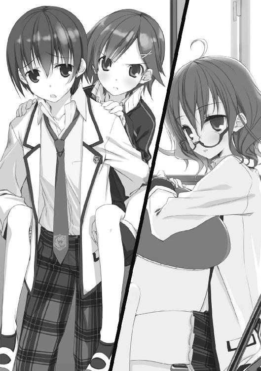
鹿野さんは──ムッとした顔で見返してきた。
「......降ろして」
「平気ですか？」
「木から降りる時に足首捻ったくらい、もう大丈夫」
「正確には、木に登ったはいいけど降りるとなると急に恐くなり思い切って飛び降りたら咄嗟に受け止めた僕を踏ん付けて足を捻った、ですよね」
「......そんなだから友達が少ないんだよ」
事情と現在の二人の関係が透けて見える会話をした後、鹿野さんはぎこちなく成田くんの背から降りて、わたしの対面──いつも成田くんが座る席だ、今は佐々原さんの隣になる──に座った。成田くんはその傍らに立つ。鹿野さんを全力疾走で追いかけた上、背負って戻ってきたのだから相当疲れているはずだが、目にだけは力が残っている。......最初にこの部屋に戻って来た時にも見た、わたしの大嫌いな、あの目だった。
「あ、あの......さっきはすみませんでした」
佐々原さんがおずおずと言った。
「あー......わたしこそごめんね。突然わけ解ンないことしちゃって......」
時間を置いたからか、それとも他に何かあったのか、鹿野さんはだいぶ落ち着いている。佐々原さんに対する態度も穏当だ。
「いえ、わたしが悪いんです。他人のことなんて何も解らないくせに出しゃばったことを言って......」
「ほ、ホントにいいからさ......」
むしろ佐々原さんの方が深刻な状態かも知れない。さっきまでは適当に挑発して気をまぎらわせていたが、本人が帰ってきたことで色々と思い出してしまったようだ。
......成田のバカはなんのフォローもしない。どちらかと言えば鹿野さんの方を気にかけているように見えた。やっぱりダメだこいつ。
さて......どうしたものか？
鹿野さんのこの落ち着き方を見ると──と言うかそもそも──わたしが何かする必要があるのか？
「......で、わたしをこの子に会わせてどうするつもり？」
佐々原さんの相手をしているときりがないと判断したか、鹿野さんが敵意を含んだ声で言ってきた。解り易いとも情緒不安定とも言える。
そうだ、どうするつもりだ成田くんよ。
わたしがじろりと睨め上げると、成田くんはまっすぐに見返してきた。
「まず聞かせてくれ。
仙波は、さっきの鹿野さんの話を聞いてどう思った？」
わたしが会議室での話を知っていることについて、鹿野さんは反応しなかった。こんな状況でこの部屋の特性に気付けたとは思えないので、佐々原さんが話したと思っているのだろう。あるいは、そこまで気が回らないのか。
わたしは鹿野さんに視線を移した。グッと緊張した顔。口元の歪み具合に脆さを見て取るのは臆断というものか。
「......そもそも、何を悩んでいるのかがよく解らなかった」
「っ、何って──！」
「落ち着いて下さいって！ 足痛いんでしょ！」
反射的に立ち上がりかけた鹿野さんを、成田くんが肩をつかんで押さえる。それでも収まらず、抗議するように成田くんを見上げた鹿野さんは、数十秒も睨み合った末にようやく動きを止めた。成田くんの頰の切り傷を目に入れてしまったからかも知れない。なんとか落ち着いたようだが、まだ収まりきったわけではないのか、顔が紅潮していた。
「ねぇ......本当にこれなの？」
「残念ながらこれなんです......」
......さっきからなんなんだ......？ わたしはまぁ、ちょっと気になる程度だが、内緒話の体になっているせいで佐々原さんが別ベクトルに落ち込んでしまっている。ああもう......ややこしい連中だな。
ともかく、鹿野さんはまだまともに会話できる状態ではなさそうだ。成田くんが代わりにしゃべり出した。まるで霊媒だ。
「ええと、鹿野さんが気になるのは大きく二点ですよね。
一、自分が御両親と血がつながっていないんじゃないかってこと。
一、そのせいで、家族の態度が冷たくなってる気がするってこと。
──で、いいですか？」
「......うん......」
素直にうなずく鹿野さんは──まさしく子供のようだった。
......どうも、表向きの活発な性格の裏で、周囲への依存心が強いタイプのようだ。なら──
わたしは、できるだけ無造作に口を開いた。
「まず、二つ目の方ですが──話を聞いていた限りではただの印象。具体的に何か被害を受けたわけじゃないんですよね？」
「それは......そうだけど。でも、気のせいじゃないよ。どう考えても、前よりずっと冷たくなってるんだから」
「......止まったエスカレータを登ったことはありますか？」
わたしの言葉に、鹿野さんは目をしばたたかせた。
「なんだよ......？ 急に、そんなこと......」
意味が解らないことに対して臆病になっているのか、探るような声だった。
「ないんですか？」
「......あるよ。だいぶ前だけど、駅前のスーパーのが故障した時に、登ったり降りたり」
「どんな感じでした？」
「ぇ............なんて言うのかな......つんのめる感じ？ 止まってるんだから普通の階段のはずなのに、いちいちバランスが崩れるみたいな」
「そう。事実は理解していても、エスカレータは動くものという固定観念が頭に違和感を生じさせる──ただ動かないものが、逆に向かってくるように錯覚させる。
そういうことだと思いますよ」
「？ そういうことって......？」
「だから──錯覚、気のせい。
高校生にもなったんだから親の態度が変わるのは当然、当たり前です。子供が親離れするように、親も──本意かどうかに関わらず──子離れするんです。そういう変化に戸惑いや反発を感じるのは珍しいことでもなんでもありません。鹿野さんのお家の場合は特に親子仲が良いそうですから、それが甚だしかったってだけでしょう。
現に、今回の件がなかったら、そう問題にもせずに慣れていったと思いますよ」
「そ、それはそうかも知れないけど......」
鹿野さんは何か反論したそうにしていたが、わたしはあえて無視した。わたしの言い分が正しいにせよ間違っているにせよ、この場で証明することなど不可能なのだ。この点についてはもう、問答する意味がない。
あえて根拠を挙げるとするなら、鹿野さん本人がそれだ。わたしの交遊が狭いことを差し引いても、これほど家族を慕っている高校生というのは初めて見る。児童文学級の家族愛の持ち主だ。そんな風な子供を育てた親が、たとえ出生に何らかの事情があったとしても、掌を返したように冷遇を始めるとは到底信じられなかった。
だから、もう一点の問題とやらも、わたしには問題とは思えない。
鹿野さんは、いつの間にか目尻に涙を溜めていた。自分が本気で悩んでいることを、わたしのような馬の骨にいいように言われるのが悔しいのだろう。
「なんだよ、さっきから......キノコのぬいぐるみなんて抱えて偉ッそうに......！
わ、わたしは本当の娘じゃなかったんだから、普通の話じゃないんだ。人間の心なんてどう変わるか分からないだろ！ 父さんも母さんも、ずっと心の闇を抱えてて今になって爆発したのかも知れないじゃないか！」
「漫画だかワイドショーだかの見過ぎです。心の闇なんて言葉を大上段に振りかざして恥ずかしくないのは中学生だけですよ」
小学生が言うと背伸びした感じが可愛いし、高校生が言うとなんだか残念だ。
「なッ............！」
顔を真っ赤にして絶句する鹿野さん。......ちょっと挑発し過ぎたか。成田くんに肩をつかまれたままでなかったら、また暴発したかも知れない。
わたしはなんとなくぬいぐるみを抱き直し、静かに続けた。
「......では、一つ目の『問題』について聞きましょうか。
鹿野さんは、御両親と血のつながった子供ではないのかも知れない。
そうだとしたら、なんなんです？」
「............言いたいことは解るよ。血のつながりなんかなくたって、家族になれるって言うんでしょ？ わたしだって、もし他人の話だったら、そう思うよ......さっき逃げ出して、一人で歩いてる時にも考えてみた。
でも、ダメなんだ......わたしは今までずっと、あの人たちの本当の子供だって思って生きてきた。無条件に甘えていい人たちと思って、迷惑かけて生意気言って......ああもう、恥ずかしいんだよ要するに！ 父さんと洗濯物を別にしてほしいって言ったことも、母さんに毎日おかずの文句を言ってることも、お祖父ちゃんに将棋で手加減してもらったことも！」
わたしは小さく息を吐いた。
「......そんなだから疑わしい。
鹿野さん、あなたは本当に生まれているんですか？」
「は............？」
我ながら唐突な言葉に、鹿野さんはさすがに惚けた顔になった。わたしは構わずに続けた。
「生理的早産って言葉を知ってますか？」
「......し、知らないよ。悪かったね......」
「常識の範囲外だと思いますから知らなくても恥ずかしくないですよ。
──普通、人間くらいの大きさの哺乳類の場合、母胎から出た時点で単独生存できるだけの能力を備えています。歩いたり食べ物を自力で摂取できたりですね。ところが人間の場合、二足歩行に適応した骨盤の穴の狭さのせいで、胴体の未成熟な状態でないと母体から上手く出て来られない。だから、全体としては甚だ未熟な状態で胎外に出ることを強いられる。
仔馬とかバンビの赤ん坊とか、脚をぷるぷるさせながら立ち上がる映像、よく見ますよね。あれ、弱々しいように見えますけど、人間の赤ん坊だったらぷるぷるさえさせられません。くたりと転がるだけです。
歩くことができなければ食物を得ることもできない。つまり生きていけません。あえて語弊のある言い方をすれば、人間というのは、母親の体から出た時点では狭義の『生き物』ではないんです」
「......みんなに頼り切って、一人では生きていけないわたしは、まだ生まれてないって言いたいの？」
難しい顔で聞き返してくる鹿野さんには応えなかった。答えは本人の中にしかない。自分自身だって怪しいわたしに判じられるはずがない。
云いたいことは、それ以前だ。
「──だから人間は、血の外で生まれてくる生き物とも言えます。
母親が、父親が、祖母が、祖父が、兄が、姉が、医師が、隣人が、友人が、教師が──その他諸々が干渉し合って、様々な遺伝を受けながら立ち上がり、歩き出す。ちょっとしたオーケストラですね。
そういう意味で、人間の辿る『産道』は、とても長く歪です。それは──あえて言うなら何かの呪いなのかも知れません。頭でっかちな種族は無様な姿で生まれ出て、立つこともできない内に死んでしまえ。ってね。
でも、その呪いのお陰で、人間はとても器用な一〇本の指が付いた手で、本当なら触れることも目にすることもできないはずの最弱の命を──生命でない命を、抱き締めあやすことができる。声をかけ励ますことができる。ヘソの緒を介さずに食物を与えることができる──しかもそれらは、母親一人のみならず、環境に属する全ての人間との関係性において行われる。
それは多分、祝福でもあるんでしょう」
わたしは言葉を切って、鹿野さんの目をまっすぐに見た。彼女のうるんだ瞳は揺れたが、そらされることはなかった。
「鹿野さん」
「なにさ......」
「あなたは、どんな人たちに生まれた子供ですか？」
沈黙が、落ちた。
問われた鹿野さんを始め、成田くんも佐々原さんも何も言わない。本人以外の全員の視線が鹿野さんに向いていた。
わたしが話したのは理屈だ。あるいは理屈とも言えない、一つの曲芸的な考え方。詭弁と言って差し支えない。それを提示しただけに過ぎない。相談に対する回答としては無様だし、いっそ卑怯だとも思う。しかし、わたしにできるのはここまでだ。それ以上に踏み込む能力も義理も覚悟もない。
薄情と取られても無責任と言われても構わない。わたしはそういう人間だ。そもそも、こんな益体もない厄介事に関わるような生き方はしていなかったはずなのに、妙な奴に懐かれたせいでこの様だ。
「はぁ......それって結構な屁理屈だよね。
でも、思い出したよ。......わたしの桃子って名前ね、お祖父ちゃんが付けてくれたんだ──桃から生まれた桃太郎みたいに強くなれるようにって。女の子に、なんて名前付けてンだか......」
だから、こんな不格好な鍵で扉が開くのだとしたら──
「──ホント、大雑把な人たちだよ」
それは単に、鍵穴の方が開かれたくて仕方ないだけなのだ。
佐々原さんに肩を貸されて、鹿野さんは資料室を去っていった。これから隣の部屋に入り直して謝ったりなんやするのだろう。御苦労なことだ。
彼女は去り際、「仙波さんだっけ？ 一応お礼言っとく。ありがとね」と無用の謝辞を残したが、その後でなぜかわたしと成田くんを見比べ、イタズラっぽく「でもやっぱり嫌いかも」と言った。
なんなんだ一体......あれとかこれとか品評じみたことを言われたことといい、最後まで釈然としない点が残ってしまった。どうでもいいが。
さて、全ての元凶たる成田くんだが、まだ部屋に残っていた。正確にはぶっ倒れていた。
全力追走の消耗と鹿野さんに喰らったダイビングキックのダメージ、その状態で人一人を負ぶって三階まで上がってきた疲労で、体力が限界を迎えてしまったらしい。鹿野さんが笑顔になった時点で膝から崩れ落ちて佐々原さんに小さな悲鳴を上げさせた。
今は、さっきまで鹿野さんが座っていたパイプ椅子に座って、だらりと天井を見上げている。
わたしは、その疲れ切った様を眺めて言った。
「椅子が汚れるから、可及的速やかに出ていってね」
「......上を向いてるから涙はこぼれない」
泣きたいのはこっちだ。平和な読書時間を邪魔されて、佐々原さんには胸焼けするような昔話を聞かされて、終いには自己嫌悪に耐えながら他人の家庭の事情を怪しい論法で煙に巻かされた。ここ数ヶ月では間違いなく最悪の日だ。しかも、それらを持ち込んだのは全て、目の前に居るこの男。相手が哀れなまでに疲弊していなければ実力行使で叩き出すところだ。佐々原さんには「ちょっと休んでから戻る」と言っていたので、そう長居するつもりはないのだろうが。
もうしばらくは、立つのもつらそうだ。
......しかしそうなると、持て余す。どうも、成田くんが側にいると本を読む気分になれない。退屈だ。退屈なのにそわそわする。
気が付くと、口を開いていた。
「......ねぇ」
「なに？」
成田くんは天井を見たまま応えてきた。
「なんでそんな、ベコベコになるまで頑張ったの？ 別に、どう転んでも君に損得はないでしょうに」
「ベコベコって人をスクラップみたいに......いや、まぁ、そうなんだけど......」
彼は、言葉に迷ったように逡巡した。照れてるのか？
「見切ったようなことは言えないけど、僕から見て、佐々原は......人と距離を置いて自分を保つタイプだと思ってたんだ」
予想外の名前が出てきた。鹿野さんに同情したとかなんとか、もっと偽善的なセリフを聞くと思ったのだが。
「それが、今回は積極的に鹿野さんに関わろうとした」
「失敗だったみたいだけどね」
「うん......仙波に言わせれば、そもそも好ましいことじゃないんだろうさ。僕だって、佐々原にとって何が幸いかなんて判りはしない。
でも、それでも......佐々原が自分で望んで踏み出したなら、一度の失敗で怯えたり諦めたりしてほしくなかったんだよ」
「............それ、後で佐々原さんに言って上げなさいよ。佐々原さん、君が怒ってると思ってるみたいだから」
「ゑ......？ なんで？」
知るか。
「本人に訊いて。
......それにしても、お優しいことね。どうやったらそんな風にお節介で独り善がりな人間に育つのか、興味がないわ」
「興味がないなら言うな......」
成田くんはこちらを一睨みしたが、すぐに目をそらした。
「......別に、優しいとかじゃないよ。僕だって毎度のように自己嫌悪してるし。そのキツさを知ってるから......他人が同じようなことになってると、自分もつらいってだけだ」
「自分の馬鹿さ加減に自覚があったとは驚きね。だったらやめればいいのに」
「うるさいな......僕だって解ってるよ、バカなことしてるって。それでも出しゃばり続けるのは多分......味を占めちゃったから、かな」
今度こそ訊き返さなかった──聞きたくないからだ！──のだが、成田くんは勝手に続けた。わたしの嫌いな、思い出話って奴だ。
「小学生の頃にさ、隣町の学校との合同遠足があったんだ。その時、大きな公園の中に在る粘土細工の体験施設に行って、みんなで教本みたいのに載ってるウサギを作ることになった。僕と同じ班になった一人が、すごく手先の器用な子でさ、見本よりずっと精密なのを作っちゃったんだ。今にも動き出しそうな奴で、僕なんかは悔しいくらいに感心したんだけど、それを見た周りの子が『みんなと違うから作り直せ』って言い出した」
............続きが読めた──というのは噓で、わたしは続きを知っていた。ついさっき聞かされたばっかりだ。
わたしがうんざりしているのにも気付かずに、成田くんは話を続ける。
「その器用な子は、一瞬だけ残念そうな顔をした後、すぐに粘土を崩して作り直すって言ったんだ。監督の先生はそのやり取りを聞いてたのに、何も言おうとしなかった。今にして思えば、協調性とか空気を読むとか、そういうことを教えようと思ったのかも知れない。でも、子供だった僕には、そんなのは......我慢できなかった。
せっかく上手に出来たのに壊すことないって言ったんだけど誰も聞いてくれなくて、それどころか男子の一人が面白がって踏み潰そうとした。僕は、自分のでもないのに、そのウサギ粘土を持って逃げ出して、両校の先生方が騒ぐ中、時間一杯公園の中で隠れてた。思い返すと酷いことしたな......先生たち顔真っ青だったし。まぁ帰る頃に先生たちと合流して、こっぴどく叱られたわけだけど。
帰り際、死守してたウサギを返しに行った。その子は僕のやったことに随分と驚いてたみたいだけど、そのウサギを受け取って──笑ってくれたんだ」
そう言った成田くんの顔にも微笑みが浮かんでいた。精神状態が当時に戻っているのか、元の童顔にも増して子供めいた表情だった。
「......僕はそれまでも自分勝手に暴走しがちな子供だったと思うけど、それで何度も失敗して、落ち込んで、これじゃいけないのかって思いかけてた。でも、その件からこっち、なんて言うか......覚悟が決まったよ。
だって、僕が諦めたら、あの笑顔を否定することになってしまう。それは......とても嫌なことだから」
自然と、冷たい声が出た。
「......さぞかし可愛い子だったんでしょうね」
「ゑ？ ......ああ、うん......オカッパ頭の、キレイな女の子だった......あっ、でも名前とか聞いてなかったし、その後は会うこともなかったし！ それにまだ子供だったから、そういう──」
わたしの白けた視線をマセガキへの非難とでも取ったのか、成田くんは真っ赤になって言い訳じみたことをまくし立てた。ちょっと必死過ぎる気がしたが、どうでもいい。ただ、なんかムカついてきてはいた。
......なんだ、このアホらしい状況は............今の話を佐々原さんにしたら、立ち直るのを通り越して昇天してしまうかも知れない。自分は他人に対して何もできないと思い込んでいるようだが、幼い頃の佐々原さんの「作品」と笑顔が、今の彼女が憎からず想う相手を支えているのだ。
してみると......佐々原三月、わたしにとっては元凶の片割れだったか。
わたしは、気のせいか痛み出したこめかみを指でこねながら、成田くんを遮った。
「はいはい......分かったから、いい加減帰って。もう歩けるでしょ」
成田くんはまだ何か言いたそうにしていたが、わたしが一睨みすると不承不承うなずいた。
「............」
大儀そうに立ち上がり、よろよろと──腰に来ているようだ──廊下側の扉に手をかける。そこで止まって、振り返った。......この部屋に来る連中は捨てゼリフを残さないと気が済まないのか？
成田くんは、視線だけで追っていたわたしをまっすぐ見返して、
「ホント、ありがとな」
と、いつになく素直な表情で言ってきた。
........................
わたしは何も言わなかった。やっぱりこいつは気に入らないと再認識しただけだ。
向こうも反応は期待していなかったのだろう。後は何も続けず、隣の部屋に帰っていった。
──静けさの戻った資料室に、すっかり最初の快活さを取り戻した──少なくともそれを取り繕えるようになった──鹿野さんの謝罪の声が聴こえてくる。結局、彼女にまつわる真実は何一つ判らない。でも、それはあまり重要でない気がした。わたしが見た限り、彼女は有数の幸せ者だ。
血がつながっていないと思った時にあれほど取り乱す家族がいて、それを相談すればベコベコになるまで付き合ってくれる他人がいる。何を恐れることがあると言うのか。
もちろん、これで今回の件が終わったわけではない。鹿野さんだって、今は落ち着いていても、そうそう割り切れるものではないだろう。何も終わってはいない。むしろ始まったのかも知れない。しかし、この件についてできることはやった。本当ならその程度ですらも関わりたくはなかった。わたしのやったことが毒になって感染を繰り返し、どんな悲惨な結果をもたらすか知れたものではないのだから。
全てあいつのせいだ。憎たらしい。忌々しい。だが、認めなければならない。
それでも関わってしまうのは、わたしがまだ、人との関わりに未練を持っているからだ。誰かのために何かをしたいという欲を捨て切れないでいる。だから、今回も──そしてあいつのせいで関わってしまったいくつかの厄介事も──終わってみれば......嫌な記憶ではない。
成田真一郎。
傷付くことを恐れながら、痛みを知りながら、それでも突っ走る馬鹿野郎。円のように循環する毎日を送っていたわたしの生活に全力で踏み入ってきて破壊したなるたま。
「..................」
......思わず溜息が出る。先ほどまでの成田くんと同じように天井を見上げる。
そうして、ぽつりと呟いた。
「......お疲れ」
勘違いしてもらっちゃ困る。
めんどくさい奴に捕まって疲れ切った自分自身に言ったのだ。
エピローグ４あるいはＶＳ仙波明希．竹田岬
さて。
我らが「迷わない子ひつじの会」に持ち込まれた鹿野桃子さんの一件には、考えうる限り最低のオチが付いた。
例の騒動があった数日後、子ひつじの会とは別の活動をしていた生徒会の元に、消え入りそうな様子の鹿野さんがやって来て、言ったのだ。
「あ、あの......ごめんなさい。宮野さんのが正しかったです............」
すぐには意味が解らなかった。あの日、宮野さんが言ったことというと──
「あの後、とにかく確かめなくちゃいけないと思って両親に訊いてみたんスよ。そしたら、父さん......いえ父が、そのぅ......稀血って言うの？ ボンベイ型って珍し～い血液型で、本当はＯ型ではないので、わたしの血液型がＡなのは別に普通なんだと......」
恥ずかしさのあまり、死にたそうな顔をしていた。ついでに言えば、その場の誰もそれを止めなそうな雰囲気ではあった。
「......えと、宍倉くんのお母さんの実家の寺が云々は......？」
「単に母方のお墓が在るだけみたい......」
「でも、宍倉くんのお母さんが気にしてたって」
「いや......それがその......うちの母さん昔は結構グレてて、精神修養しろとお祖父ちゃんに寺にぶち込まれたことがあったんだって......で、その時、歳の近かった宍倉くんのお母さんと仲良くなって、ちゃんと更生して子育てできてるか、気にしてもらってたみたい......」
佐々原さんが付け加えた。
「お祖父さんが桃太郎にちなんだ名前を付けてくれたというお話は？」
「......単にお祖父ちゃんが男の子の孫が欲しかったのにわたしが生まれたから、悔しまぎれにそう付けたって......その後で『でもやっぱり、実際遊んでみると女の子の方が可愛かったよ』と続かなかったら、生まれて初めてお祖父ちゃんを叩いてたかも知ンない......」
以上。
鹿野さんは怒られると思ったようだが、さすがにそこまで心の狭い人間は我が会には在籍していない。一番気をもまされたはずの佐々原さんに至っては「大事にならなくて良かったですね。くたびれもうけと言いますが、苦労が買うべき物らしいことを考えると、これはなかなかのもうけですよ」と若干ずれたようなことを言って喜んでいるようだった。
真一郎は苦笑していたけれど、その目には安堵が見て取れた。
──鹿野さんは最後に、はにかみながら頭を下げた。
「でも、事実を確かめる勇気が出たのは、みんなのお陰。
だから本当に、ありがとうございました」
余談だが、鹿野さんはその後、たびたび真一郎の教室を訪れてどうでもいいようなことをしゃべっていくようになったらしい。用もないのに上級生の女子がやって来るのだから、一年生の間ではちょっとした噂になっているようだ。佐々原さんにその話をしてみると、相変わらずの和人形のようなたたずまいで聞いていたが、無表情のまま手にしていたシャーペンの芯をペキッと折った。
──佐々原さんと言えば、最近少し変わってきた気がする。最初に会った時は、自分を殺すことで誰とでもそこそこ上手くやっていける代わりに、常につまらなそうにしている子だった。別に悪いことではないけれど、見ていて退屈だったので正反対のパーソナリティを持つ真一郎と組ませてみたのだが、思った以上に効果があったようだ。
鹿野さんの件があって以降は、特に顕著に表れている。何があったのか、それまであった迷いが吹っ切れたように見える。
例えば、自己主張ができるようになった。できるだけで、することは滅多にないのだけれど、みんなからかけ離れたユニークな意見を臆することなく表明できるようになった。いわゆる芸術家肌というものかも知れない。それが進歩なのか退化なのかは知らない。真一郎のズッコケぶりを見ると後者という気もするけれど、傍から眺めてて面白くなったことは間違いない。であれば、まぁ──これでいいのだ。
それとなく、何か理由があるのかと尋ねた時の答えは「理由は、わたし自身でした」。意味不明の言葉が返ってきた。が、今まで見た中でとびっきりの顔で言われたので、深く追及することはできなかった。
......なにはともあれ、今後とも楽しませてもらえそうだ。
さてさて。
今日は貴重な日だ。一週間くらい前から楽しみにしていた。わたしには放課後の用事がなく、真一郎と佐々原さんには第四会議室で資料整理を頼んである。さらに今日は、文化系の部活は半分ほどしか活動していない。ありそうで、中々ない日だった──
誰にも邪魔されずに、例の子に会いに行ける。
ノックはしなかったが、誰か来たのは気配で察せられただろう。わたしが資料室に入った時、彼女は闖入者には驚かなかった。読書時のクセか何かなのか、机にのしかかるような奇妙な姿勢を崩そうともしない。
が、わたしの顔を見ると、眼鏡の向こうの目を瞠ったようだった。調べた限り、学科の成績以外は優等生とは言い難い行状の持ち主のようだが、学校行事をサボタージュして周りに迷惑をかけるタイプではない。わたしの顔と立場は知っていたようだ。
──仙波明希。
名前や容姿は知っていたが、こんなに間近で見るのは初めてだった。かの暴れ鹿ほどではないが小柄で、血色などからするとそれは、遺伝と言うより単に栄養が足りてないんじゃないかという印象を受ける。ヒヨコでも飼えそうなボサボサ頭、実用性優先な眼鏡、全く化粧っ気のないやや丸顔。あまりにも無造作な女子高生と言えよう。そんな形をして、妙な姿勢でキノコのぬいぐるみを押し潰している様がシュールだった。
思わぬ訪問者に反応できないでいる仙波さんに、わたしは我ながら完璧、パぁーフェクトな女神の微笑を見せた。知りうる限りの彼女の性格からすると逆に反発を受けるかも知れないが、わたしとしては懐柔になろうと挑発になろうと、どっちだって構わない。
「仙波明希さん。こうしてお話しするのは初めてね」
相手を落ち着かせる、穏やかな声音──真一郎はこれを「なんか気持ち悪い猫撫で声」と抜かしたが──で、呼びかける。
仙波さんはすぐに我を取り戻したようだ。さすがに失礼と思ったのか、上体を起こして椅子に座り直す。それでも立ち上がらない辺り、いい度胸だった。
警戒に満ちた視線をわたしにぶつけてくる。
「......なんの御用ですか？ この部屋の使用許可なら──」
「ええ。もちろん、文芸部員なんだから問題はないわ。
今日はね、お礼を言いに来たの」
「お礼......？」
訝しげに聞き返してくる仙波さんは、しらばっくれているようには見えなかった。できるかどうかはさておき、腹芸をするタイプには見えない。本気で判っていないのだろう。
わたしは、ぺこりと頭を下げた。
「いつもわたしたちの相談会を助けてもらってるお礼よ。後、うちの書記二人と仲良くしてもらってるとか」
「..................成田くんが言ったんですか？」
無表情に言った仙波さんの膝の上で、例のぬいぐるみが描写するのもはばかられる惨状を呈していた。眼鏡の奥の目が完全に据わっている。
残念ながらハズレだ。
「いえ、たまくんじゃないわ。佐々原さんから聞きました」
ちなみに「たまくん」とは、真一郎の小さな頃のあだ名だ。「なるたまいちろう」で、たま。本人が死ぬほど嫌がるので、口に出してしか使わないけど。
仙波さんは、なにやら不覚に気付いたような顔で黙ってしまった。大方、自分の関与について真一郎には口止めしたが佐々原さんには忘れていたとか、そんな感じだろう。もっとも、佐々原さんにしても口の軽い方ではないから、半ば強引に聞き出したのだが。
「心配しないで。仙波さんのことを知っているのは、生徒会では書記の二人とわたしだけだから。佐々原さんにも、言いふらさないよう頼まれたし」
ちなみに、鹿野（桃）さんからも色々と証言を得ている──こちらはなぜか、頼みもしないのに散々悪口を並べ立ててくれた──のだが、あえて口にはしなかった。無意味に手札を披露する必要はない。
「......いえ、そもそも何もしていませんし......」
「そんなことないわ。あまり目立ちたくないようだから他言はしないけど、仙波さんはいわばわたしたちの必殺技、サンデーパンチなのよ」
「よく解りませんが......お世辞でも当てにされては困ります。わたしはそんな──」
言いかける彼女を、視線で遮る。普段は目が細いことで知られるわたしだが、その分見開いただけで相手にメッセージを与えられる。使いこなすと意外に便利だ。
そうしてわたしは、今日の本題を告げた。
「言いたいことは解る。でも、できればこれからも真一郎たちのわがままに付き合ってやってほしいの。
これは、わたしからのお願いよ」
「ぇ......？」
わたしの雰囲気が唐突に変わったことにか、それとも言葉の内容にか、仙波さんは間の抜けた声を出した。
けれど、わたしはすぐに普段の口調に戻した。
「あの子は勢いばかりあるけれど中身のないバカです。でも、あの勢いは勢いで貴重なものだと思うの。
だからね、挫けないよう、あなたのような力のある人に助けてもらいたいのよ」
「貴重？ そうですか？」
疑わしいと言うより反語に近いニュアンスで言う仙波さん。あの朴念仁の真一郎が入れ込んでるというからどんな子かと思っていたが、なるほど。悪意のない敵意の持ち主というのは、存外に可愛い。頭撫でたい（凄い目で睨まれそうだとは思うが、それがたまらないのだ）。
昏い欲求を抑えつつ、にっこり笑って答える。
「だって、日常には変化が必要でしょ？」
「わたしは要りません。
だから、先ほどのお頼みは謹んでお断りします」
速いな、この子は。「打てば響く」どころか、打ち切る前にいらえが来る。宮野さんなんかも速いけど、彼女は人の言い分を聞き終えた後で考えてから返す。この子は、会話の途中で相手の言うことを予断して、先回りして自分のセリフを構築している節がある。
内心舌を巻いたが、ここでナメられてはいけない。
「あら。でも、わたしがうっかりこの部屋の改装案なり生徒会での管理案なり出したら、必然的に仙波さんの日常も変化しちゃったりしちゃわなかったりするわね」
「..................」
今度は返事が来ない。わたしがこういう手段に走るとは思わなかったのか、呆気に取られた顔をした後、悔しげに睨め上げてきた。
勝った。勝利とはいつもむなしい。しかし世の中、勝てばよかろうなのだ。
哀れな敗北者・仙波さんは、それでも反抗を続けた。
「......生徒会長が脅しですか。でも、確かにわたしはこの部屋を気に入っていますが、そこまでの執着があるわけじゃないんですよ」
あながち噓でもないだろう。ここで話を切ってしまうと、意地になって自分から退去するとか言い出しかねない。させてなるか。こんな面白い生き物を、東原さんに独占されるのはもったいない。
それに、わたしにも勝算があった。鹿野さんの話や佐々原さんの挙動からして、仙波さんには譲れない一線があるはずだ。そこが決壊すれば、彼女自身どうなるか予想できないような。
「いいえ。あなたは協力してくれるわ」
「......根拠は？」
もう一度目を見開き、にっこりと告げる。
「だってあなたは、たびたび真一郎の訪問を受けてるにもかかわらず、この部屋から拠点を移そうとしなかった。わたしに言われて出て行くのなら、それは──わたしよりは真一郎を好きだってことになるでしょう。
あなたは、その事実に耐えられる？」
今度こそ仙波さんは黙った。降伏の儀式だとでも言うように、あっさりと肩をすくめた。
真一郎が知ったら泣くかも知れないけど、まぁ──
どうでもいいか。
さてさてさて。
言うべきことは言ったし、伝聞でしか知らなかった仙波さんの人柄にも直接触れることができた。本日の取れ高は十二分だ。
このまま帰って、たまには一人で優雅な午後を過ごすのも良いが......
........................
その前に、せっかくここに来たのだから、一つ相談して行こう。
すでに読書に戻っていた仙波さんを見下ろしながら、わたしは無造作に口を開いた。
「ねぇ仙波さん。早速一つ相談があるのだけれどいいかしら。いいわよね？」
「よくないです」
やはり速い仙波さんの拒否。当然、それ以上の速度で無視した。
「実は最近、子供の頃から面倒を見てやっている近所の男の子が色気付いて来て、なんだか気になる女の子がいるみたいなの。でも、相手の子には徹底的に忌み嫌われ、塩ビのテープ台ぶん投げられたり言葉のデンプシーロールでタコ殴りにされたりしているという話。
その女の子は、希に見るほどに自分というものを強く持っていて、それは男の子の方も同じなのだけれど、二人の性格はまるで正反対なんです。女の子は誰からも独立することで自分と他人を守ろうとして、男の子は誰かを幸せにすることに自分の価値を見出そうとしている。女の子はどうも、男の子を見ていると、自分の生き方を否定されているような気分になって落ち着かないみたい。
──でもね、男の子は決して女の子を否定したりしません。なぜなら、女の子がもう幸せであることを、きっと知っている──ううん、信じているから。
その子は、人が自分と違うことを認められる子。そうして、その上で好きになることができる子よ。
だからわたしは、その男の子と女の子に仲良くしてほしいと思ってるんだけど──
何か、良い方法はありませんか？」
学校行事なんかでスピーチ等は慣れているとはいえ、えらい長いセリフをしゃべってしまった。
対して我らが仙波明希。
さっきまでと違う姿勢で本を読んでいる彼女の顔は、ハードカバーの陰になってうかがうことができない。
しかし、わたしの問いに対する回答は、極めて明瞭な声音で、しかも圧倒的なまでにスリムだった。
「知りません」
アペンディクス．竹田岬
面食らう、というのはこういう時のためにある言葉だろうか。
仙波さんとの楽しいおしゃべり──向こうは最後に重厚な舌打ちをくれたけど──を終えての帰り際、一人で校門から出たところで──
異様なものを見つけた。
校門の陰から、おどおどと校内をうかがう人影。
どうも、誰かが出てくるのを待ち受けているように見えた。それも、本人には見つからないように。でも確実に見つかりそうな様態で。
不審者と言えば不審者なのだろう。警察に通報してもいいレベルであることは疑いない。しかし不審なだけで、危険な気配はまるでない。そんな風体だった。まだ人通りのある時間なのに騒ぎになっていないのはそのせいか。
教員はまだ帰る時間ではないし、一般の生徒としては無視して──と言うか見なかったことにして──通り過ぎたいところだろう。わたしだって、周囲の景色から浮きまくったその人影を見ないようにして帰路を急ぐ他の生徒たちに倣うべきだとは思う。
......しかし、この身は栄えある生徒会長。生徒の自治を司る者として、ここまで露骨に怪しい輩に見て見ぬふりをするのも如何なものであろうか。（建前）
て言うか、なんか面白いことになりそうだ。（本音）
確信に近い予感に動かされ、気付いた時には、声をかけてしまっていた。
「ええと......なにやってるの？」
「どわっ!?」
リアクションの豪快さは性差廃絶に満ちていたが、その格好はひたすらに可愛らしい。
──ウェイトレスか何かの制服だった。落ち着いた色調で、動き易いようにきっちり調整してあるところを見るとコスプレの類ではないようだが、無意味にフリフリな装飾は多分に趣味的ではある。どこかで見かけたような気もするが......思い出せない。
容姿の方は──美人と言うには少し幼い、としておこう。背はわたしと同じくらいあるが、顔立ちからすると中学生くらいか。可愛いと言えば可愛いのだが、愛嬌が先に立つ感じだ。この表情の豊かさは佐々原さんに分けて上げたい。
そんなことを思いながら、あたふたするウェイトレスさんを眺める。
滑稽なまでに狼狽した彼女は、混乱の波をかき分けて大きな声を出した。息継ぎのようにしゃべる子だと思った。
「んぇっ──あ......ど、どちら様っ!?」
こっちのセリフなう。
とは思ったが、わたしはあくまで鷹揚に頭を下げて見せた。そうして顔を上げた時には、嫣然たる女神様の笑顔。
「急に声を掛けたりして、ごめんなさいね。
でも、あなたが何をしているのか気になってしまって。わたし、こう見えてもこの学校の生徒会長をさせてもらってるのよ」
「生徒会長!?」
ウェイトレスちゃんは、またも頓狂な声を上げて目を見開いた。
その大仰な表情のまま、わたしを上から下まで眺め回して、溜息を吐く。
「はぁ......道理で制服なのに大人っぽいと思った。会長さんなら当然、当たり前......」
「あら......ありがとう」
素直な賞賛が心に沁みた......そう、これが正常な反応だ。真一郎のように「如才なさ過ぎて、かえって内面のドス黒さが浮き彫りになってるよね」とか言うのは例外中の例外なのだ。小さな頃はミサちゃんだサキ姉だとワンコのように付いてきたくせに、いつの間にか反抗的になってまあ......
自信がビビビと回復して、いつにも増して寛容な微笑みを浮かべるわたしに安心したのか、謎の野良ウェイトレスは緊張しきっていた口元を緩めた。
「あ、あの......生徒会の人ってことは、子ひつじの会っていうのもやってるんですよね？」
「あら、よく知ってるわね？」
他校生か中学生かと思ったが、なんで我が校のローカルな余興......もとい生徒福祉を知っているのだろう？
「はい、これに書いてありました！」
そう言ってウェイトレスがポケットから取り出したのは、学校案内のリーフレットだった。確か受験生向けに近県の中学校に配布している物で──そう言えば、出来たばかりの今年度版の片隅には、特徴的な生徒会活動としてひつじ会のことも載っけられていた。
ということは受験生の学校見学──依然服装が謎だが──かと思ったら、
「実は、この学校に居るうちの姉のことでたっての相談があるのです」
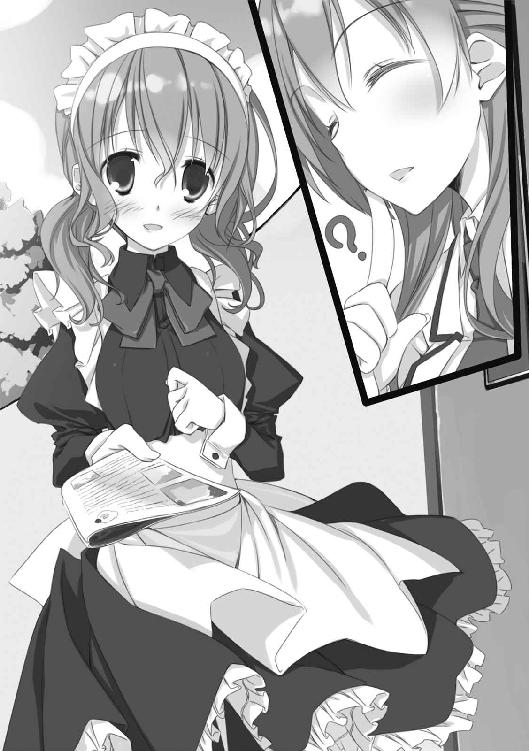
よほど気負っているのか、妙な言葉遣いと思い詰めた顔で訊かれてしまった。
「なんか姉がブラを着けているのですが、なんででしょう？」
──予感の斜め上を行く娘さんだった。
（続く）
あとがき
初めまして、玩具堂と申します。このたび、第15回スニーカー大賞の大賞をいただきましてデビューということになりました。本作は受賞作『なるたま～あるいは学園パズル』に加筆・修正を加え、改題したものになります。
中身を読んでいただいた方にはお解りかと思いますが、改題前のタイトルまんまの内容となっております。魔法もＳＦも犯罪もありません。とある学校で持ち上がった牧歌的でややっこしい厄介事を、お節介の過ぎる少年と引き籠もりたい少女他がトンチで解決するお話です。
何がミステリーかって、右のようにまろやかな話がどうして大賞などと恐れ多い栄にあずかったのか、ということです。応募した当初は大賞をいただけるなどとは思わず、特別賞的なものに引っかかれば目っけ物くらいに思っていました。それがこうして本になり、日頃通っているような書店に置かれ、国会図書館に収蔵されたりするわけです。夢のくせにかないました。ありがたくも不可思議千万です。
この謎はきっとスニーカーからの挑戦です。わたしには解けませんでした。読者諸氏の灰色の脳細胞を駆使して解決して下さい。答えをスニーカー編集部宛てに送っていただければ全て読みます。で、その回答を元に、『ＶＳ大賞』とかそのうち書きたいと思います（＝ネタ下さい）。
......ええと、そろそろ担当さんの目が恐いです。もっとポジティヴなことを書かないと怒られてしまいます。
はい。というわけで書きます。倒れる時は前のめりです。いや倒れません。
──ありがたいことに、このシリーズは続刊が予定されております！ 順調に行けば二〇一一年の早い時期にお届けできるはずですので、本書に興味を持って下さった皆様には引き続きの御愛顧をお願い申し上げます！
さらに、ドラマＣＤの制作も決定しているとのことです。この話をどう音声ドラマにまとめるのか、これも結構な謎です。楽しみです！
最後に謝辞を。
家族やこれまでの人生で関わってきた全ての人々（特に某ロンド亭の諸氏）、拙作にもったいないくらいの知遇をいただいた選考委員の皆様（お名前を拝見するたびに拝みます）、担当Ｍさん始めスニーカー編集部の皆様（いろいろとお世話かけました）、コピー用紙束だった原稿を一冊の本に仕上げて下さった制作関係者各位（本当にすごいお仕事だと思います）、乱文を彩るもの素晴らしい挿絵をいただいた籠目先生（想像を遥かに超える仕事にひたすら感激です）に。
そして、わたしの初めての本をお読みいただいた全ての読者に、百万の感謝を捧げます。
二〇一〇年一〇月 玩具堂 拝
本書は第15回スニーカー大賞（選考委員：安井健太郎、岩井恭平、ＴＨＯＲＥＳ柴本、竹田滋）《大賞》受賞作「なるたま～あるいは学園パズル」を改題し、加筆・修正したものです。
子ひつじは迷わない
走るひつじが１ぴき
玩具堂
角川スニーカー文庫
平成24年9月1日 発行
発行者 新名 新
発行所 株式会社角川書店
〒102-8078 東京都千代田区富士見2-13-3
http://www.kadokawa.co.jp/
(C) Gangdo 2010
本電子書籍は下記にもとづいて制作しました
角川スニーカー文庫『子ひつじは迷わない 走るひつじが１ぴき』平成22年11月1日初版発行
平成23年7月5日4版発行